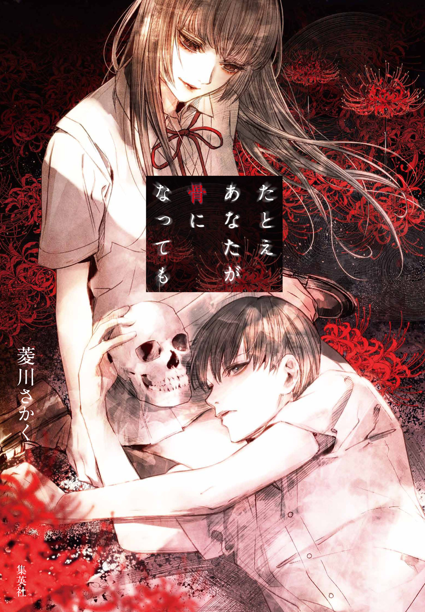
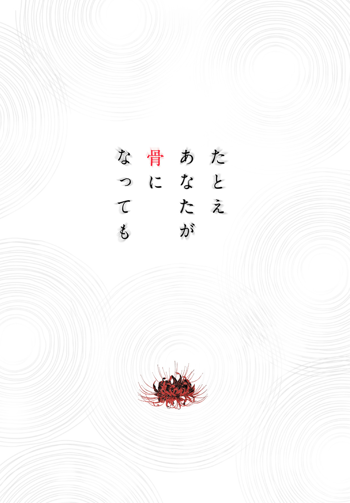
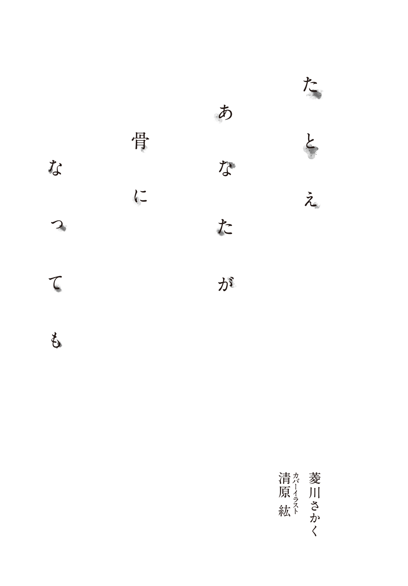

| たとえあなたが骨になっても | |
| 菱川さかく & 清原紘 | |

この本は縦書きでレイアウトされています。
また、ご覧になる機種により、表示の差が認められることがあります。


contents
＊この作品はフィクションです。実在の人物・団体・事件などにはいっさい関係ありません。
玄関の戸を開ける。
大きな声で、ただいま、と告げた。
親は留守だし、口うるさい妹も部活。だけど、この家には僕を待っている人がいる。
スニーカーを乱暴にぬぎちらかして、自室のある二階へと向かった。
片足が乗るたびに、階段がぎぃぎぃと音を立てる。僕の家は他界した祖父の代に建てられた木造二階屋で、裏道を通るトラックの振動でもガタガタ揺れる脆弱な構造をしていた。今の耐震基準にてらせば一発不合格になるのは間違いない。
特に揺れが大きい二階の西側が僕の部屋。
制服のポケットから取り出した鍵をドアノブの穴に差しこもうとするも、気がはやるばかりでうまく鍵がまわらない。
あの人は意外と気が短い。あまり待たせるわけにはいかない。
「ただいま戻りました」
ようやく扉を開けた僕は、六畳間に身を滑らせて言った。
日に灼けた色あせた畳。あちこちに傷跡が残る年代物の学習机。奥のベッドは僕が朝起きた時のままだ。室内は全体的にセピア色で、古色蒼然といえば聞こえがいいけれど、ようは単に古臭いだけである。
冬の今はいいけど、梅雨の時期にもなると、じめりとした黴臭がどこからともなく漂ってくる。あの人をそんな部屋に住まわせていることを申し訳なく思っていたけど、彼女はなかなか居心地がいいと言ってくれたっけ。短気だけど、寛大なところもあるんだ。
時刻は夕方。西向きのアルミサッシ窓から、血のような赤い夕陽が差しこんで、僕の影が畳に長く伸びていた。
「雄一くん。遅かったわね。暗いのには少し飽きているの」
声は押入れの中から響いてくる。
夜に咲く花のような、どこかしっとりとした憂いをおびた、あの人の声だ。
「すいません、先輩。今日はめずらしく依頼がありまして」
僕は急かされるように、ふすまに手をかけた。
口調は穏やかなのに、先輩の言葉には圧力がある。つまり、早く開けろ、と言っているのだ。ふすまを開くと、折りたたんで詰めこんだ布団の上に、いつもの様子で先輩が鎮座していた。
「......あら。それは興味深いわね。一体、どんな謎かしら？」
薄暗い空間から響く声のトーンが少しだけ高くなる。
後光院凜々花。それが僕の部屋に住む先輩の名前。
容姿端麗。頭脳明晰。才色兼備。文武両道。絶世独立。
あらゆる賞賛の熟語がこれほど似合う人間はそうはいないだろう。名字の通り、彼女は後光がさすほどまばゆい美貌と聡明な頭脳を備えていた。全体に漂うどこか黒々としたオーラすらも、極上の気品の一部となっている。僕が思うに、神様が完璧な人間を作ろうとしてできたのが先輩なんだ。
そんな彼女は、謎をこよなく愛している。
学校で探偵部という部活を立ちあげて、これまで様々な問題をあざやかに解決してきた。それどころか、警察にも協力して難事件に挑むスーパー女子高生探偵だったのだ。
先輩が、殺されるまでは。
三か月近く前。
ある事件を解決した後、先輩は何者かに殺されて山の中に埋められてしまった。
しばらく土の下にいたせいで、濡れ羽色の滑らかで艶のある長髪は抜け落ち、新雪のような白い柔肌は堅い石灰質にとってかわり、全てを見通す大きな黒い瞳があった場所は、落ちくぼんだ暗い眼窩となっている。
つまり、簡単にいうと先輩は骨になってしまった。
普通、土の中の死体が白骨化するには年単位の時間がかかるそうだけど、先輩は比較的浅く埋められたため、獣や虫の餌食となって速やかに骨だけに分解されたようだ。
だけど、僕は気にしない。本人には恥ずかしくて言えないけど、主成分がリン酸カルシウムになったとしても、僕の先輩への気持ちには変わりはない。
もちろん、誰にも渡すつもりはないし、先輩を掘り出して保管していることは僕だけの秘密だ。どのみち僕以外は彼女と話すことはできないから、これでいいと思っている。
「何を考えているのかしら。雄一くん？」
「あ、いや、何もっ」
だしぬけに問われて少し慌ててしまった。
押入れの中にちょこんと置かれた頭蓋骨が、僕を見上げている。
頭の骨は二十個以上の部品が組みあわさって構成されているそうだけど、モデルなみのスタイルを持っていた先輩は頭のサイズも小さい。この程度の大きさでよくあれだけ頭がまわったものだ、と素直に思う。
「雄一くん。あまり人の顔をじろじろと見るものじゃないわ。これでもわたしは一応、淑女なのだから」
「あ、すいません。つい見とれてしまって......」
彼女は骨になってしまったけれど、僕には生前の美しい顔が重なって見えている。
「......ふふ。石灰質になってそんなことを言われるとは思わなかったわね。でも、人の美醜などわたしにとってはどうでもいいこと」
周りがひれふすほどの容姿を持っていたのに、先輩はあきれるほど外見に淡泊だ。骨になってもそうなんだから、筋金入りである。
結局、彼女の瞳がらんらんと輝くのは未知の謎に遭遇した時だけなのだ。それは死んだ今でも変わらない。三つ子の魂百までと言うけど、それが死後も続くことを僕は知った。
「さあ。そんなことより、どんな依頼なのか話してくれないかしら？ 謎が待っているわ」
先輩はやや高揚した声を、上顎骨と下顎骨の間から漏らす。
僕は少し安心した。
死んでしまったけれど、先輩は何も変わらない。
いつだって好奇心にあふれ、少し強引で、どこか妖艶な輝きで他者を魅了するのだ。
探偵部員の僕としては部長の命令に従わないわけにはいかないわけで。結局、彼女が生きていた頃と同じように、促されるまま色んな事件に首をつっこむことになるだろう。
――そして。
いつか、先輩を殺した奴を見つけるんだ。
曇天。
朝の通学路で見あげた空は、のっぺりした灰色の雲におおわれていた。
十一月も後半になると、肌をさす空気は一層の冷たさをおびてくる。僕は思わず毛糸のマフラーをいつもより余分に巻きなおした。
まるで厚く垂れこめた雲が町にふたをして、冷たく淀んだ空気を閉じこめているような。白い息を吐きながら、ふとそんなことを考える。
家を出たのが遅かったせいか、高校に向かう道のりには人気がない。学校指定のカバンと体操着入れを両手に持った僕は、そんな通りをとぼとぼと歩いていた。
室骸町。
どことなく不吉な印象が漂うけれど、それが僕と先輩が住む町の名前だ。
人口は約四万人。四方を山に囲まれた盆地で、その山々には四山というこれまた縁起の悪そうな名前がつけられている。
町は日本海側に位置しているため、冬になると冷たく乾燥した季節風が海のほうからやって来て、海水を巻きあげていく。それが山にぶつかって雨や雪を降らすため、今日のようなぐずついた天気が嫌でも多くなるのだ。
「......まあ、僕は好きですけどね。この町」
ぽつりとそう言って、右手の青い体操着入れを流し見た。
神社仏閣が乱立し、古い武家屋敷が居並ぶこの町は、日本情緒あふれる小京都としても知られていた。よくジジくさいと言われるけど、僕はお寺や古い建物巡りが大好きだ。
「雄一くん。一つお知らせがあるわ」
「な、なんでしょう？」
突如、右手の先から響いた声に、僕は少し慌てて応じた。
「もしかして酔っちゃいましたか？ あんまり振らないように気をつけていたんですが」
体操着入れの中には先輩の頭の骨がおさまっている。学校指定のカバンに頭蓋骨は入らないが、体操着用バッグになら入る。今日は体育があるため、こうして一緒に通学することにしたのだ。もちろん、先輩がそう望んだから。
「酔う？ すでに三半規管もないのにそんなことがあるのかしら？ でも、それはいいわ。問題はあなたが誤った考え方をしていること」
「誤った考え方？」
僕は体操着入れのチャックを少し開いた。冬用ジャージに包まれた先輩は、暗い眼窩を僕のほうに向けている。よく目を凝らすと、濡れた長い睫毛に縁どられた黒真珠のような瞳がそこにぼんやりと現れた。
「今、雄一くんはこの町が好きだと言ったわね」
「え、ええ」
「それは町が小京都を標榜しているから。それが一つの理由じゃないかしら？」
「あ、はい。確かにそうですが」
古都を愛する僕にとっては、栄誉ある称号だ。
「残念ながら、自称なの」
「はい？」
「小京都というのは、厳密には全国京都会議に加盟している自治体を指すの。わたしたちの町はそこに加盟していない」
「な、なんですって!?」
「しかも、本家に近づこうとしたのか、七ツ橋という名称のお土産まで作ったのよ。さすがに大々的に売り出せないからお店では隅のほうに置いてあるけれど」
「う、訴えられないんですか。それ？」
「幸いそういう話は聞かないわね。まあ、相手にされていないだけでしょうけど」
......なんてことだ。
てっきり全国区だと思っていたのに、単なるなんちゃって小京都だったなんて。
体操着入れの中の先輩は、僕の様子を見て薄く微笑んでいる。落胆した姿を面白がっているのだ。変な言い方だけど、先輩は死んでから明るくなった気がする。生前は近くにいても、どこか人を寄せつけない雰囲気があった。
それを言うと、先輩は少し黙って、こう返した。
「ねえ、雄一くん。今の姿と昔の姿。どちらのほうが人を寄せつけないかしら」
「あ、す、すいません。そういう意味では......」
「ふふ。まあ、いいわ。人は死んで明るくなる。意外と興味深い命題ね」
「あ、ありがとうございますっ」
先輩の一言に僕はつい一喜一憂してしまう。こんな幸せな時間が過ごせるのは、なんだかんだ言っても、この町にいたおかげだと思う。
僕は小さい頃からちょっと変わった子だと言われてきた。年をとって知恵を身につけてからは、目立たないように行動する術を身につけたけど、先輩の前なら遠慮はいらない。どうせ隠したって彼女は千里眼で見通してしまう。
凜々花先輩と二人、静謐な朝の登校を楽しんでいたら、小さな橋に差しかかった。
皆下橋というこれまた不穏な名称で、手すりはなく、幅三メートル、長さ五メートルほどの木造の橋。手前にある立て札には、明治時代に建造された由緒正しい橋だとあるが、もしかしたらそれも自称なのかもしれない。
真ん中辺りまで進んだところで、僕はふと橋の下に顔を向けた。
橋梁は大人の背丈くらいの高さで、足下には川が流れている。町を囲む四山の一つに源流を持つ小川で、澄んだ水面は蒸気のような霧にうっすらとおおわれていた。
「なかなか幽玄な光景ね。三途の川を思い出すわ」
久しぶりに外出した先輩は、体操着入れの隙間から少し弾んだ声を出した。
「え？ 三途の川って本当にあるんですか？」
「さあ、どうかしら。知りたい？」
「は、はい。知りたいです」
「ふふ。あなたも死んでみれば分かるわ」
「あ、じゃあ、まあ、そのうち......」
どうやらからかわれたらしい。
生前はそんな行為が皆無だったことを思うと、やっぱり先輩は少し明るくなった気がする。そして、朝もやにつつまれた小川は確かにこの世ならざる趣きを感じさせた。
祖父がまだ生きていた頃、お盆の時期にここで灯籠流しをやったことがある。
蠟燭を灯したたくさんの木舟が夜の川を下っていくさまは、黄泉の国とのはざまにいるようで、とても幻想的だった。ただ同時に、この舟たちの末路はどうなるのだろう、との疑問を子供心に持ったものだ。
祖父が言うには、海に行きつくものはあまりなく、その前にどこかで姿を消すらしい。現実主義者だった彼は、お空に消えていくなどと子供だましの答えは返さず、川のどこかに流れが滞る深い穴があり、そこに溜っているのではないかと説明した。
暗い水底に数多の舟が難破船のように沈んでいる様子を想像し、それはそれでぞっとしたことを覚えている。そんな話を先輩にしていたら――
「雄一。なぁにそんなところで一人でしゃべってんのよ!?」
甲高い声が、背中のほうから響いた。
「入水自殺でもする気？ 残念だけど、その川足着くから」
そこにはショートカットを赤いゴムで強引にサイドテールにまとめた女が立っていた。薄手のコートも赤。チェックのマフラーも濃淡の赤。赤ずくめの少女だ。
くりくりとよく動く大きい瞳。服の彩りに負けないほど、気性も闘志も赤にあふれている。快活が服を着たようなこの娘の名は、榎並京子。
僕が通う高校の同級生であり、探偵部の副部長でもある。
「ああ、京子か」
答えた僕は、何食わぬ顔で後ろ手で体操着入れのチャックを閉める。
「ふふ。水死はできなくとも、今の季節なら心臓麻痺で死ねそうね」
閉めきられる間際に骨の先輩がそう言ったが、京子には聞こえていない。
「ほら、もう昨日言ったこと忘れてる。京子じゃなくて、京子さんでしょっ」
同級生は小リスを思わせる顔を僕にぐいっと近づけてきた。鼻の頭同士がくっつくような距離。わずかに熱をおびた白い吐息が頰にかかる。
しばしその体勢でいた京子は、やがてにんまりとした笑みを形づくった。
「ふふっ。やっぱり私のほうが少し背高い。部活の立場も身長も私が上なんだから、雄一は私を敬わなきゃ駄目よ」
赤い手袋をはめた両手を腰にあて、勝ち誇った顔を向けてくる。
彼女がこんなに気安いのは、僕らの家が近く、幼稚園から同じクラスになることが多かったためだ。しかし、それゆえに今さら呼び方を変えるのは難しい。
ちなみに、彼女は特別長身なわけではなく、むしろ僕が一般男子に比べると小さいのだ。小柄で、華奢で、中学まで女子に間違われることすらあった僕は、雄々しく成長してほしいとの親の期待が込められた名前を見事に裏切っている。
「そんな横暴な。成績は僕のほうが上だよ」
「それはノーカウントよ。探偵に成績なんて関係ないわっ」
「......なら身長も関係ないと思うけど」
「だまらっしゃい。とにかく、お互いの立場をはっきりさせておく必要があるの。私は探偵、あんたは雑用係」
「雑用係？ ......せめて助手にしてほしい」
「とにかくっ。凜々花先輩が留守にしてから、はじめて依頼がきたんだから。先輩が不在のあいだ、私たちがしっかり探偵部を守るのよ」
相変わらず息のかかる距離に顔を近づけて、幼馴染は決意を口にする。
京子が「留守」という言葉をつかったのは、先輩が死んでいることを知らないからだ。なぜなら、凜々花先輩は公式には失踪という扱いになっているから。彼女が殺されたことを知っているのは、僕と先輩、それに、犯人の三人だけだ。
「分かったよ。じゃあ、せめて副部長と呼ぶのでどうかな？」
先輩を案じる幼馴染の心境をおもんぱかって、僕は穏やかに言葉を返す。
京子の待ち人は、僕の右手にぶらさがっているけど、もちろんそんなことは言えない。
先輩はとっても元気だよ。死んではいるけど。
探偵部の同期は、しばらく腕を組んだ後、僕を正面に見すえた。
「......うーん。ま、いいか。じゃあ、副部長で許してあげる」
「そうか、良かった。ところで副部長」
「なに？」
「このままだと遅刻するけど」
袖をまくって、腕時計を見せる。
「な。そっ、そういうことは早く言いなさいよっ！」
赤い装いの少女は、橋げたをカンカンと踏み鳴らして、通りを走り去っていった。ここからなら急げば数分で学校に到着するが、僕は慌てずその後をゆうゆうと歩いていく。
「雄一くん。あなたも人が悪いわね」
「しょうがないですよ。今日は先輩と一緒なんですから」
青バッグから漏れた声に、僕は淡々と答えた。実は京子に見せた腕時計は五分すすめてある。先輩の頭を持ち歩く身としては、必要以上に他人に近づきたくないのだ。
「その前に、依頼の話を聞きたかったわね」
「あ」
失策。約三か月ぶりに入ったという依頼。実は受けつけたのは京子であって、僕はまだ詳しい話を聞いていなかった。
昨日は京子から互いの立場について延々説教があった後、依頼人が来るから今日の放課後に部室にいるようにと言われただけだ。先輩はそのために同行しているのに。
「......すいません」
「まあ、いいわ。放課後まで待つわ。ふふ。人間死後も適応するものね。長く埋められたおかげで、前より待つのには慣れたみたい」
しゅんとする僕に、凜々花先輩は珍しく寛大な心を見せた。
「でも、榎並さんには少し申し訳なかったわね」
「............」
いつも前向きな先輩の声に、わずかな寂寥感がふくまれている。
京子は先輩を強く慕っていた。
子供の頃からシャーロックホームズを読みふけり、ひそかに探偵へのあこがれを持っていた少女は、進学した高校で本当のホームズに出会ったのだ。なのに、副部長に就任してワトソン役を満喫していた矢先に先輩は失踪してしまう。
凜々花先輩がいなくなれば、もう誰も探偵部をたよらない。京子は依頼人のいない部活を、副部長としてずっと守ってきた。僕への当たりが前よりきつくなったのも、それだけ重責を感じてのことだろう。だけど、どんなに待っても先輩は帰ってこないのだ。
「ねぇ、先輩。やっぱり犯人を探しましょう」
「............」
僕の提案に、今度は先輩が無言で応える。
「先輩を殺した犯人を見つけましょう。そうしないと、いつまでも先輩は行方不明扱いです。殺されたことが分かれば、帰りを待つ人たちも事実を受けとめることができます。もちろんつらいことですけど、やっぱりそれが必要なんじゃないでしょうか？」
「......そうね。だけど、正直、興味をひかれないのよね。わたしの琴線に触れる謎じゃないみたい。少しもわくわくしないわ」
これだ。
僕が何度言っても、先輩は自分の事件に興味を示さない。
先輩は人気のない道を歩いている時、後ろから刺されて殺されたらしい。たしかに一見すると通り魔的事件で面白みはないかもしれないが、その後埋められているうえに被害者は自分なのだ。
気が向けば赤の他人の事件にも無理やり首をつっこむくせに、興味がわかなければ自分の殺人事件にすら無関心。このあたりは、おそろしいほど冷徹で、淡泊だ。
「だけど、雄一くん。あなたも本当は事件を解決したくないんじゃないの？」
「な、なんでですか？」
「だって、本当にそうしたいなら、わたしの骨を中敷さんのところに持っていけばいいじゃない。そうすれば間違いなく捜査がはじまるでしょう」
中敷さんは先輩が探偵時代にお世話になっていた警察の人だ。
「そ、それは、先輩が嫌がるから」
「ふふ。そうね。わたしが警察の手に渡れば、たっぷりと検分された後、小さな骨片になるまで砕かれたうえで、骨壺の中に閉じこめられるでしょうね。そうしたら、もう謎に触れることもできないわ」
先輩はそう応えるが、僕は顔が熱くなるのを感じた。
むしろ凜々花先輩を警察に渡したくないのは僕のほうだ。もし先輩の事件が明るみにでれば、重要な証拠品たる彼女を手放すことになる。犯人は捕まえたいが、先輩と離れるのは嫌。そんな矛盾した思いが僕の中にはあった。
先輩には人を魅了する不思議な魔力がある。いつまでも手もとに置いておきたいという僕の想いはきっと見抜かれているだろう。そう考えると、自然と頰が熱をおびてくる。
「雄一くん」
「す、すいません。確かに僕は先輩のことをっ......」
「そうではなくて。少し嫌な予感がするわ」
彼女の警告と、僕が校門へ向かう最後の角をまがったのは同時だった。
十歩ほど先に、僕の通う高校――室骸二高の正門がある。始業時間も近いというのに、黄色い腕章を袖に通した女生徒が三人、そこに仁王立ちしていたのだ。
僕は思わず立ちどまった。その腕章には赤字で「風紀委員」としるされている。
「おはようございます。持ち物検査をやっているので、ご協力お願いします」
先輩の嫌な予感は的中した。
「......あの。聞いていませんけど」
「ええ、言ってませんから」
動揺を示した僕に、三人組の先頭に立った女生徒が落ちついた声で応えた。
肩の長さのストレートヘアーを右側だけ耳にかけ、縁の細い眼鏡を着用している。涼しげな目元と、凜とした清楚な立ち姿。風紀委員長であり、生徒会長でもある彼女の名前は古瀬村涼美。感情表現にとぼしく無表情なことが多いが、それがまた男心をくすぐるらしく、隠れファンが多数いるらしい。
古瀬村先輩は薄い唇で、一週間ほど前に麻雀を持ちこんだ生徒がいたため、抜き打ちで検査をやることに決まったと僕に告げた。
「えっと。今の時代、それは個人情報保護違反にあたるのでは......」
「勉学の場に不必要なものがないかを確認するだけです。それに、校長先生の許可も頂いています。それとも見せられないものでもお持ちですか？」
「いえ、まさか」
トクン、と心臓がはねる。
風紀委員長は厳格な性格であることも知られており、とくに校則違反には厳しいらしい。以前、マンガを持ちこんだクラスメイトをとっちめ、反省文を四百字詰め原稿用紙で五十枚ほど書かせたという逸話がある。それはもはや自戒という題名の短編小説のようだったと。麻雀で捕まった生徒は、もしかしたら長編デビューしたのかもしれない。
「......先輩。どうしましょう？」
僕は小声で尋ねた。
右手の青い体操着入れには、麻雀を遥かに超越した校則違反が入っている。
いや、法律違反か？
「逃げて裏門から入りましょうか？」
「雄一くん。この状況でそれは悪手よ。構わないわ。行って」
僕の提案に対し、先輩は落ちついた様子で答える。
彼女がそう指示する以上、歩を進めぬわけにはいかない。まっすぐ校門に向かったところ、風紀委員の三人に音もなく囲まれた。
「では、カバンの中身を見せてください」
先頭に立つ会長の要請に従い、僕は学校指定のカバンを開いた。
「......うん。問題......ないですね。ご協力ありがとうございました」
「いえ。朝早くからご苦労様です」
平静を装って頭を下げたものの、心臓はバクバクと音をたてて拍動している。語尾もふるえていたかもしれない。幸いにも体操着入れは確認されなかった。先輩はそうなることを知っていたのだろう。さすが凜々花先輩だ。
――と、思ったけれど。
「あ、ちょっと」
足早に校舎に向かおうとした僕の背中に、鈴の音のような声がぶつかる。
「もう一つバッグがありますね。それは体操着用ですか？ 念のためそちらもお願いします」
「......え？」
「聞こえませんでしたか？ そっちの青いバッグも見せてください」
「............」
絶句したまま右手のバッグに目をやった。
――どうする？
膝が小刻みにふるえだした僕に、凜々花先輩はいつものようにたおやかな声で言う。
「雄一くん。心配ないわ。言われた通りにしなさい」
「は、はいっ」
不思議だ。絶対的ピンチなのに、先輩の声を聞くだけで自然と心が落ち着いてくる。
「では、中を見せてください」
風紀委員長が僕の前にまわりこみ、バッグをのぞきこもうと頭を下げた。さらさらと流れる髪が鼻先にかかってくすぐったい。柑橘系のシャンプーの香りが鼻孔をくすぐった。
ジッパーに細い指がかかり、それが開かれる。
「きゃああっ！」
古瀬村さんの両脇に立つ二人の風紀委員が、悲鳴を上げてのけぞった。
そこには体操着に包まれた先輩の麗しい頭蓋骨がある。
「......な、なんですか。これはっ？」
他の二人のように飛び下がりはしなかったものの、冷静沈着な風紀委員長の声もさすがにふるえている。僕は、先輩の指示通りに、こう答えた。
「標本です」
「......標本？」
「はい。理科室にある模型です。昨日あやまって倒して欠けてしまったので、持ち帰って接着剤で修理していたんです」
その言葉で、張りつめていた空気に安堵感が広がる。
「骨格標本......ですか。なるほど......」
納得したようにうなずいた古瀬村先輩だったが、ふと眼鏡の奥の目を細めた。
「......でも、変ですね」
「何がでしょう？」
「あなたの校章の色、それ一年生のものですよね？ 一年生のこの時期は理科室を使う授業はないはずですが」
「あら。さすがね。他学年のカリキュラムまで把握しているなんて」
最後の先輩の台詞は、僕にしか届かない。
体操着入れの中の先輩は、むしろ少し嬉しそうだ。再びのピンチにも見えるけど、彼女が考えた言い訳に破綻はない。僕は落ち着いてこう答えた。
「いえ。理科室は部活で使うんです」
「部活？」
「はい。探偵部ですので」
我らが部活の根城。それは幾つかの変遷を経て、今は理科室になっていた。それを聞いた会長の声のトーンが少し上がる。
「探偵部？ あなた探偵部なの？」
うなずいた僕に対し、古瀬村さんはようやく得心した表情を見せた。
「......そう」
感慨を含んだつぶやきが漏れ、切れ長の二重が僕をしばし見つめる。
「分かりました。ならば結構です。なるべく早く標本を戻してくださいね。ご協力ありがとうございました」
「いえ。ご苦労様でした」
その場から一目散に逃げだしたい気持ちだったが、怪しまれないように敢えて悠然と校舎に向かう。道すがら凜々花先輩が「良かったわね」と声をかけてきた。
「いや、先輩のおかげです。でも、さすがにバッグを開けた瞬間は緊張しました。どうして噓だとばれなかったんでしょう？」
僕が問うと、先輩は「ふふ」と吐息を漏らした。
「雄一くん。あなたの家、新聞取っているわよね？」
「ええ。それが何か？」
「朝、新聞受けに取りにいくとするわ」
「はい」
「中に人の生首が置いてあったらどうするかしら？」
先輩の話は、一転、血腥い内容になる。
「生首ですか？ 多分、ちょっと驚くと思います」
「......ちょっと？ あぁ、そうか。あなたは『特殊』だったわね。じゃあ、ダイナマイトにしましょうか。それならどうかしら」
「ダイナマイトって爆弾ですよね？ それはびっくりすると思います」
「そうでしょうね。それでどうするの？」
「......誰かの悪戯だと思うでしょうね」
「ダイナマイトは？」
「きっとおもちゃか何かだろうと......あ、そういうことですか」
僕はぽんと手を打った。
「そう。予想の範囲を大きくこえる事態に直面すると、人はそれを自分の理解できるものに置きかえて安心を得ようとする。まあ普通の女子高生は本物の人骨なんて見たことないでしょうから、模型と言われればそれを信じるのも無理ないわ」
「はー、なるほど」
さすがは先輩だ。それを理解していることもそうだが、あの状況で堂々と実行できるところがすごい。
いつものように感心したところで、予鈴が鳴った。
早足になった僕は、校舎の入り口付近でふと左を向いた。
視線の先に、黒いビニルで全体をおおわれた建物がある。今は使われていない木造の旧校舎で、冬休み中に取り壊しが予定されているらしく、寒空の下、乾いた風にビニルの裾がパタパタとはためくさまには独特の哀愁があった。
僕と先輩にとっては、因縁浅からぬ施設である。
しばらく複雑な思いでそれを眺めていたが、外気の冷たさにふるえて、僕はつま先を屋内に向けた。
§
放課後。騒がしく帰宅の途につく同級生たちを横目に、僕は理科室に足を向けた。教室から階段を一つ上がり、左の廊下をすすむ。
窓から薄い茜色の陽がさしているが、それもあとわずかな時間だろう。
冬の日は短い。
「先輩。部室に着きましたよ」
財布から取り出した鍵で扉を開け、体操着入れのチャックを少し開く。鍵は名ばかりの顧問である還暦間近の理科教諭から渡されているものだ。本当は返さないといけないのだが、本人がそれを忘れているようなのでそのまま持っている。
先輩は、暗い眼窩でがらんとした室内を興味深そうに見渡した。
「懐かしいわね。理科室。前の部室よりだいぶ広くなったじゃない」
「でも、ここに京子と二人だけですからね。逆に寒々しいですよ」
「理科は科学。科学は論理。論理は推理の基盤。決して悪い場所ではないわ」
先輩が少し嬉しそうなのは、これから依頼人がやって来るからだ。
彼女は死後、土の下で数か月、そして、僕の部屋の押し入れで数週間をすごしている。とても刺激的な毎日とは言えなかっただろう。
先輩は謎に飢えている。そして、僕もそれに近い気分はあった。
「どんな依頼なんでしょうね？」
電気をつけ、手近な椅子に腰掛ける。
凜々花先輩の失踪後、京子の先導でポスター貼りやビラ配り、さらにはホームページ作成までやったが、探偵部への依頼はぱったり途切れていた。しかし、いつ訪問者がふらりと現れるか分からないため、放課後毎日ここで京子と待機しているのだ。
そんな無為な日々がようやく報われる。
「こちらにどうぞ」
ドアの向こうで響いた声は、依頼人の到来を告げる京子のものだ。
先輩入りバッグのジッパーを閉めると同時に、扉がガラガラと引かれた。
眼鏡姿に、深みのあるネイビーのトレンチコートをまとったその人は――
「古瀬村先輩っ」
僕は思わず立ち上がった。京子の後に続いて部室に入ってきたのは、生徒会長であり風紀委員長の古瀬村涼美さんだった。
「あぁ、あなたは朝の。こんにちは。よろしくね」
「なに？ 雄一、古瀬村先輩と知り合いなの？」
僕と会長を交互に見た京子が、ぴくりと眉を上げる。
「いや、ほら。校門での持ち物検査の時に会ったから」
「ああ。でもこんなに影が薄い奴のこと、よく覚えてましたね。会長」
副部長の顔になった京子は、僕の地位を露骨に下げてくる。
「ええ、彼ちょっと珍しいものを持っていたから」
古瀬村さんはそう言うと、角に置かれている骨格標本にちらりと目をやった。あそこにあるものと僕が朝見せた先輩の頭部は当然別物だが、違いに気がついた様子はない。
「珍しいもの？ 何、雄一？」
「いや、別にそんな......」
「......ふーん。まあ、いいや。さあ、先輩どうぞ」
京子は一瞬怪訝な顔で僕を見たが、仕事の優先を選んだようで、椅子を引いて古瀬村先輩に座るようにうながした。ここには石油ストーブ以外の暖房器具がなく、勝手な使用も禁じられているため、皆がコート姿のままだ。吐く息にわずかな白がまざる。
「一応、改めてご挨拶します。探偵部副部長の榎並京子です。不在中の後光院凜々花先輩から留守を預かっています。それから、となりが雑用係の朝戸雄一です」
「古瀬村涼美。生徒会長と風紀委員長をやっています」
形式的な挨拶が済むと、京子は卓を挟んで向かいあった古瀬村さんに早速切りだした。
「事前に簡単には聞いてましたけど、依頼内容をもう一度詳しくお話し願えますか？ あ、雄一。扉の鍵締めて。それから、お茶早く」
僕のほうを見ないまま、京子は顎をしゃくった。
依頼人の秘密保持は探偵業の基本だ。立ち上がった僕は、うっかり別の訪問者が部屋に入らないよう「相談中」の札を廊下側の入り口にかけ、鍵を締めた。そのまま理科室と直通の準備室に入り、流し台脇のポットに水を入れ、電源をオンにする。
「昨日伺った内容ですと、生徒会室で変なことが起きていると？」
隣室から京子の声が響いてくる。
僕はこぽこぽとお湯がわいたのを確認し、棚から取り出した三つの湯飲みに注いだ。緑茶粉末を混ぜ、盆にのせて運ぶ。「粗茶ですが」と言いながら、依頼人、副部長、僕の前へと順に置いた。思ったより手際がいい。意外と向いているのかもしれない。雑用係。
「ええ。そうなの」
古瀬村先輩は京子の言葉にうなずきながら、湯飲みを両手の平で包みこんだ。たちのぼる湯気で、眼鏡の縁が少し曇る。
依頼内容はどうやらこういうものらしい。
ここ一週間ほど、どうも何者かが生徒会室に侵入している形跡があるという。何かがとられた訳ではないが、微妙にものの配置が変わっているのだと。他の役員はまだ気がついていないが、よく出入りしている古瀬村さんにはそれが分かると。
ただし、目に見える被害がでているわけではないので、先生に告げて事を大きくするほどではない。と言っても、少し気持ち悪いので調べてほしいとのことだった。
「具体的には、いつ、なんの配置が、どのように変わっているんですか？」
「ええと......」
京子の問いに、会長は思い出すように空中に目をさまよわせる。それは確かに些細な変化だった。書類棚の扉が少し開いているとか、置き時計の位置が変わっているとか、椅子がずれているとかそんな感じだ。
「うーん、それは不思議ですね。だって、あの部屋って普段は鍵締まっていますよね？」
我が副部長は、勝手知ったる調子で言った。
京子は数か月前、少しだけ生徒会の書記をつとめていたことがある。快活で、活動的で、知り合いも多いため、以前より先生から生徒会入りを勧められていたのだ。
凜々花先輩が行方不明になった後、一時的に生徒会入りしたのだが、やはり探偵部を守ると決意し、戻ってきた経緯がある。今回、生徒会長から依頼がきたのもその時の縁なんだろう。
「そう、鍵は締まっているの。だから、余計変だと思って」
古瀬村さんいわく、生徒会室の鍵は、いつもは事務室にあるという。
生徒会役員なら生徒手帳を見せ、貸出帳に名前を書けば貸し出してくれる。しかし、ここ一週間は、鍵は古瀬村さんがずっと預かったままだったとのこと。
京子は唇に人差し指をあてて考えこんだ。
「......なるほど。ある意味密室事件ですね。ちなみに鍵の締め忘れはありませんよね？」
「ないわね。いつも出る時に確認しているから」
「窓から入ったとか？」
「生徒会室は三階だし、この季節だから窓の鍵もずっとかけたままよ」
「じゃあ、役員たちと部屋の中にいる時、誰かがこっそりそれをやったのでは？」
「いや、そんな素振りはなかったわ」
「......うーん」
京子は黙りこんだ。
「あ」
ふと声を上げた僕に二人の視線が向かう。
「やっぱり古瀬村さんがいない時に、役員の誰かが中に入ったんですよ」
「何言ってるの、雄一？ ここ一週間、鍵は古瀬村さんが持っていたのよ」
「その前に、合い鍵を作っておけば入れるじゃないか。役員ならいつでも鍵が借りられたわけだし」
京子の口が「あ」と小さく開いた。しかし、会長が冷静な言葉で水をさす。
「うーん。それも考えたのだけど、やっぱりおかしいのよ。その時点では私が鍵を長く預かることが予測できないわけだから、そんなことをやる必要ないでしょう。別に何かをとったわけでもないし......そもそも値打ち品なんて置いてないし。それを知っている他の役員がやったとは考えにくいのよね」
僕は小さくうなって、手もとのお茶に目を落とした。
「どうかしら？ 探偵部としては？」
風紀委員長は両肘を卓にのせ、顎の下で指を組んだ。
眼鏡の奥の切れ長の瞳が、京子と僕を見すえる。副部長はサイドテールにまとめた毛先を指に絡ませながら、困ったように眉をへの字にまげた。
「そう、ですね。とりあえず現場を見せて......」
「あ、待って」
僕がそれを制したのは、体操着入れから漏れる声を耳がキャッチしたからだ。
「ちょっと、なんなの。雄一？」
にらみをきかせる京子を無視して、僕は先輩の美しい声に集中する。
「雄一くん。話は聞いたわ。依頼人にはわたしが言う通りに伝えてくれる？」
凜々花先輩は早くも何かに気づいたようだ。僕はこくりとうなずいて、おもむろに古瀬村さんに向き直った。
「あの、古瀬村先輩」
「なんでしょう？」
「ええと、今のお話を聞いて、えっと、考え、いや、推理したことがあります」
たどたどしい。しかし、探偵役なんて初めてやるんだからしょうがない。
「へぇ、何かしら？」
目を細める風紀委員長に、僕は冷や汗をこらえてこう言った。
「この依頼は狂言ですね。そんな事実はなかった」
「はぁ？ あんた何言ってんの？ そんな失礼な......」
「榎並さん、待って」
猛る京子を古瀬村さんが鎮め、僕に「続けて」と水を向ける。
「いえ、単純な消去法です。この期間、鍵はあなただけが持ち、締め忘れもない。ならば可能性は他の生徒会役員が以前に合い鍵を作ったか、鍵を持たない別の誰かがピッキングなど他の方法で開けたかになります。でも、古瀬村さんは他の役員を疑っている風はないですし、かといってその他に犯人がいると思っている様子もない。それは、会長が犯人は存在しないことを知っているからだと考えました」
「ちょっと待って。確かに私は役員が犯人だと思っていないと口にしたわ。でも他の人を疑っていないとなぜ言えるの？」
じっとこちらを見つめる瞳に、僕は凜々花先輩に言われるままに言葉をなげた。
「朝の持ち物検査です」
「......持ち物検査？」
「詳しくは知りませんが、部外者がピッキングなんかで入るなら、ちょっとした道具は必要になりますよね。あなたは今日、全生徒の持ち物を確認できる立場にあったはず。もし侵入者が今日も生徒会室に入りこむつもりなら、それを持ち歩いている可能性もあった。犯人を見つけられるかもしれない絶好の機会です。なのに、あなたはカバンの内ポケットや底を確認して、そういう道具を探すような仕草を見せませんでした」
「............」
「もし部外者の犯行を本気で疑っているなら、その行動は少し不自然かな、と。だって生徒の中に犯人がいる可能性は十分あるわけですから。つまり、あなたは不審な事件が起きたと言いながら、実は誰も疑っていない。それは犯人がいないと知っているからです」
話し終えた僕は、恐る恐る古瀬村さんの反応をうかがった。凜々花先輩の言う通りになんとか話しきったが、自分が矢面に立つとこれほど緊張するものなのか。
驚きと不安の表情を浮かべた京子が、僕と依頼人を交互に眺め――
「......さすが後光院さんが作った探偵部ね」
お茶を一口飲んだ古瀬村さんは、少しだけ口角を上げた。
「こんなに早く見破られるとは驚いたわ」
「ど、どういうことですか？」
混乱する京子をちらりと見て、僕は再び依頼人に目を向ける。
「多分、僕たちを試したんですよね？」
「そう」
後をついだのは凜々花先輩。
「これはどの道筋を通っても袋小路に行き当たる問い。その時、そもそも依頼人が噓をついているのを見抜けるかを見ていたわけね。物が移動した程度の内容にしておけば探偵部が動いたところでおおごとにはならないし、いざとなれば勘違いだったで済む。後始末も簡単ね」
体操着入れからの追加説明は、僕にしか聞こえていない。
ゆっくりと首肯した古瀬村さんに、京子が食ってかかった。
「た、試していたって......探偵部をからかっていたんですかっ!?」
ようやく舞いこんだ依頼が噓だったことに、副部長はいきりたっている。こいつのことだから、凜々花先輩の部活が軽く見られることが許せないのだ。
「違うわ、榎並さん。今は後光院さんが不在でしょう。他の部員の人達が本当に頼れるのか知りたくて。変なことをして、本当にごめんなさい」
会長は首を横に振った後、深々と頭を下げた。口を真一文字に結んだ京子を横目に、僕は骨になった先輩の促しで話をすすめる。
「じゃあ、会長。僕たちは合格ということでいいんでしょうか？」
「ええ。もちろん。さすが後光院さんが選抜したメンバーね」
「では、本当の依頼を聞かせてくださる？」
凜々花先輩が厳かに言った。
まるでそれが聞こえたように、古瀬村さんは神妙な面持ちで一枚の封筒と紙を差しだす。
その小さな白い紙には、こんな一文が印字されていた。
――戻ってきた。
「......これは？」
ふとした嫌な予感に、心臓がトクンと跳ねる。
「三日前に、家のポストに入っていたの」
低い声で答えた古瀬村さんは、顔を上げ、思いつめたような声でこう言った。
「......緋崎くんかもしれない。彼を捜してほしいの」
言葉もなく顔を見あわせる僕と京子。体操着入れからも短く息を吞む音が聞こえる。
緋崎和夫。
その男は、室骸二高の先代生徒会長であり、三か月前にこの町を震撼させた事件の犯人だった男。
そして、それは――凜々花先輩、生前最後の事件だった。
燃える。
燃える。
燃える。
立ちのぼる黒煙。火の粉の雨。
満天の星空のもと、暗い夜空を赤々と焦がす炎が今でも瞼の裏に浮かぶ。
嬌声と笑声。そんな煉獄を背に嗤い続ける男の声が、ふと耳の奥を打った。
緋崎和夫。
僕の通う室骸二高で、つい三か月前まで生徒会長をつとめていた人物。
当時のあだ名は、ミスターパーフェクト。
長身で彫刻のように整った顔だち。成績は全国でもトップクラス。会長就任前はバスケ部のキャプテンでインターハイ出場。その上、人当たりも良いというオマケつき。
最後の部分をのぞけば、まるで凜々花先輩を男にしたような人物だった。
先輩は何も答えてくれないけれど、一時期その二人がつきあっているんじゃないかという噂もあったほどだ。実際、一緒にいる現場を見たという情報もまことしやかに流れていた。しかし、しばらく噂のヘッドラインを独占したそのニュースは、別の話題にとって代わられることになる。
連続放火事件。
ここ室骸町を恐怖に陥れたそれは、はじめは小さなボヤだった。ところが、同じような事件が続き、燃える対象は次第に大きなものへと変わっていった。死者もでる中、現場に同じ犯行メモが残されていたという話がどこかから漏れ、メディアは同一犯による連続放火事件だと書きたてた。
そんな折、お世話になっている刑事さんから非公式ルートで先輩にも事件解決の依頼が来たのだ。僕も凜々花先輩の指示であの捜査に加わったのでよく覚えている。
放火魔は緋崎和夫。
僕の集めた証言。幾つかの証拠。それらを総合した結果、先輩は犯人をそう断定した。そして――
「雄一」
振り返ると、京子が僕をにらむように立っていた。
場所は靴箱の前。時間も遅くなってきたため、今日は解散とし、明日から具体的な調査方針を話しあう予定だった。すでに外は薄暗く、冷たい静寂にみちている。
「どうしたの、京子？」
「あんたこそどうしたの？ 頭でも打ったわけ？」
幼馴染は、雑用係の僕が古瀬村さんの狂言を看破したことを訝しんでいる。
「あっ。いや、たまたまだよ」
「分かってるわよっ。というか、また京子って呼んだわね。副部長って言ったでしょっ。それとも、なに？ 対等になったと思っているわけ？」
「あ、ご、ごめん」
「とにかくっ。これで勝ったなんて思わないでね。凜々花先輩の留守中は、私が探偵なんだからっ」
それだけを告げると、京子は駆け足で校門のほうへと向かっていった。
彼女の家は門限が厳しいらしい。
僕はコートの前をあわせながら、人気のない砂利道をとぼとぼと歩いた。空気は身をさすほど冷たいが、雲は晴れ、星がよく見える。視線を落とすと、ビニルにつつまれた木造旧校舎が黒々とそびえたっていた。
「凜々花先輩。緋崎和夫はやっぱり生きているんでしょうか？」
「死体が見つかっていない以上、論理的にはその可能性は否定できないわね」
体操着入れの中から、そんな答えが返ってくる。
あれはこの町に久しぶりにやって来た台風が去り、晴天が戻った夏の夜のことだった。
犯人と目された緋崎和夫に警察が任意同行を求めた際、彼はそれを振り切り、この旧校舎に逃げこんだ。そして、火を放ったのだ。
うねるような炎と煙の中、元生徒会長の乾いた笑声が空に響いていたのを覚えている。
この事態に町は騒然となったが、幸いにして火は駆けつけた消防車によって消し止められる。休日で、しかも夜だったため、被害者がいなかったのは不幸中の幸いだったが、事件は予断を許さない状況にあった。
焼け跡から緋崎の遺体が発見されなかったのだ。
緋崎は指名手配となったが、いまだ見つかったという情報は聞かない。
未成年であることから実名、顔写真はふせられた上での指名手配だったが、どこかから嗅ぎつけたマスコミが頻繁に学校に現れ、先生たちは対応に追われていた。
しかし、事件から三か月。マスコミの姿も消え、事件はいつの間にか風化し、冬支度に入った町はようやく落ち着きを取り戻していた。旧校舎は立ち入り禁止となり、年末を待って取り壊し工事に入ることになっている。
緋崎和夫は過去の人物。きっとどこかでのたれ死んだのだと世間は考えていた。
だけど――
「緋崎がもし生きていて、この町に戻ってきたとしたら、大変なことじゃないですか？」
そうなれば、町は再び放火魔の恐怖におびえることになる。
でも、僕にとってはそれ以上に重要な問題があった。
「もしかして先輩を殺したのは......」
旧校舎が燃え、緋崎が姿を消した数日後に、凜々花先輩は殺害されている。
先輩が事件に関与していたことは公には知られていないが、緋崎が生きており、自分を名指ししたのが凜々花先輩だと知れば、それはそれは深く恨んだことだろう。立派な動機になりえるではないか。
しかし、先輩はことのほか強い口調で反論した。
「雄一くん。それは単なる可能性論ね。数多ある可能性の一つにすぎないわ」
「でも、動機としては十分にありえます」
「それを言うなら、これまでわたしが指摘してきた犯人たちにも当てはまるでしょう。仮説は重要。だけど、妄信は愚。それは推理の道筋を誤らせると教えたはずよ」
「......はい。すいません」
小さくなった僕に、先輩は続けて声をかけた。
「とはいえ、わたしのことはともかく、古瀬村さんの依頼は放っておけない内容ね」
僕を慰めたようにも聞こえるが、彼女は相手を気づかって態度を変える人間ではない。なので、単純に依頼に興味を示したのだろう。
「雄一くん。探偵部のモットーを覚えている？」
やや挑戦的な先輩の声。
「はい。請け負った依頼は必ず解決する」
「そう。もし放火事件が終わっていないとすれば、これはわたしの責任でもある。雄一くん。あなたにも色々と動いてもらうわ」
謎を前にした先輩の言葉には、静かな闘志がこもっている。久しぶりに彼女がいた時の探偵部の雰囲気を思い出し、僕は元気良く「はい」と返事をした。
この時は、まだ小さな予感だった。
しかし、この後、不安の芽は確実に葉を広げることになる。
翌朝、空気の冷たさに両肩を抱きながら、僕は自宅の門脇にある新聞受けへと向かった。
先輩が昨日変な話をしたせいでポストを開けるのに躊躇したが、幸いにも生首もダイナマイトも入っていなかった。ただ、取り上げた新聞をパラパラめくる手がふと止まる。
地方新聞の社会面に、この町の名を二つ発見したのだ。
一つは町の南部で強盗殺人事件が発生したとのこと。
だけど、僕の目をとらえたのはもう一つの小さな見出しのほうだった。
そこには、こんな活字が躍っていた。
ボヤ騒ぎ発生、と。
§
「雄一。これは大事件よっ」
放課後の理科室。
朝刊を握りしめた京子が、興奮した顔で僕に迫ってきた。
「やっぱり緋崎和夫は生きていたのよっ。そしてこの町に戻ってきたんだわ」
「ま、まだ分からないんじゃないかな」
僕はのけぞりながら応える。依頼直後に発生したボヤ騒ぎ。京子の興奮も分かるし、僕も朝は少し慌てたけれど、まだなんとも言えないのが実際のところだろう。
ボヤが発見されたのは昨夜十一時前。空き地で大量の新聞紙や小枝が燃やされていたというものらしい。たまたま通りかかった人に消し止められたため特に被害は出ていないし、単なる焚き火の消し忘れという可能性も十分ある。
新聞でも特に緋崎和夫との関係については触れられていないが、それでも記事になったのは、やはりあの事件の記憶がいまだ完全に風化していないためだろう。
「そうは言っても、がぜん信憑性が増したのは確かよ」
副部長は力強く言って、カバンからビニル袋を取り出した。
中には昨日古瀬村さんからあずかった紙と封筒が入っている。
――戻ってきた。
そんな一言がゴシックフォントで印字された白い紙。ちなみに、それが入っていた封筒には宛先が書かれていないため、直接投函されたのだろう。
「ふふ。久しぶりの依頼が世界を揺るがしたあの緋崎和夫の捜索だなんて腕が鳴るわ。しっかりついてきなさいよ。雄一」
「いや、さすがに世界は揺らいでないと思うけど」
「揺らいだのよっ。だって、凜々花先輩が扱った事件なんだから......」
京子はそこで寂しげな顔になった。
ちなみに今日は体育がないため、彼女の慕い人である先輩は同行していない。ふてくされた感じで押入れに鎮座しているが、そんなことは言えない。
「ところで古瀬村さんはなんて言ってたの？」
僕は話題を変えることにした。
「うん。昼休みに話したけど、ボヤの件はやっぱりかなり心配してた」
「......まあ、そうだろうね」
古瀬村さんはもともと生徒会の副会長だった。緋崎が姿を消したことでそのまま会長に就任したわけだが、苦労をともにした元生徒会長が放火魔だと判明し、さらに再び事件を起こしたのかもしれないとあっては、とても穏やかではいられないだろう。
「そりゃ複雑よねぇ。つきあっていた男が生きているかもしれない。けど、そいつは犯罪者なんだから」
「え？」
さらりと出た言葉に僕は目を丸くした。
「そ、それ本当なの？ 京子？」
「なにが？ っていうか、また京子って呼んだわね。副部長だって言ったでしょっ。あんたわざとやってない？」
「あ、いや。間違えた、ごめん。で、その元会長と現会長がつきあってたって本当？」
「ったく、何度間違えるのよ。まあ、公にはなってないけど間違いないわ。私の情報収集力をあまく見ないでよね」
京子は大仰にため息をついた後、腰に両手をあてて薄い胸をはった。
僕にとっては新事実だが、京子が言うなら確かだろう。
凜々花先輩が探偵部を設立するということが明らかになった時、先輩の妖しい魅力に囚われた男子生徒、さらには女子生徒までが大挙して入部を希望したのだが、先輩は面接を行いそのほとんどを不採用とした。本来、部活に不採用という概念はないはずだけど、凜々花先輩の場合は、なぜかそれがまかり通ってしまう。
結局、入部が許可されたのは入学間もない京子と僕だけだったのだ。
そして京子が採用された理由は、校内におけるネットワークの広さと、屈託のない人柄を買われたためだ。幼馴染の僕以外には人当たりがよく、他人との距離をすぐにつめることができる京子は情報収集役にうってつけだった。
だから、彼女が言うのならば、おそらくそれは事実だ。
「ふぅん。そうかぁ」
「......なんでちょっと嬉しそうなのよ、雄一？」
「え、いや、そんなことないよ」
答えつつも、つい声がうわずってしまう。一時期、凜々花先輩と緋崎がつきあっているという噂を耳にしたが、やはりあれは根も葉もない作り話だったわけか。
僕は久しぶりに開いた捜査ノートに「緋崎は現会長の古瀬村さんと恋人関係だった。良かった」と記載した。入部以来使っているものだが、多分に私情が入っているため凜々花先輩には内緒にしている。
「緋崎は元カノだけには自分が生きていることを伝えたかったのね。でも、逃亡者という立場から正面きって会いにはいけない。だから、こんなまわりくどい方法を取ったんだわ」
京子は頰杖をついて、机に置いた白い紙に視線を落とした。
確かに、署名すらないたった一言の簡素な文面には、言いようのない躊躇いや叫びがにじんでいるようにも見える。
誰もが認める優等生だった緋崎和夫が、連続放火という犯行におよんだ動機はいまだ分かっていないが、恋人だった古瀬村さんには心当たりはあるのだろうか。
思索にふける僕を見て、幼馴染が勢いよく机をたたいた。
「ほら、雄一。ぼーっとしてんじゃないわよ。探偵部にとってはチャンスなんだから。ここで事件を解決すれば、また注目も集まるわ。あんたもしっかり働くのよっ」
「う、うん」
「じゃあ、早速、今後の捜査方針を決めましょう。何か意見ある？」
「まずは副部長のご高説を伺いたいところかと」
「......あんた、こういう時だけは副部長呼ばわりするのね」
僕を軽くにらんだ京子は、腕を組んでしばし口を閉じた。フットワークの軽さや人間観察には優れるものの、彼女は論理立てた思考を苦手にしている。
「だけど、雄一。まずは助手のあんたがとんちんかんな意見を言って、それを探偵が訂正するのがセオリーでしょ」
案の定、こちらに水を向けてくる。
いつの間にか助手に格上げになったらしい僕は、軽く咳払いをして口を開いた。
「じゃあ、僭越ながら。まず大事なのは本当に緋崎が生きているかどうか確かめることだと思うんだ。今回の依頼は緋崎を捜してほしいという内容でしょ？ もし死んでいたら捜すも何もないわけだし」
「何を言ってるの？ こんな手紙が来て、はかったように火事が起きたのよ。あいつが生きて戻ってきたに決まっているじゃない」
「まあ、待ってよ。手紙は単なる悪戯で、火事は事故だった可能性も十分あるでしょ？ 凜々花先輩も言ってたじゃないか。妄信は推理を誤らせるって」
先輩の名前を出すと、京子は浮かしかけた腰を落とした。
「......分かったわよ。......で、どうやって緋崎が生きているかどうか確かめるの？」
「うん。今まさに京子が言ったように、緋崎が関与したと思われる事柄が二つあるよね。一つは古瀬村さんのところに来た手紙。もう一つが昨夜のボヤ騒ぎ。少なくとも、このどちらかが緋崎の仕業だと判明すれば、彼が生きていることを証明できる」
「うーん。理屈は分かるけど、そんなのどうやって証明するのよ？」
「たとえば手紙だったら、その販売店に当たりをつけて、緋崎の目撃証言を調べるとか」
「販売店？ でも、紙も封筒もどこにでも売っているようなものに見えるけど」
「そう。だから、手紙を辿るのは難しいと思う」
僕はあっさり京子の意見に賛成した。
この手紙は直接投函されたものだから消印もない。指紋でも残っていれば、まだいいかもしれないが、そんな愚行をおかしているとも考えにくい。
「何よ。じゃあ駄目じゃん。ボヤ騒ぎのほうなんてもっと調べようがないじゃない」
「いや、そうでもないんだ」
眉の端をつりあげた京子に僕は言う。
「......どういうこと？」
「もし火事を起こしたのが緋崎だったとしたら、あるものが現場にあったはずなんだ」
「......あるもの？ ......あ！」
副部長は大きな瞳をさらに大きく開いた。
犯行メモ。
緋崎はなぜか放火現場のすぐ近くに、毎度同じ言葉が書かれたメモ用紙を残していた。警察は模倣犯を防ぐためにその内容は公表していないが、そういうものが存在したという事実だけは一般にも伝わっている。
「そうか。じゃあ、ボヤ現場にメモが残されているかを調べればいいのねっ！ うん、雑用係にしては悪くない意見だわ」
「え？ さっきは助手だって」
「なに？」
「あ、いや......」
いつの間にか取り消されている。助手への道のりは遠いようだ。
といっても、今の話は僕が考えたわけではなく、登校前に先輩と決めた方針だったわけだから、しょうがないのかもしれない。
「......でも、待って。メモがあったとしても、とっくに警察に回収されているんじゃない？」
跳ねるように腰を浮かした京子の顔がみるみる曇っていく。
そんな幼馴染に、僕はこくりとうなずいた。
「うん。だから聞きに行くしかない」
§
翌日の土曜日。
僕と京子は町の繁華街にある喫茶店に並んで腰かけていた。格子窓の外は相変わらず寒々しい曇り空だが、エアコンのきいた店内は暖気と喧噪に満ちている。
向かいの席には渋い表情の男が一人。
彼は湯気のたつコーヒーをすすり、こちらをじろりと眺めた。
「はーん。それで俺に連絡して来たってわけか」
年は四十代。伸びた癖毛に無精ひげ、それによれよれシャツに身をつつんだ姿はどこか野性的で、粗野な荒くれ者を思わせる。しかし、眼は意外に鋭く、その奥には油断のない光がちらちらとのぞいていた。
それは彼の職業によるものだろう。
中敷健也。室骸町を所轄する警察署の捜査一課に属する現職の刑事であり、生前の先輩への捜査協力の依頼者でもあった。
ありあまる能力の使い道を探していた先輩が、新聞で見かけた迷宮入り寸前の事件を解決したことが出会いの契機だったと聞く。先輩の生前は捜査の関係でちょくちょく部室に訪ねてきていたので、僕たちも彼とは面識があった。
「お茶しませんかっつうから来てみたら、ボヤの現場に緋崎の犯行メモがあったか知りたいってか？ 随分と突拍子もねぇ質問してくるんだな。お前ら」
「すいません。でも刑事さんに聞くのが一番早いと思って」
皮脂の浮いた髪の毛をぼりぼりとかく中敷さんに、僕は軽く頭を下げた。
ボヤ騒ぎの第一発見者を捜しだして聞くという案もあったが、仮にメモがあったとしても警察に口止めされている可能性が高い。
「ったく。刑事を電話で呼び出して聞きこみか。最近の高校生はえらくなったもんだな」
「中敷さん。それでメモあったんですか？」
隣の京子が口をはさんだ。
刑事は緊張した様子の副部長に視線を移して、再びぼりぼりと頭をかく。
「いや、だから俺の皮肉聞いてたか？ お前らなんか勘違いしてるようだが、俺は警察だぞ。そんなものがあろうがなかろうが、高校生相手にほいほい話せるわけねぇだろ。便利な情報屋とでも思ってんのか？」
「でも、凜々花先輩には教えてくれてたじゃないですか」
「それはこっちにメリットがあったからだ。お前らに情報を渡してなんの得がある？」
口をとがらせる京子に、中敷刑事は冷静に言った。
まあ、そうだろう。
これまでに警察からはなんの発表もなされていない。それは犯行メモなどなかったか、もしあったとしても、町民の混乱を避けるために公表を控えているということだ。ここであっさり彼が白状するとは考えにくかった。
僕たちと中敷さんは知り合いではあるが、そこまで気安い間柄ではない。
部室で談笑することはあっても、彼は事件の捜査情報については先輩にしか教えてくれなかった。当然といえば当然だ。だから、警察から依頼された事件は凜々花先輩が探偵部とは独立して一人で解決に当たっていた。
少なくとも、中敷さんと京子はそう思っている。
「......まったく、どこに行っちまったのかね？ お前らのとこの名探偵は」
刑事は深いため息をついた。実際、先輩が死んでから町の犯罪検挙率が落ちていると聞く。ひそかに先輩の力を借りて逮捕実績を挙げていた中敷さんとしても困った状況だろう。
「もう失踪して三か月だろ？ この分じゃ、もう......」
「馬鹿なこと言わないでくださいっ！ そもそも警察が凜々花先輩を捜さないのがいけないんじゃないですかっ！ 早く先輩を見つけてくださいよっ！」
刑事がふとこぼした言葉に、京子が椅子をけって立ちあがった。
周りの視線に気づいた彼女は肩で息をしながら腰を下ろす。僕以外には愛想のいい京子だけど、敬愛する先輩のことに関しては沸点がかなり低くなるのだ。
「......そりゃ、俺だって捜したいがな」
興奮する京子に、中敷さんは悔しそうに言った。
京子は今、警察の職務怠慢を指摘したが、中敷さんにはそれができない。
なぜなら、捜索願が出ていないからだ。
捜索願は親族や配偶者しか出すことができないのだけど、先輩の家族はそれを拒否したと聞く。信じられない話だが、どうも事実らしい。
凜々花先輩の実家は、県北の山間に位置する由緒ある旧家だと聞いたことがあるが、彼女は家から離れたここ室骸町のマンションで一人暮らしをしていた。複雑な事情があるようだけど、先輩はその件について話したがらない。だから僕も詳しい事は知らなかった。
ただ、仮に捜索願が出ていたところで意味はないだろう。先輩はもう死んでいるから。
「雄一くん。話が脱線しているわ。目的を忘れないように」
そこで当人の声が響いた。
僕が膝に乗せたリュックには先輩が潜んでいる。警察を前に人骨を持ち歩くのはかなりスリリングな体験だけど、凜々花先輩が連れていくよう望んだのだ。彼女は自分の話題になっているというのに、それについては毛ほどの興味も示さない。
僕は小さくうなずいて、あらかじめ先輩と打ち合わせた内容を口にした。
「中敷さん。話を戻しますけど、刑事としてのお立場はもちろんよく分かっています」
「そうか。分かってくれてなによりだ」
「ですから、ただでとは言いません」
「......あん？」
刑事は不審な表情をこちらに向ける。
「僕たちは緋崎が投函したと思われる手紙を、依頼人から預かっています。もし、メモの件を教えてくれたら、それをお渡しします」
「はっ。警察相手に取引を持ちかけるつもりか」
呆れ顔になった中敷さんが僕をじろりとにらんだ。
資料の提供について古瀬村さんには事前に了解をとっている。コピーは取っているし、どうせ僕らが持っていても、指紋採取や販売元の捜索などができるわけでもない。ならば取引材料に使うほうが有効だろう。
「............」
手紙の主が、失踪した放火魔かもしれないとあっては刑事としては黙っていられないはずだ。予想通り、中敷さんは腕を組んで眉間に皺を寄せた。
浅黒い腕がのぞく袖口は黄ばんでいる。しばらく前に奥さんに逃げられたと言っていたけど、この様子ではまだ帰ってきていないようだ。外の事件に走りまわっていると、家の中の事件には意外と気づかないものかもしれない。
「......はぁ......。ったく。しょうがねぇな。じゃあその手紙とやらを渡してくれたら教えてやるよ。お前ら探偵部の部長には世話になったしな」
中敷さんは諦めたように右手を差しだした。
「ありがとうございます！」
僕はリュック側面のポケットに手を入れた。中から捜査ノートを取り出し、挟んでいた証拠品の手紙を渡す。
「......ふん。戻ってきた、ね。これがお前んとこの生徒会長の家に届いてたってわけか。ワープロ打ちじゃ筆跡は分かんねえし、今のままじゃ悪戯かどうか判断できねえな」
飄々とした風を装っているが、刑事は射るような視線を手紙に向けていた。しばらく眺めた後、彼は手紙をポケットにつっこみ、伝票を持って立ち上がった。
「じゃあな。情報提供に感謝する」
「え？ 犯行メモは？ 教えてくれるんじゃないんですか？」
「ん？ なんの話だ？」
さらりと答えた中敷さんに、京子がくってかかる。
「ちょ、ひどいっ！ 警官なのに騙すなんてっ」
「じゃあ、高校生が警官相手に取引していいと思ってんのか？ そもそも俺はお前らが茶しようっていうから、忙しい中やって来たんだぜ。騙したのはそっちだろ？」
「それは......」
「市民には捜査協力義務がある。お前たちは立派に責務を果たした。本当に茶するだけならまたつきあってやるよ」
「雄一くん」
慌てる京子とは対照的に、凜々花先輩の声は落ち着いている。彼女の指示に従って、僕は立ち去ろうとする背中に声をかけた。
「待ってください」
中敷さんは首を少しだけこちらにまわす。
「刑事さんは凜々花先輩には情報を教えてくれてました。それは先輩の推理力を当てにしていたから。そうですよね？」
眉をひそめた刑事は、店内の喧噪を確認した後、低い声で言った。
「......ああ。だからなんだ？ 現役刑事が女子高生に知恵を借りていたと言いふらすつもりか？ 言っとくが誰もそんな話は信じねえぞ」
「いや、そんなことをするつもりはありません」
「じゃあ、なんだよ？」
「実は、推理していたのは先輩だけじゃないんです」
「......は？」
「凜々花先輩は警察から依頼された案件を僕に相談していたんです。つまり中敷さんを助けていたのは僕だとも言えます。であれば情報提供頂いても問題はないはず」
中敷さん、それに京子までもが不信感まみれの視線を向けてくる。僕は冷たい汗が背中を流れるのを感じた。
でも、しょうがない。先輩がそう指示するのだから。
実際、半分本当ではある。推理はもちろん先輩の担当だったけど、僕も彼女の指示で警察関係の捜査にひそかに加わっていたのは事実だ。
「あのな。何を馬鹿な......」
「証明します」
「......証明だと？」
「はい。昨日の新聞に町で起きた強盗事件が載ってました。あれは未解決ですよね？ それを僕が解決します」
「............」
刑事は目を細めて、僕をまっすぐ見つめた。
朝刊には室骸町で起こった二つの事件の記事があった。
ボヤ騒ぎ。それと強盗殺人事件。先輩はそれに目をつけたようだ。確かに、その日の夕方に放送された地方ニュースでも、まだ捜査中との報道がなされていた。
隣の京子は渋々という感じで押し黙っている。素早く目配せをしたおかげで、これが刑事の信用を得るための狂言だと察してくれたようだ。合図が少し遅ければ喉笛を嚙み千切られていたかもしれない。
「......推理はお前もしていただと？」
中敷さんはいまだ猜疑心に満ちた面持ちで口を開いた。
「はい」
「で、それを証明するために強盗事件を解決する？」
「はい」
嫌な予感しかしないものの、僕は凜々花先輩に言われるままに肯定を繰り返す。
「彼はわたしがいなくなったことで困っているはず。だから九十九パーセント噓だと確信していても、どこかで本当であってくれればと願っている。もしそうならば今後雄一くんの協力を得てまた逮捕成績を上げることができるから」
リュック内の先輩は、なぜか嬉しそうに言った。
「......ふん。おもしれえ」
しばし微動だにしなかった中敷さんが、ようやくそう言って口の端を上げる。
「ま、そこまで言うならやってみろよ。楽しみにしてるわ。見事解決したら情報提供の件は考えてやるよ」
そして、「ただし無茶だけはするなよ」と告げて、彼は喫茶店を出ていった。
ドアベルの音が響く店内には、僕と京子が残される。隣に座る幼馴染は、強烈な殺気を放ちながら、僕をぎろりとにらみつけた。
「雄一。雑用係がよくもあんな大噓をつけたもんね。凜々花先輩の手柄を自分のものにするつもり？」
「も、もちろん違うよ。でも、ああでも言わないと捜査情報なんて手に入らないだろ？」
「分かってるわよっ。だから絞め殺すのをなんとか我慢してやったんだから」
危なかった。僕の命は風前のともしびだったわけだ。
しかし、京子のくりくりと動く瞳は不安一色に彩られている。
「でも、あんた、あんな大見得きったけど実際どうすんのよ？ 本当に強盗事件なんて解決できると思ってんの？」
「......いや、分かんないけど......がんばるよ」
幼馴染の剣幕に僕が弱々しく決意表明したところで、リュックから「ふふ」と優雅な吐息が漏れてきた。
「良かったじゃない。ついに名探偵・朝戸雄一の誕生ね」
「......やめてください」
どこか楽しそうな先輩の言葉に、僕は肩を落としながらつぶやいた。
§
翌週の月曜は、久しぶりの晴天にめぐまれた日だった。
青く透ける空に薄い雲がゆっくりと流れ、いつもは灰色の街並みもどこか活気づいて見える。心なしかすれ違う人たちの顔も晴れやかだ。以前、何かの実験で部屋の壁の色が住人の感情に影響を与えるというのを見たことがあるけど、だとすれば、神は空の色で人の心を操っているのかもしれない。
久しぶりに町が活気づいたそんな日。制服姿の僕はなぜか葬儀場の前にいた。
家を出て最寄りの駅から電車で二十分。市の中心部に位置する家族葬をメインにした葬儀場だ。寒風を身に受けながら近代的なホールを見上げていると、手持ちの体操着入れから凜々花先輩の声が響いてきた。
「どうしたの雄一くん？ 早く中に入ったら？」
「......あのぅ」
僕はほんのかすかな抗議を言葉に込めて、体操着入れに目をやった。
「先輩。今日は学校がある日なんですけど。なぜ葬儀場の前に立っているんでしょうか......」
「しょうがないでしょう。この機会を逃すと面倒なことになるわよ」
「それはそうですけど......」
「強盗殺人事件の謎を解くんでしょう？ 名探偵の雄一くん」
「......ほんとそれやめてください」
僕は恨みがましい目線をバッグの隙間に向ける。元来、僕は息を潜めて生きてきた人間であり、決して矢面に立つようなキャラではないのだ。凜々花先輩のお供として生きるのはやぶさかではないが、自身が名探偵となるのはどう考えても荷が重すぎる。
「......というか、先輩。本当は分かってたんですね？」
「なんのことかしら？」
「中敷さんの件です。先輩は古瀬村さんの手紙を取引材料にすれば捜査情報を教えてくれるだろうって言ってましたけど、そんなことはなかった。結局、何かの事件を解決しなければいけなくなってしまいました。先輩はそうなることが分かっていたんですよね？」
警察から情報を引き出すには、中敷さんの信頼を得る必要がある。それには凜々花先輩がやっていたように実際に事件を解決してみせるのが一番だ。先輩はそういう流れになると予期していた。
今回だけならまだいいのだが、これを解決したら、僕は今後事件が起こるたびに刑事につきまとわれることになるんじゃないだろうか。先輩は自分が謎に困ることがないように、僕をわざと名探偵の立場に追いやろうとしたのだ。
絶対そうだ。そうに違いない。
「ふふ、悪くない発想ね。名探偵の素質があるわよ」
「......もう、いいです」
まったく。先輩のそういうところは死んでも少しも変わらない。
諦めた僕は歩をすすめて、自動ドアをくぐった。
がらんとした吹き抜けのエントランスには、葬儀を予定している家族の名前が貼り出されている。その中に、僕たちが捜している名前があった。
上田しずえ。
今回の強盗殺人事件の被害者だ。
「上田しずえ、七十六歳。一人暮らしの老人で、後頭部を殴られて亡くなっていたのを遠方から通いながら世話をしていた姪が発見した。死亡推定時刻は午後九時頃で、家には荒らされた跡があり、現金や通帳がなくなっている。被害者宅付近は人通りが少ないため戸締りには不用心だった。犯人はいつも開いたままの勝手口から侵入したとされている」
先輩が事件のあらましをすらすらと暗唱した。
これは地方新聞で得た情報であり、中敷さんから得たものではない。一応彼にも電話をしたが、名探偵なら自分で解決してみろ、とほとんど何も教えてくれなかった。
聞けた話は二つだけ。
一つが葬儀の場所と日程。事件解決に当たり被害者の無念を肌で感じたいと頼みこんだところ、遺族に余計な聞きこみをしないという条件で調べてくれたのだ。
事件性のある死体は通常、司法解剖にまわされる。その後は遺族が葬儀社と相談して段取りを決めるのだが、場合によってはそのまま荼毘にふすこともある。今回はしずえさんにちゃんとお別れの場を持たせたいと遺族が判断したようだ。
その点は運が良かった。
「あら、えーっと。どなたかしら？」
上田家の式場前にたたずむ僕に、喪服に身をつつんだ中年の女性が声をかけてきた。
四十代くらいで、顔立ちは整っているが、心労のせいか後ろで結んだ黒髪はほつれ、目の下にはうっすらとくまができている。
しずえさんに子供はいなかったようだから、彼女が第一発見者である姪だろう。
物盗りの線が濃いとはいえ、第一発見者の彼女も当初は容疑者候補ではあったようだ。しかし、死亡推定時刻に近くの酒屋が彼女の家に配達しており、本人の在宅を確認しているという。これが中敷さんから得られた二つ目の情報だ。
「あの、朝戸と言います。しずえおばあちゃんにはお世話になったので、挨拶をさせて頂きたいと思いまして」
僕はそう言って頭を下げた。
しずえさんの朝の散歩と自分の通学時間が重なっていたためよく挨拶をする仲で、時々学校の悩みを聞いてもらったりもしていたと説明。事件を知って、近所の人から葬儀の場所を聞いてやって来たと告げた。もちろん噓だ。
「あら、そうなの。おばあちゃんにこんな若いお友達がいたなんてね。本当にこんなことになるなんて......」
目元をおさえながら、しずえさんの姪は無理やり笑顔を作った。
「良かったら、おばあちゃんにお別れを言ってあげてね」
葬儀開始までには時間があるが、奥の祭壇には被害者の遺影と棺がすでに設置されている。親族の多くはまだ控室にいるようで、会場には数人しかいない。僕はこの機会を逃すまいと被害者の棺に近づいて手を合わせた。
そして、小声でこう呼びかける。
「こんにちは。しずえさん」
棺が閉じたままなのは、解剖で一度体を開かれたせいだろう。
ややあって、その白木の木棺からしわがれ声が響いてきた。
「......知らない声だね。あんた誰だい？」
――死者の声が聞こえる。
はじめてそれを体験したのは、小学二年生。祖父の葬式の時だ。
死の概念をようやく理解しはじめた年頃。おじいちゃん子だった僕は、祖父を失った悲しさから、棺の中の死体に何度も呼びかけた。すると白装束に身をつつんだ本人がうっすら目を開けて僕にこう言ったのだ。
「雄一。みんな、何やっとるんだ？」
実際は祖父の瞼が開いたのではなく、体表に浮かび上がった霊体を見ていただけだったのだが、僕は祖父が生き返ったと思った。それまで死体と対面する機会などなかったため、死者と語れるという自身の特異な体質に気づいていなかったのだ。
「ねぇ、おじいちゃんが生きてるよ！」
僕は両親や親戚に嬉しさいっぱいにそう告げた。
周りは祖父の死を受け入れられない子供の無邪気な幻想だと認識したようだ。皆がハンカチで目元をおさえて涙にくれていた。親戚のおばさんも「おじいちゃんは雄くんが大好きだったから。きっと天国からの声を聞いたのね」と嗚咽を漏らした。
だが、僕は天国ではなく、すぐ目の前の祖父と会話をしている。
後で分かったことだけど、僕は「聞く」のは得意だけど「見る」のは不得手だ。それでもじっと遺体を眺めていれば、半透明の幽体のようなものを認識できる。
最初は皆が同情的だったが、僕があまりにしつこく祖父が生きていると繰り返すので、しまいには両親に葬儀場の外に連れ出されてこっぴどく叱られた。小さな子供が親に逆らうことはできず、次に僕が祖父に会えたのは火葬を終えた後だった。
祖父からは、もうなんの声も聞こえなかった。
そのため当時は幻聴だったかもしれないと思ったが、祖母や他の親族が死んだ時にも同じ現象が繰り返されたことで、僕は自身が奇妙な体質にめぐまれていることを確信する。
とはいえ、祖父の一件以来、僕は周囲から変わった子だと認識されたようだ。だから、このことは誰にも言わず、なるべく目立たないように生きることにした。
僕の能力は死体に近づかない限り発動しないため、力に悩まされるということはあまりなかった。漫画なんかだと、霊感を持つ主人公が否応なくあちこちで幽霊に遭遇するけど、個人的経験から言えばあれは噓だ。魂は肉体とセットになっている。だから、依代である体を離れて霊体が勝手にそこらへんを漂っているということはない。
よって、普通に生きている分には力を使う機会もなく、僕はこのまま静かに一生を終えると思っていた。
運命の女神に出会うまでは。
「雄一くん。あまり悠長にはしていられないわ。端的にお願いね」
「はい。先輩」
そう。体操着入れに潜む仄暗い女神。凜々花先輩だ。
高校に入学した時、僕は先輩を一目見てそのミステリアスな魔力にひきずりこまれてしまった。そして、彼女が立ち上げた探偵部に応募を決めたのだ。
僕は面接で誰にも言わずに隠してきた自身の特異体質について説明した。なぜだかこの人にならそれを伝えても大丈夫だと思ったのだ。一笑に付されるかとも思ったが、彼女は僕の目をじっとのぞきこんだ後、「面白いわね」と凍えるような笑顔を見せた。
かくして、僕は探偵部員になった。
華があり、すぐに人気者になる京子に比べ、目立った取り柄もない僕が探偵部に入れたことをクラス中が疑問に思ったようだったが、それはこの特殊な体質のおかげだ。
論理を武器に推理を行う先輩が、なぜこんな非論理的な話を信じてくれたのかを後で問うたことがあるが、
「論理はそれ単独で存在する絶対律じゃない。それはすべからく世界を構成する法則、前提に従属するものなの。その前提が目に見えるものだけだと思うのは、それこそ非論理的じゃないかしら」
先輩は黒真珠のような瞳を遠くにやりながら答えた。
正直、僕にはよく意味が分からなかったけど、そこには何か彼女なりの実感のようなものが込められている気がした。
「雄一くん。急いで」
「あ、すいません」
つい回想にふけってしまった。先輩に急かされた僕は被害者の棺桶に顔を近づける。
「しずえさん。聞こえますか？ 僕は朝戸といいます」
「......朝戸？ 知らないねぇ。......ん？ あんた、もしかして私の声が聞こえるのかい？」
「はい。ちゃんと聞こえますよ」
そう答えると、しずえさんの声が途端に弾んだ。
「へぇ。いやぁ、嬉しいねぇ。誰に話しかけても応えてくれないから困ってたんだよ。これが死人に口なしってことかってね。いや、びっくりだ。あんた霊能者か何かかい？」
「まあ、似たようなもんです」
「へぇぇぇ、本当にこんなことってあるんだねぇ。長生きはするもんだよ」
もう死んでいるのだが、つっこんでいいのか分からなかったので僕は黙っていた。
「あんた、朝戸っていったっけ？ それにしても赤の他人の葬式に来るなんて、相当変わりもんだね」
「自覚はしてます。実はちょっと聞きたいことがあってやって来たんです」
「......聞きたいこと？」
怪訝そうな声に僕はうなずく。
「はい。失礼とは思いますが、時間がないので端的にお伺いしますね」
そして、すっと息を吸って、その問いを口にした。
「あなたを殺したのは誰ですか？」
死者からの情報収集。
これこそが探偵部における僕の仕事だった。
いかに賢い先輩でも情報がゼロでは推理はできない。よって校内の事件は京子、そして死人が出る警察絡みの事件には秘密裡に僕が駆り出されて情報収集に当たっていた。
殺人事件の真相を知っているのは犯人と被害者だ。その被害者の話が聞ける僕は、今回のように先輩の指示でちょくちょく被害者の葬式に送りこまれていた。
ただし、僕の力で全てが解決するわけではない。
「あぁ......そうか。やっぱり私は殺されたんだね......。なんで死んだうえに体を解剖されなきゃいけないんだって思ってたけど......やっぱりそうなのかい」
悔しさをにじませて、上田しずえはそんな言葉をこぼした。
僕の能力の限界。
それは被害者に聞いたからといって犯人が分かるとは限らないということだ。
なぜなら被害者自身がそれを覚えていない場合が多いから。肉体の死は霊魂にとっても一大イベントだ。そのショックの大きさからか、ほとんどの死者は死の前後の記憶が曖昧になっている。
だけど、それで構わない。必要な情報さえ得られれば後は凜々花先輩が快刀乱麻を断つごとく決着をつけてくれる。今まではそうだったし、多分これからも変わらない。
「先輩。しずえさんは死の間際のことは覚えていないそうです」
「まあ、そこは初めから期待していないわ。わたしもそうだしね」
先輩も死人だが、声は先方に届いていない模様。死者同士だからといって会話できるものでもないらしい。
「雄一くん。それでも心当たりはあるはずよ。彼女に尋ねてみて」
「分かりました」
僕は先輩に言われるままに被害者に問いかけ、答えをもらう。内容を聞いた先輩は満足げに吐息を漏らした。それを合図に僕は棺桶から離れることにする。
「しずえさん。ありがとうございました。それでは失礼します」
頭を下げて立ち去ろうとしたところ、被害者の声が僕を呼びとめた。
「ちょっと待って。ねぇ、あんた。私の仇をとってくれるつもりなのかい？」
「結果的にそうなると思います」
「そうかい......。でも、私も分からないんだ。なんでこんなことになったのか......」
「僕にも分かりません。そして、犯人ですら本当は分かっていないのかもしれません」
「はっ。若そうなのに随分達観したようなことを言うんだね」
「............」
「......まあ、いいや。最後に一つ聞きたいんだけどね。私はこれからどうなるんだい？ いつまでこうなのかね？ あんたなら知っているだろ？」
彼女の問いは、いつまでこの世に存在していられるのかというものだ。
死者の魂は永遠に残り続けるかというとそうでもない。過去の経験から、それが消えるパターンが三つあることを僕は発見した。
一つは時間が経過し、この世に未練がなくなった場合。
もう一つは自殺の場合。これも未練なしと見なされ、魂は即座に消える。
そして、最後の一つは宿り先の肉体が完全に破壊された場合だ。
先輩のように頭蓋骨が残っていれば魂は留められるが、日本の一般の葬儀では火葬後に骨壺に入れるために骨を砕かれる。そうなれば否応なく霊体は消滅してしまう。火葬を終えた祖父の声が聞こえなかったのはそういう理由だったのだ。
それを伝えると、しずえさんは妙にさっぱりとした調子でこう答えた。
「そうかい。まあ、死んだのにいつまでもこうなのは気持ち悪いさね。話せて楽しかったよ。ありがとね」
「ええ、僕もです」
最後の挨拶を終え、僕は祭壇を後にする。
幸い、しずえさんの姪から不審がられることはなく、むしろ涙を浮かべて「おばあちゃんといっぱいお話してくれてありがとう」と、お礼を言われた。
すぐに出るのも変なので、告別式まで参加して帰ることにする。遺影の中のしずえさんは式の間中、穏やかな笑顔を浮かべたままだ。思うにあれは死者の本質ではなく、生者がそうあってほしいと願う姿なのだろう。
帰り道、見上げた空は空虚なまでに青かった。
今頃しずえさんの魂は煙とともに天に還っているのだ。そんな風に思うほど僕は感傷的な人間じゃないけれど、十一月下旬の風はいつもよりどこか冷たく感じた。
「先輩。ところで、しずえさんの証言ですけど、一体どういうことなんでしょう？ 事実と矛盾してませんか？」
「ええ。だとすれば、疑うべきはその事実ね」
僕の疑問に先輩は断定調で答え、自らの推理を口にした。
うなずいた僕は、携帯を取り出し、中敷刑事に電話をかけた。たっぷり呼び出し音が鳴った後、邪険な応答が返ってくる。
「なんだ？ こっちは忙しいんだがな」
「強盗殺人事件の件でお電話しました」
「あ？ なんだって？」
訝しむ刑事に、僕は端的に結果を伝えた。
「犯人は姪です」
§
「......お前の言う通りだった」
翌々日の放課後。
前回待ち合わせた喫茶店で、中敷さんはやや忌々しそうな顔でそう告げた。
上田しずえ強盗殺人事件の犯人は、姪の山城ゆうこ。
死者の証言から、先輩はそう結論づけた。
なぜなら、上田しずえは殺される瞬間は覚えていないが、その直前まで姪が家にいたと話したのだ。もちろん死者から聞いたとは言えないので、その事実をもとに後は先輩が推理を組み立てた。
「あの姪には犯行推定時刻にアリバイがあった。だが、そいつの姿を自宅で見たという酒屋の証言が噓だったんだ」
刑事はさらに忌々しそうな口調でそう吐き捨てる。
最終的な真相はこうだ。
上田しずえの姪、山城ゆうこは証言者である酒屋の男とできていた。ゆうこは独身だが相手は妻子持ち。奥さんと別れると言いながら、何年も秘密の関係が続いていた。そのうち自分が結婚できないのは、年老いた叔母がもれなくついてくるからじゃないかと考えはじめた。悩みに悩んだゆうこは、ついに思いあまって上田しずえを殺してしまう。
叔母の家の付近は人通りが少なく、目撃情報がなかったことは幸いだった。しかし、不安は残る。強盗の犯行に見せかけたはいいが、自分にはアリバイがない。慌てた彼女は、酒屋の男に噓の証言を強要した。でなければ自分との関係を奥さんにばらす、と。
そうして偽の強盗殺人事件が作られたわけだ。しかし――
結果的に、上田しずえは死に、姪は人生を棒に振り、酒屋の男は家庭崩壊。
誰も幸せにならない形で事件は終焉を迎えた。
どうしてこうなったか分からない、という被害者の言葉を僕はふと思い出す。人は幸せを摑もうとして、なぜかより大きな不幸に足を踏み入れてしまう。
「まあ、分かってみりゃ、簡単な話だったな」
中敷さんは軽く舌打ちをして、ブラックコーヒーを飲み干した。
彼の前には、僕と京子が並んで待機している。
幼馴染には事前に説明しておいたので、場が荒らされることはない。「あんた、この前から一体どうしたの？」とかなり不審な目で見られたが、先輩の教えを忠実に実行しただけだと僕は言った。一応、噓ではない。おかげで渋々納得はしてくれたようだ。
「で、刑事さん」
「......ああ。まあ、しょうがねえ。認めてやるよ」
僕の呼びかけに中敷さんはぼりぼりと頭をかいた。そして、周囲の誰もが僕らに気をとめていないことを確認し、小声でこう言った。
「先日のボヤの現場だがな。犯行メモはあった」
沈黙。
身を固くする僕らに向け、刑事は胸ポケットから取り出した写真をちらりと見せる。そこには白いメモ用紙が写っており、中に「Ｋ」という手書きの文字が書かれていた。
中敷さんは苦い顔を浮かべて、こんな結論を口にした。
「夏の放火事件と同じだ。緋崎は戻ってきた」
あれはまだ暑さのねばつく九月直前の放課後。
旧校舎が燃え、緋崎事件がかりそめの終息を迎えた数日後のことだ。
部室のある旧校舎が半焼して立ち入り禁止になったため、僕は京子と二人、新部室として与えられた理科室にいた。幸い旧部室自体は火をまぬがれたため、僕たちは業者が運び出してくれた荷物を整理しながら、凜々花先輩を待っていた。
作業の手を止めた京子が、頰杖をついて部屋を見廻す。
「理科室かぁ。広くはなったけど、なんか味気ないわよね。前の部室のほうが私は好きだったなぁ」
「ま、しょうがないよ。旧校舎は半分燃えちゃったんだから」
「そうだけどさ。それにしても今回も凜々花先輩が犯人を指摘したんでしょ？ まさか生徒会長の緋崎さんが犯人だったなんて、びっくりね。凜々花先輩は本当にすごいわ」
目をきらきらと輝かせた京子は、うっとりとした声で言う。
「あーあ、学校外の事件でも先輩の手伝いができればいいのに」
「実際の刑事事件だからね。一般高校生の僕らはお呼びじゃないんだよ」
携帯が鳴り、見ると先輩からのメールだった。荷物を机の端において、ボタンを操作。「一人で屋上に来るように」という文面を確認し、京子にちらりと目をやった。僕だけを呼び出すということは警察絡みの事件かもしれない。
僕がひそかに外部の事件に関わっていることは京子には内緒だった。先輩のワトソンを自認する幼馴染がそんなことを知れば僕には悲しい末路しか待っていないし、そもそもこの妙な体質は先輩以外には理解されないだろう。
「ちょっとトイレいってくるよ」
財布と携帯を持って、僕は廊下に出た。そのまま階段を上がり、屋上に通じる扉に手をかける。途端に熱波のような外気が体にまとわりついた。
「先輩、どうしたんですか？」
奥の手すりの前。血のような赤い夕陽を背に、敬愛する先輩が一人で立っている。
腰まで伸びた漆黒の長髪。凍える微笑。この暑さの中で、まるで彼女の周りだけ冷気が取り巻いているようにも見えた。
「緋崎の件でしょうか？」
僕は先輩のほうに足をすすめる。
凜々花先輩の推理で放火魔が緋崎和夫だと判明はしたが、死体は見つかっていない。まだ事件は完全には終わっていないのだ。
「放火事件には必ず決着をつけるわ」
鋭利な視線を僕に向けた先輩は、強い口調でそう返した後、ふと口元を緩めた。
「だけど、今日は別の用事よ」
「ああ。何か他の事件が起きたんですね」
「......他の事件？ そうね。確かにもう一つ解決すべき事件はあるけど、今日はそもそもそういう話ではないの」
僕は一瞬、雪でも降るんじゃないかと思った。そういう話以外の話をする先輩を見たことがなかったからだ。だから、こう言われた時は実際に目玉が半分ほどこぼれ落ちた。
「雄一くん。今日はあなたと世間話をしたいのよ」
「どっ、どうしたんですか？」
戸惑う僕に、先輩は薄紅色の唇をわずかにとがらせる。
「そんなにおかしいことかしら？」
「あ、いえ、そんなことはありません。ただ、ちょっと珍しいなって」
彼女にはどこか人を寄せつけないオーラがある。同じ部員の僕と京子ですら、事件以外の話題で盛り上がった経験は皆無だった。
どぎまぎしながら先輩の隣に立つと、彼女は美しい顔をこちらに向けた。
「雄一くん。今回もあなたの能力が役に立った。いい仕事だったわ」
「あ、ありがとうございます！」
僕は放火現場で出会った死者から、緋崎らしき風体の人物を見たとの話を聞いていた。
焼死体と対面するのはなかなかのチャレンジだったけど、こうして先輩にほめられただけで報われた気になる。嬉しい。もしかして僕をほめてくれる回なのか。
しかし、続く言葉はなく、先輩は黙ったまま眼下に広がる町のほうを見ている。
こうなる気はしていたので、僕から話題を提供することにした。
「それにしても、今年の夏休みは事件のせいで全然ゆっくりできませんでしたね」
「そうね」
「先輩は実家に戻れていないですよね？ ご両親は残念でしょうね」
先輩はマンションで一人暮らしをしている。僕の高校は一応進学校だし、遠方から来て下宿している生徒がちょこちょこいる。だから何気なく聞いてみたのだが、返ってきたのは思いのほか冷たい声だった。
「......ふふ。残念？ あの人たちが？ だったら痛快だわ」
彼女の実家は県北にある由緒正しい旧家で、推理小説に出てくるような古い因習の残る家柄だと以前ちらりと聞いたことがあった。そこで何かがあったのだろうか。
「あの、どういうことですか？」
尋ねてみたが、先輩は黙ったままだ。まずいスイッチを押してしまったようなので、謝ろうとしたところ、凜々花先輩はぽつりと一言だけつぶやいた。
「......わたしは、まどしめだから」
「......まどしめ？」
なんだろう？
窓閉め？ どういう意味だ？
「まあ、それはいいわ。話を変えましょう」
先輩は何事もなかったように、長い睫毛に縁どられた瞳を前に向けた。
この屋上からは黄昏色の町と、周りを囲む四つの山――四山がぐるりと見渡せる。
「雄一くん。ところで、あなたはどの山が好き？」
「山ですか？ いや、あの、あんまり考えたことないです」
唐突な問いに僕はうまく返事を返せない。そもそも先輩が景色なんかを話題にすることに違和感があるのだが、そう言うと怒られそうだから何も言わない。
「わたしは北の山が好きよ。特にあの東山と接する麓の辺り。稜線が美しいわ」
「......はぁ。言われてみると、そんな気もしてきます」
曖昧にうなずく僕に、先輩は意味ありげな視線を送った。
彼女が行方不明になったのは、その翌日のことだ。
「先輩」
薄暗い森。スコップを片手にさまよう自分がいる。
「先輩」
呼びかける。懐かしい声を耳がとらえた気がする。
「先輩」
草をかきわけ土にむかってスコップの先端を差しいれる。カチン、と乾いた音が響いた。
「先輩！」
「おはよう。雄一くん」
「......あ。おはよう、ございます」
その声で、僕は重い瞼を開いた。
視界にぼんやりと映ったのは白い頭蓋骨。両の眼窩にうっすら浮かぶ黒い瞳が僕を見すえている。
シミの浮いた天井。カーテンの隙間から差しこむ薄い光。意識がようやく焦点を取り戻しはじめ、僕は朝がやって来たことを認識した。昨晩はベッドの枕元に置いた先輩と事件の話をしていたのだが、そのまま寝てしまったようだ。
「......すいません。寝落ちしちゃったみたいです」
「いいえ。生物は何かと大変ね」
今のは死人ジョークだろうか。だとしたら、今日はめったにない先輩の冗談を聞けた記念日になるはずだが、頭がぼんやりして判然としない。
壁の時計は九時二十分を指している。一瞬遅刻かと焦ったが、今日が土曜日であることを思い出し、再びベッドにもぐりこんだ。毛布にもぞもぞとくるまりながら、僕は枕元の先輩に目をやった。
「なんだか今朝は一段と冷えこみますね」
「わたしには分からないけど、暦上はあなたの感覚は正しいわね」
「あぁ、そうか。今日から十二月でしたっけ」
そんな会話の途中で、部屋のドアがバタンと開いた。
僕は反射的に先輩を摑んで布団の中に引きずりこむ。階段を下りる音で、開いたのは向かいの妹の部屋の戸だったことに気がついた。
よく考えたら僕の部屋には鍵がかかっている。安心したものの、いまだ鼓動は速い。一つ年下の妹は妙に勘が鋭いところがある。
「雄一くん」
「わ、あ、すいませんっ」
僕は布団の中で、先輩を抱き寄せた格好になっていた。顔が近い。五センチの距離に均整のとれた頭蓋骨が見える。慌てて枕元に置きなおして、ふと思った。
「先輩。あの......ちょっと聞いてもいいですか？」
「何かしら？」
先輩は黒い瞳を僕に向ける。
「もしかして......先輩は自分が死ぬことを予期していたんじゃないですか？」
「唐突ね。どうしてそう思うの？」
「それは......」
今朝の夢。先輩が失踪した前日のことだ。
あの時、先輩は珍しく世間話を口にした。そこで彼女は北山が好きだと言った。
先輩が行方不明になった後、失意の日々を送っていた僕は、ふとあの言葉を思い出したのだ。それで藁をも摑む思いで、スコップ片手に毎日のように北山の麓に通って先輩を捜した。途中で遭難者や自殺者、他殺体などの別の遺体を発見するというハプニングにも何度かみまわれたが、それにもめげずに凜々花先輩を捜索し続けた。
そして、つい先日、彼女を発見したのだ。
先輩を丁寧に掘り起した僕は、家に持ち帰り、この暮らしをはじめた。
「先輩を見つけた時はすごい偶然だって単純に喜びましたけど、今思えばあの世間話は僕へのメッセージだったんじゃないですか」
自分は北山に埋まっている、と。
先輩が妙なことを口にする時は、何か重要な意図が隠されていることが多いのだ。
あれは緋崎事件のすぐ後だった。先輩は自身が指摘した犯人に恨まれて殺されることを予期していたのではないか。
しかし、僕の推理は先輩のお気に召さなかったようだ。
「雄一くん。それは妄信だと前にも言ったはずよ。それに、いかにわたしでも死期の予測はできないし、ましてや、埋められる場所まで予想するのは無理よ」
「......まあ......そうですよね。......すいません」
僕は横になったまま小さな頭蓋骨に頭を下げる。
ちなみに、機動性の観点から凜々花先輩と話すのはいつも頭蓋骨とだけだけど、実は他の骨も押入れの中にある。左手指の一部だけ野犬に持っていかれたらしく、それが欠けているのは残念でならない。
先輩は軽いため息をついて、漆黒の瞳を壁の時計に向けた。
「雄一くん。それより今はもっと優先することがあるんじゃなくて」
「......優先？ あ、そうでした！」
僕はベッドから急いで身を起こした。
いけない。まだ頭がぼやけているようだ。確かに悠長にしている場合じゃない。
なぜなら、ついに第二の放火事件が起こったからだ。
犯行時刻は一昨日の深夜。今回はマンションのゴミ置き場に火が放たれたらしい。犠牲者はいなかったが、消防車が出動する事態になったようだ。
中敷さんに電話したところ、やはり今度も同じ犯行メモがあったらしい。警察は警戒態勢強化と緋崎和夫の潜伏場所の洗い出しを行う方針を決めたそうだ。ただ、現時点で記者発表すべきかどうかは内部でもまだ意見が割れていると言っていた。
これを受けて、僕ら探偵部も本格的に動くことになった。
寒さにふるえながら着替えを準備していたところ、呼び鈴が鳴った。
階下から母親の声が響いてくる。
「雄一ーっ。京子ちゃんが来たわよ」
§
「遅いわよ。あんたがぼんやりしている間に、また事件が起こるかもしれないんだから」
ようやく着替えを済ませて玄関を出た僕に、仁王立ちの京子がそう言い放った。
いつもの赤いコート姿からは、やる気オーラが立ちのぼっている。
「いや、でも待ち合わせは十時じゃなかったっけ？」
「カーテン閉まったままだったから、絶対寝てると思って迎えに来てやったの」
腕時計を確認する僕に、幼馴染は得意げに言った。
京子の家は僕の家の裏手にある。こいつの部屋は一階の裏庭に面しており、そこから僕の部屋を見上げることができるのだ。
「可愛い幼馴染が起こしに来るなんて憧れの状況でしょ。感謝しなさいよ」
「それは、わざわざどうも」
「......なんかとげがあるわね。ま、いいわ。とりあえず行くわよ」
現場めぐりと聞きこみ。それが今日の探偵部の活動だ。
証拠は何も残っていないだろうし、立ち入りもまだできないかもしれないけど、一応二件の犯行現場をこの目で見ておこうというわけだ。
僕は先輩入りの背中のリュックにちらりと目をやり、前を行く京子に従った。
休日の朝は一段と人通りが少なく、灰色の空の下、町はまだ眠っているように見える。
歩くこと約二十分で、僕たちは最初の現場に到着した。
「ここが第一の事件現場ね。昔はよく遊んだわよね」
三方を塀に囲まれたがらんとした空き地で、京子の言う通り子供の頃に遊んだことがある。当時はとても広く感じていたが、今となってはこぢんまりして見えた。
特に立ち入り禁止の看板などは出ていないようだ。新聞紙や小枝が燃やされていただけらしいから、現場保存の必要もないのかもしれない。
「先輩、見えますか？」
僕は小声で背中に話しかける。
リュックに小さな穴を幾つか開けて、そこから外の様子を確認できるようにしていた。
「ええ、よく見えるわ。全体を確認したいから、ぐるっとまわってみてくれない？」
「あ、はい」
僕は指示通りにその場で回転する。
「ちょっと速いわ。もう少しゆっくり」
「あ、すいません」
次は速度を落として回転。すると、背後から心配そうな声がかけられた。
「雄一。......あんた、なに独り言つぶやきながら、ぐるぐるまわってんの？」
京子が不可解な表情で僕を眺めている。
「え、あ、いや」
「......ねぇ、雄一。ちょっと前からあんたおかしくない？ 急に頭が冴えたり、ぼそぼそ一人でしゃべってたり。悩みごとがあるなら私に相談しなよ」
「な、ないよ。全然ないから」
本気で僕を気遣う幼馴染に、慌てて手を振る。
しまった。京子が一緒だったんだ。
僕としては先輩と二人だけで調査をしたいし、そのほうが何かと効率もいいのだが、探偵部として依頼を受けている以上、さすがに副部長を無視するわけにはいかない。
僕の頭を憂える京子をなだめながら、二つ目の現場に移動する。
最初の現場から北に向かって約十五分。
綺麗な五階建てマンションのゴミ置き場が次の標的だ。
ここはまだ立ち入り禁止の黄色いテープが張ってあり、燃えたと見られる場所には青いビニルがかぶせられていた。コンクリートの壁には煤のようなものが付着している。
近くには寄れないようなので、僕たちはテープの手前から現場を眺めていた。
「うーん。これじゃあ、よく分かんないわね」
不満げな京子をよそに、僕は今回も凜々花先輩のリクエストにしたがって、ぐるりと回転する。今度は京子に怪しまれないように、さりげなく周囲に気を配るふりをしながら、ゆっくりとまわった。二回転したところで、小リスのような顔が僕にぐっと近づいてきた。
「雄一。で、どうなの？ 何か分かった？」
「え？ いや、これだけで分かるわけないよ」
「なによ。使えないわね。ここのところの冴えはどうしたのよ？」
「いや、あれはたまたまだって。それより副部長はどうなの？」
「............」
京子は沈黙したまま腕を組んだ。小さな眉間に皺を寄せて必死に考えているが、僕の経験上多分何も出てこない。
「まだ情報が足りないわね。次は聞きこみに行くわよ」
予想通り、彼女はそう言ってコートのポケットから携帯電話を取り出した。
手袋のまま器用に呼び出しボタンを押して耳に当てる。聞きこみ先への電話だ。
「あ、もしもし。京子です。今から伺っても大丈夫ですか？」
その相手は依頼人の古瀬村涼美さん。
彼女に改めて話を聞くのが、今日のメインイベントである。
最初に依頼を受けた時はまだ悪戯の可能性が十分あったが、一連の放火犯が緋崎である可能性が高まった今、改めて彼女に尋ねたいことが幾つかあった。
ちなみに現場周辺の目撃情報はとっくに警察が聞きこみをやっているし、その辺りのネタは中敷さんから手に入れられるので僕らがやる必要はない。どちらの放火も夜遅かったこともあり、今のところ目立った成果は出ていないようだ。
「会長、もう家で待ってるって」
電話を切った京子がそう告げ、先に歩きだした。
「凜々花先輩、もういいですか？」
ささやき声で確認すると、背中から「ええ」と返ってくる。
僕にはただの空き地と燃えたゴミ置き場としか認識できなかったけど、彼女の高感度センサーにかかったものはあったのだろうか？
「あの、先輩は何か分かりましたか？」
「どちらの現場も周囲から見えにくい死角になっているわね」
「ああ、確かにそうですね」
最初の空き地は三方を高い塀に囲まれている。それに道路に面した側も田んぼが広がっているため周りからは意外と見えにくい。また、今回のゴミ捨て場もマンション塀の裏側にある上、脇に木があって道路側からは認識しづらい。
「でも、見つからないように火を着けないといけないわけだし、当然じゃないですか？」
「ええ。もちろんそうね。ただ......少し気になるわね」
「何がですか？」
「このマンションは新しいわよね。最近のマンションのゴミ置き場は、住人だけがゴミを捨てられるように鍵付きの扉があることが多いの。でも、ここはそうではなくオープン型になっている」
「ああ、確かに。でも、たまたまじゃないですか？ それがどうしたんですか？」
「......まあ、いいわ。大したことじゃないから。行って」
何か思うところがあるようだが、名探偵の御多分に漏れず、先輩も仮説の段階ではあまり内容を話してくれない。これ以上聞いても無駄なことはよく知っているので、僕は彼女の指示に素直に従った。
そこから更に歩くこと三十分で、僕と京子は古瀬村さんの家の前にたどり着いた。
煉瓦を基調とした現代的な洋風二階建てで、傾きかけた我が家とは大違いだ。初めて来たけど、僕の家からそんなに離れていない。意外とご近所だったようだ。
京子がインターホンに話しかけると、ややあって扉が開いた。
「こんにちは。わざわざごめんね。さあ入って」
眼鏡姿の生徒会長は、ベージュのセーターと青いプリーツスカートに身につつんでいた。いつものクールな印象に比べるとフェミニンな装いだが、髪を後ろでまとめており、露出した白い首筋にどことなく色気が漂っている。先輩には及ばないにしても皆が美人だと言うのはよくわかる。
会長の案内で磨かれた廊下を抜け二階に上がった。白い壁紙の部屋は想像通り清潔で整然としている。唯一予想外なのは机の上のうさぎのぬいぐるみだ。ファンが知ったらキャラとのギャップにさぞや萌えることだろう。
モデルルームのような内装を眺めていると、すえた昭和の匂い漂う自室が嫌でも思い出されてしまう。僕は、改めて先輩に申し訳ない気分になった。
「さあ、どうぞ」
古瀬村さんは中央の丸テーブルに僕たちを誘導し、ポットで紅茶を淹れる。一口飲んだ後、彼女はカップをゆっくりと置いた。
「......あの手紙、やっぱり緋崎くんだったのね」
会長は手紙の件で警察が訪ねてきたと説明した。
彼らの応対の仕方から、二件続いたボヤ事件に緋崎が関与していると直感したという。
「その可能性は否定できないみたいです」
言葉を選びながら答えたのは、刑事から犯行メモのことは口止めされているからだ。
しかし、古瀬村さんはほとんど確信しているようだった。ややうつむいた表情は、恋人の帰還に安堵しているようにも悲嘆しているようにも見える。
緋崎のメモにある「Ｋ」という文字。警察では火災のＫだとか、何かの暗号だとか言われているようだが、もしかしたら古瀬村のＫなのかもしれないとふと思った。
「それで聞きたいことっていうのは何かしら？ できることならなんでも協力するわ」
「はい。もし緋崎先輩が戻ってきたとして、二つ知りたいことがあります」
僕はリュックの先輩の言葉にあわせて口を開く。
「二つ？」
「はい。一つ目は次にどこに放火するつもりなのか。二つ目は彼が今どこで潜伏しているのか。これらについて心当たりはないでしょうか？」
もし、どちらかが分かれば事件を未然に防ぐことができる。
しばらく一点を見つめていた古瀬村さんは、やがて悔しそうに首を横に振った。
「ごめんなさい。警察にも同じことを聞かれたんだけど、全然思い当たることがないの。彼がどこで火を放つかなんて予想もつかないわ」
「どんな小さなことでも結構ですよ」
「......ごめんなさい。分からないわ」
京子の問いかけにも、会長は力なく言った。
夏の時は全部で五回放火が続いたのだが、一回目と二回目は今回とは別の場所だ。唯一共通しているのは、少しずつ被害の規模が大きくなっているところだろうか。
「では、二つ目の潜伏先はどうですか？」
「それも警察に聞かれたんだけど......分からないの。本当にごめんなさい。手紙以降は私には何も連絡はないし」
古瀬村さんは申し訳なさそうに頭を下げる。ちなみに、その手紙からも犯人確保に繫がるような情報は得られなかったと中敷さんは言っていた。
一同に言葉はなく、部屋に重い沈黙が降りる。
緋崎の実家は事件後に遠方に引っ越したようなので、家は頼れない。漫画喫茶や公園、廃屋など人が潜めそうな場所は警察がしらみつぶしに捜しているが、まだ発見には至っていないようだ。
「んー......。いまだに見つからないということは、きっと分かりやすい場所にはいないのよ」
そこで幼馴染は窓の外、遠くに峰を連ねる四山に目をやった。
「案外、山の中にいたりして」
「......あ！」
「な、なんなの、雄一っ？」
京子の何気ない一言に僕は声をあげる。しかし――
「あ、いや、ごめん。なんでもない」
すぐに手を振って、それを否定した。
僕は凜々花先輩を掘り出す時に、他の死体を発見していた。あの中に緋崎がいる可能性を思いついたのだ。だが、よく考えればそれは間違いだ。
僕は先輩以外の死体はスルーしていたものの、少なくともあそこに若い男はいなかったはずだし、そもそも死んでいたら犯行ができないではないか。そして、生者であればこの季節にあんな寒いところに長期に滞在できるとは考えにくい。
「雄一。あんた本当に頭大丈夫？」
「大丈夫。大丈夫だから。本当に」
「雄一くん。事件の話に戻って」
可哀想な動物を見るような京子と、淡々と僕を急かす先輩。久しぶりに探偵部での僕のポジションを思い出した気がする。
これ以上何を聞くべきかと考えて、ふと思い当たった。
「古瀬村さん。緋崎先輩の放火の動機に心当たりはありますか？」
会長が久しぶりに顔を上げる。
緋崎とつきあっていたという京子の話が本当だとすれば、思い当たる節があってもおかしくない。先輩は動機にはあまり興味を持たない人だが、僕はやはり気になる。眼鏡の奥の瞳が逡巡するように揺れ、古瀬村さんは薄い唇を開いた。
「これは印象の話だから、警察には言わなかったんだけど......」
「はい」
「彼、事件の前、少し変だったと思う」
「......変？」
「うん。何かに悩んでいる......ような気がした」
「何を悩んでいたんですか？」
「......ごめんなさい。それは分からないわ。本人は何も言ってなかったし。あくまで私の印象だから」
緋崎和夫のあだ名は、ミスターパーフェクト。
外見。頭脳。運動神経。性格。全てに恵まれた男。確か家柄も結構な上流だったはずだ。そんな男が一体何を悩む必要があったのか。それだけのハイスペックで苦悩するなら、僕なんかは明日にでも首をくくらなければならないと思うが。
「事件の直前は、まるで追い立てられるように勉強や生徒会の仕事に没頭してた。ちょっと休んだほうがいいと言ったんだけど......」
現生徒会長はそう言ってため息をつき、ティーカップに視線を落とした。
「......私には、彼のことがよく分からない。いつも近くにいたのに何も。あの人が何を考えていたのか、何を悩んでいたのか。どうして？ どうして私に一言っ......」
語尾がふるえ、音量が増す。思わず大声を出したことに気づいた古瀬村さんは「ごめんなさい」と小さく言って頭を下げた。
再び訪れる静けさ。気まずい沈黙に耐えかねた京子が僕にちらちら視線を送ってきた。
緋崎和夫にはどうやら悩みがあったらしい。それが彼を凶行にかりたてた動機だとすれば、それは一体なんなのか。放火事件にどう繫がるのか。そしてこれだけの間をおいて戻ってきたのはなぜなのか。事件は依然、疑問だらけだ。
僕が必死に思案していると、凜々花先輩の声が耳朶を打った。
「雄一くん。もう、いいわ」
それは心なしかいつもより一段冷たく響いた気がする。
収穫がなかったことへの苛立ちか。それとも僕の聞き方が悪かったのだろうか。心配はつきないが、探偵部部長がそういう以上、僕は従う必要がある。
京子に合図をして、おいとますることにした。
「あまりお役に立てなくてごめんなさい」
玄関まで僕らを送った古瀬村さんは、今日何度目か分からない謝罪の言葉を口にする。そして、両手の指を体の前で絡ませ、憂いのこもった視線を僕たちに向けた。
「......その。依頼の件だけど、無理しなくていいのよ。なんだかおおごとになってきているみたいだし。後は警察に任せたほうが......」
「ご心配ありがとうございます。でも請け負った依頼は必ず解決するのが凜々花先輩のモットーでしたから」
わが副部長がそう力強く宣言した。
僕は背中に目をやったが、リュックの中は沈黙をまもったままだ。
帰り道の空は、相変わらずの鉛色の雲におおわれていた。
隣を歩く京子が、左右を見まわしながら不服そうに眉をひそめる。
「なんだか静かなもんね」
「ん？ どういうこと？」
「町の様子よ。放火魔の緋崎が戻ってきたのよ。よくこんなに安穏としてられるわね」
「それはしょうがないよ。まだ警察から発表がないんだし。表向きは二件とも火の不始末ってことになってるんでしょ？ 冬はただでさえ火事が多いんだから」
「......ま、そうだけどさ」
副部長は不承不承うなずくと、探るような視線を僕におくった。
「ところで、どう？ 今日一日で何か摑んだ？」
「いや。まだなんとも......」
「なによ。しっかりしなさいよ。雑用係からの昇格がかかってるんだからね」
なんと。僕はまだ雑用係だったのか。
「うん、がんばるよ」
答えたものの、今の僕にはそれ以上に気がかりなことがある。古瀬村さんへの聞きこみ直後から、先輩の様子がなんだかいつもと違うような気がするのだ。
「ね、雄一。ちょっとあそこ寄っていかない？」
そんな懸念に一切気がつかない京子が指さしたのは、住宅街の中にある小さな神社。
小京都を自称する室骸町では、お寺や神社が町に溶けこむようにあちこちに点在している。幼馴染の後について小さな鳥居をくぐると、冬枯れの木々に囲まれた境内が現れた。
お賽銭を投げこんで、二礼二拍一礼。
礼拝を終えた京子が、僕のリュックをぐいと引っぱる。
「雄一。あんた何をお願いしたの？」
「え？ もちろん事件の解決だよ」
後は先輩との幸せな日々。そんなことは言えないけれど。
「っていうか、京子は事件解決を願うつもりでここに来たんじゃないの？」
「まあ、それもあるけど、凜々花先輩が早く戻ってきますようにってね」
照れたように笑う京子に、僕は何も言えなかった。
「探偵が神頼みなんて凜々花先輩に怒られるから、これは内緒ね」
僕の家の前で、幼馴染はそんな言葉を残して自宅に向かった。週末は用事があるそうなので、続きの打ち合わせはまた月曜日にやることになった。
半ば朽ち果てた我が家の前で、僕は背中に声をかける。
「先輩、大丈夫ですか？」
約十秒。返事がくるまでにかかった時間だ。
「......何が？」
「いや、何がって、先輩ちょっと様子が変でしたから」
素晴らしい頭脳の冴えを見せる先輩だけど、気分を隠すのは結構下手だ。本人がそれを認識していないのがまた面白いのだけど、叱られそうなので言えない。
凜々花先輩は抑えた声でこう続ける。
「大丈夫。確からしい仮説がそれと検証できただけだから」
「検証？ どういうことですか？」
「......気にしないで。事件の解決には直接関係ないことだから」
彼女はそんなふうに答えて、別の話題を口にした。
「それにしても、わたしが死んだこと、榎並さんにはやっぱり申し訳なかったわね」
「まあ、きっと大丈夫ですよ。あいつは前向きな女ですから」
「そう願いたいわね。あの明るさも彼女を探偵部に採用した理由の一つだから」
先輩の視線は、すでに京子が消えた曲がり角に注がれているような気がした。
「中に入りましょう。ここは少し冷えるわ」
寒さを感じないはずの先輩はそう言って僕を促す。そういえば今日から十二月なんだと思いながら、僕は玄関の把手に指をかけた。
そして、第三の事件が起こる。
§
「またやられたよ」
電話の向こうで、中敷さんが舌打ちしながらうめいた。
今度の放火場所は民家の軒先にある物置小屋だったようだ。幸い犠牲者が出る前に消し止められたそうだが、今回も例の犯行メモが現場に残されていた。
「これまでの二件は東地区だったが、今度は西地区ときたもんだ」
刑事は自嘲気味に笑う。第三の事件を警戒して深夜のパトロールを強化していたが、見事にあてが外れたらしい。
「おい、名探偵。一体、緋崎はどこにいる。影も形も摑めやしねぇ。俺は次どうすりゃいい？ リスク承知で情報流してやってんだ。仕事はきっちりしてもらうぞっ」
日曜日の朝から、耳元でがなり声が響く。
電話が鳴ったのは、部屋で先輩とまさにその事件が掲載された朝刊を眺めていた時だ。見えない何かがひたひたと背後から迫ってくるような、そんな不気味な予感が背筋をはいのぼる。
携帯を耳にあてたまま先輩に目をやったが、頭蓋骨にうっすら浮かんだ美顔は長い睫毛をふせてかすかに首を振った。
「すいません。まだ確たることは言えません。ただ、放火の対象がだんだん大きくなっているので、次は民家が狙われる可能性があります。警戒を強化してください」
凜々花先輩の言う通りに伝えると、中敷さんは「そんなことは分かってる」と言い捨てて、プツンと電話を切った。通話終了画面を眺めながら、僕は骨の先輩に尋ねる。
「先輩、どうしましょうか」
「......難しいわね。舞台は町全体におよぶ上に、放火の間隔も一定していない。予測をつけるのは簡単じゃないわ。潜伏場所をおさえるのが一番ではあるのだけど」
半透明の先輩は、形のよい眉を寄せた。
町内で人が隠れられそうな場所は警察が順次あたっているが、まだこれといった成果は出ていないと聞く。
「警察では緋崎が他の町に滞在していて、外からここに通って来ているという見方も出ているそうです」
「公共交通機関は警察におさえられているでしょうから、可能性としては盗難車かしら。もちろんありえるわ。まあ、その線ではわたしたちにできることはないでしょうけど」
先輩は淡々とした様子で答えるが、その口調には悔しさが滲んでいる。
今回の事件は、隠れている犯人を捕まえるという意味で、人海戦術的な要素が必要とされ、推理の入る余地が少ない。その意味でこれまでとは性質が異なる。力になれることはないかと頭をしぼるが、僕には一度捨てたアイデアを出すくらいしかできない。
「案外、山にいるなんてことはないですよね」
以前、京子が何気なく言った台詞だ。
即座に否定されると思ったが、先輩は考えこむような表情を見せる。
「先輩？」
「......うん、警察がそちら側で動くなら、確かにアプローチを変えるのもありね」
「......え？」
「たとえ砂漠で落し物を探すような可能性であっても、それは厳然と存在しうるのだから」
「......あの、何を？」
僕は急速に嫌な予感に支配される。そして、予想通り先輩は僕を見上げてこう言った。
「雄一くん。山狩りに行くわよ」
「......本当に来てしまった」
鬱蒼とした木々が繁る山。視界いっぱいに広がる杉林の中で、僕は途方にくれていた。
町を囲む四山。僕がいるのは、その東に位置する山中だ。先輩の指示で、家から自転車で約一時間の距離にあるここ東山から捜索をはじめることになった。
冬山は凜とした静けさにつつまれており、落ち葉を踏む音が妙に大きく聞こえる。まだ昼過ぎだというのに、枝葉の天井に陽ざしが遮られ、山は全体的に薄暗い。油断すると深い森の奥に迷いこんでしまいそうだ。
「先輩。やっぱりここで緋崎を捜すというのは、ちょっと無理があるんじゃないでしょうか？ そもそもこの季節にこんなところにいたら、数日と保たずに凍死してしまいますよ」
基本的に先輩の指示には全面賛成する僕だが、さすがに今回は抗議の一つも言いたくなってしまった。
「なんだか山の匂いが懐かしく感じるわね。なぜかしら」
「あの、聞いてます？」
「あなたは北山の麓でわたしを捜し出したんでしょう。ならできないことはないはずよ」
「あれは先輩だったからですよ。それに凜々花先輩は呼びかけに応えてくれますけど、緋崎はそんなこともないでしょうし......」
というか、それ以前にこんなところにいるとは考えにくいのだが。
肩を落としながら山中を歩いていると、リュックの中から再び声がかけられた。
「雄一くん。あなたには感謝しているわ」
「......へ？」
驚きすぎて、変に高い声が出た。
「どっ、どうしたんですか？ 先輩が人にお礼なんて」
「......そんなに驚愕することかしら」
不服そうな声色が、僕の背中をふるわせる。
「わたしを見つけてくれたでしょう」
続いた言葉が、熱をもってじんわりと胸に広がった。
俄然やる気になった僕は、全身全霊をつくして緋崎の捜索にあたった。
そして、なんの成果も得られなかった。
「限りなく効率が悪いということはよく分かったわ」
夕暮れ。凜々花先輩のそんな一言で、捜索は終わりを告げる。
疲労だけが残った気もするが、先輩は無意味なことはしないはずだ。仮説の段階で余計な先入観を与えたくないという理由から、あまり多くを話してくれないけど、きっと何か意味があるはず。
先輩に感謝された喜びを思い出して、僕はそう前向きに考えることにした。
むしろ、そう思えないと彼女と一緒にはいられない。
しかし、この後、事態は急激に加速する。
月曜日の学校は、蜂の巣をつついたような騒がしさに満ちていた。
警察がついに連続放火事件の記者会見に踏み切ったのだ。事件が立て続けに起きたことでマスコミが騒ぎはじめ、いよいよ隠しておけなくなったらしい。
夏の事件時と同じメモが各犯行現場で見つかったと報告。前回の犯人であり、行方をくらましている高校生が容疑者として上がっているとの見解を彼らは示した。
未成年であるため本人の写真は公開されていないが、その身体的な特徴が公表され、目撃情報の提供が呼びかけられる。
学校では全校集会が開かれ、父兄や教員も夜のパトロールに当たるといった内容が話された。生徒たちの多くは、退屈な日々に再び訪れた非日常をどこかお祭り騒ぎのようにとらえている感じだ。
早速、マスコミが校門付近に出没し、先生たちは対応に追われている。
「いよいよ来たって感じね」
部室の窓から正門の喧噪を眺めた京子が、興奮しながら握りこぶしを作った。
しかし、だからといって良い案が浮かぶわけでもなく、後日、第三の放火現場を一緒に見にいくというありきたりの方策に落ち着いた。
今日は体育がないため、先輩が同行していなかったことも議論が進まなかった理由の一つだ。その先輩はと言うと、ニュースや新聞、それから中敷刑事から入手した情報を僕に逐一報告させ、何かを考えているようだった。
警察は捜査網を広げているが、まだ足取りは摑めていない。
灰色に沈んだ町は、突如異物が投げこまれた水面のように騒然と波打ちはじめた。
そして、一週間後。
第四の放火事件が発生する。
「............」
......ん？
「.........て」
なんだろう？
「......きて」
何かに。何かに呼ばれた気がする。
でも、眠い。心地よいまどろみに意識が再び引きずりこまれそうになる。
「......くん」
冷気を含んだような、この声の持ち主は。
「雄一くん。起きて」
「あ、はいっ！」
耳元で響いた声で僕はようやく瞼を開いた。すぐ目の前に頭蓋骨。また枕元に先輩を置いたまま寝てしまったらしい。
「あ、え、もう朝ですか？」
「いいから、早く起きて」
先輩は怒っているのか、うなり声をあげている。
いや、違う。この音は――
「放火よ」
近づいては離れ、遠ざかっては舞い戻る甲高い音階。消防車のサイレンが、硬直した冬の大気を力任せにかきまぜている。
「これ、かなり近くじゃないですか？」
飛び起きた僕は、ジャージ姿のまま慌ただしく先輩をリュックにつめこんだ。時計は夜中の二時をさしている。上着を羽織って階段を駆け下りる。玄関から飛び出すと視界の向こうが朱色に染まっていた。
「お、わ」
距離にして百メートルほど先の民家から、炎が噴き上がっている。
火とサイレン。二つの赤が不規則に混ざりあって暗い夜空を照らしていた。駆け足で現場へと向かう。道路にわいた群衆の中から、赤いコートの少女が飛び出してきた。
「雄一っ！」
「京子っ」
体当たりするように京子が飛びかかってくる。
「あんた遅いわよっ。何度も携帯にかけたんだから」
「え、そうなの」
全然気がつかなかった。先輩が起こしてくれなければ、後で何を言われたか分からない。
炎は黒煙と一体化しながら空に噴き上がっている。熱された空気で京子の顔は紅潮していた。消防車からの放水が筋をなして、燃え盛る家屋に注がれている。
「きっと第四の放火よ。雄一。どうする？」
「どうするって......」
京子に返せる言葉はない。ここまで来たはいいけれど、もはや一高校生が何かできる状況とは思えない。
「雄一くん。犯行メモは？」
凜々花先輩が続いて僕を急かす。
しかし、現場は黒山の人だかりで、ひっきりなしにサイレンが鳴っている。拡声器で怒号が飛び交い、混乱を極めている状況だ。今メモを確認するのは難しい。
そう思っていたら、向かいの群衆の手前に知った顔を見つけた。
警察も来ているようで、消防隊員の後ろのほうに中敷さんの姿が見える。手を振ったところ、一度こちらを見たが、そのまま目をそらされた。同僚の前では高校生と交流しているさまを見せる気はないらしい。
「雄一くん。電話を」
「はい」
携帯を取り出す。画面を見ると確かに京子から何度も電話が来ていたようだ。
中敷さんの番号を呼び出し、ボタンを押す。刑事は胸ポケットから取り出した携帯を鬼のような顔でにらんで、耳にあてた。
「この緊急事態になんだ？ お前らの出る幕じゃねえぞ」
「メモは？ 犯行メモはありましたか？」
「ちっ。なんだってんだもう。ああ、あったよ。もう回収済みだ」
「被害はどうですか？」
中敷さんは苛立たしげに、ぼりぼりと頭をかいた。
「良くねえよ。ここにはじいさんが一人で住んでいたんだがな。救助はされたが、かなり煙を吸ったみたいで、今のところ意識不明の重体だ」
「重体......」
僕は声の音量を少し上げた。先輩に聞こえるようにするためだったが、腕を摑む京子のふるえが伝わってくる。
「雄一くん」
凜々花先輩がリュックの中から、僕に一つの要求を伝えた。
が、その内容に僕は首をひねる。
「でも......そんなことできますかね？」
「やる前からできないと言うならば、逆に相応の根拠を提示して欲しいわね」
「......やってみます」
結局うなずいた僕は、視界の正面に刑事をとらえて携帯に向けてこう言った。
「中敷さん。お願いがあります」
「ああ、君が紹介の人？ なんだか随分若いね」
僕を迎えてくれたのは、白衣を着た色白の男だった。
年は三十歳前後で、作り物めいた端正な顔立ちをしている。職業は医師とのことだが、やたら白い肌と、体温を感じさせない眼差しは人命救助という役割とは正反対の存在――まるで死神のようだ。
「話は聞いているけど、正規の手続きじゃないから。手短にね」
淡々と口を開いた男は、足音も立てずに、僕の前を歩きはじめた。
ここは今回の連続放火事件の被害者が運びこまれた総合病院であり、案内先は彼のいる集中治療室。
そして僕の目的は被害者に会うことだ。
通常、集中治療室の面会は家族に限られるようだが、この医師と中敷さんが古い知り合いらしく、事件解決のヒントがあるかもしれないと頼みこんだところ、特別に対面させてもらえることになった。
目的の場所はさすが集中治療室と言うだけあって、そよ風一つで生命のともしびが吹き消えそうな人々がベッドに横たわっている。看護師が僕の身元を確認しようと近寄ってきたが、「彼は関係者だから」と同行の医者が伝え、僕は部屋の中へと案内された。
「それで、名前はなんだっけ？」
「僕は朝戸雄一といいます」
「君の名前なんてどうでもいいよ。君が会いたいという患者の名前だ」
「あ、すいません。えっと、志沼大吉という方です」
医師の問いに、僕は今回の放火被害者の名を伝えた。
「志沼ね......。志沼......。どの患者だったっけな」
「え？ 覚えてないんですか？」
「生きている人間を覚えるのは苦手なんだ」
医師とは思えない発言をして、男はベッド脇の名前プレートを一つ一つ確認する。
結局、目的の人物は一番奥のベッドにいた。
志沼大吉。七十八歳。
奥さんに先立たれて一人であの家に住んでいたらしい。比較的近所だったがこれまでに面識はない。
他の患者同様、人工呼吸器が装着され、体中に幾本もの医療用のチューブが突き刺さった痛々しい姿。腕に火傷を負ったようで、ガーゼがぐるりと巻かれていた。
「放火事件のことを調べるんだって？ でも、見ての通りこの患者は口をきけないよ。息はあるがね」
医者は患者を見下ろしながら、なぜかつまらなさそうにつぶやく。
確かに当人はいまだ意識不明の重体だ。一酸化炭素中毒による低酸素脳症の疑いだと言われても、僕にはよく分からないけど、少なくとも傍目には死を待つだけのようにも見える。こんな人間から話を聞くなどできるわけがない。
普通ならば。
「雄一くん。大丈夫。あなたならきっとできるわ。ええ、きっと。必ず」
「先輩、変な重圧かけるのやめてください」
リュックの先輩に小声で応えた僕は、患者の耳に顔を近づけた。
「こんにちは。志沼さん」
呼びかけて、患者の様子をじっと観察する。
しばらく沈黙が続き、医師が不思議そうに僕を眺めた時――
「......あんた。もしかして、わしのことが分かるのか？」
かすかな音量が僕の耳に届いた。
勿論、患者の体が発したものではない。
それは、僕だけに伝わる声。
仮死状態にある、いわば半分死んだ被害者の魂の言葉だ。
僕は死者と話せる特殊体質を持つ。しかし、たとえ死んでいなくとも、その一歩手前の状態であれば会話が可能ではないかと先輩が言ったのだ。確かに完全な死者と比べるとごく微細な声だが、必死に集中すれば辛うじて音が耳に届く。さすがは先輩だ。
「はい、分かります。志沼さん、このたびはご愁傷様でした」
内心興奮を覚えつつ更に目を凝らすと、被害者の体から薄い幽体のようなものがぼんやりと浮かび上がった。
禿げ上がった頭。額に幾重にも刻まれた皺には戸惑いが見てとれる。
「......そうか。それはびっくりだな。わしは一体どうなった？ 体がまったく動かんのだ」
彼は困惑しているが、僕も幾らかの動揺はある。
なんせ死者との会話は慣れているが、仮死者と話すのは初めてなのだ。
「ええと、志沼さん。あなたは今仮死状態にあるようです。心臓は動いているけど意識が戻らないのだと」
「仮死......？ だが、うっすらだが周りも見えるし、音も聞こえるぞ」
「多分ですが、あなたは死にかけているので、魂が表に出てきているんです」
「......魂が？ いや、なんとまあ......」
しばし絶句した老人の幽体は、僕におもむろに視線を移した。
「......しかし、そう言われると不思議と正しい気がするな。誰もわしに気づかんし、妙にふわふわした感じなんだ......」
「分かっていただけてよかったです」
「だが、あんたは何者だ？ なぜ死にかけのわしの声が聞こえる？ 霊能者か何かか？」
「まあ、似たようなものです」
このやりとりは死者の場合と同じく、毎度のように繰り返される。
患者は相変わらず戸惑いを残しているようだが、非現実的すぎる状況に逆に落ち着きを取り戻しつつあるようだ。僕も努めて冷静を保ちつつ、本題に移ることにした。
「それで、志沼さん。幾つか聞きたいことがあってやって来たんです。まず、ご自身がどうやって今の状況に陥ったのか覚えていますか？」
死者は死の前後のことを覚えていないことが多い。
今回は仮死者だが、同じようにどこまで記憶しているのかを確認する。
「......そうだな。寝てたら咳が止まらなくなってな。妙に煙たかったことは覚えてる」
「他はどうですか？」
「えぇと。次に気がついたら、周りが燃えてたな。逃げようにも動けないし、目の前は煙と炎だらけだろ。だけど、熱くはなかった。もしかしたら、わしはすでに半ば死んでいたのかもしれんな」
一応、火事に巻きこまれたことは認識できているようだ。
「それで、ここからが重要なんですが、火が出る前、何かを見たり聞いたりしませんでしたか？」
犯人は庭に侵入し、落ち葉を縁側に積んで火を放ったとみられている。うまくすれば窓からその姿が確認されているかもしれない。今の緋崎がどんな格好をしているかだけでも分かれば捜査は前に進むのだ。
しかし、被害者はしばらく一点を見つめた後、首を小さく振った。
「......いや、分からんな。寝てたしな」
「そうですか......」
気持ちが沈んでいく。
確かに期待はしていなかった。放火時刻は深夜だし、高齢者なら通常寝ている時間帯だからだ。ただ、他の聞きこみは警察がさんざんやっているが、それでもまだ放火魔の足取りは摑めていない。
僕たちとしては、被害者の言葉に一縷の望みをかけていただけに、落胆が大きい。
周囲に人がいるため、リュックの先輩への報告は後で行うことにして、僕は溜め息混じりに一歩後ろに下がった。
「分かりました。ありがとうございま......」
「あ、ちょっと待ってくれ」
会談を終えようとした時、老人がふと声を上げた。
「庭は？ わしの庭は無事か？」
「......庭、ですか？」
聞けば、被害者の趣味は庭いじりだったようで、亡くなった奥さんと丹念に作り上げた自慢の庭だと誇らしげに説明する。庭はごく一部を残して全焼したことを正直に告げると、彼はひどく落胆した顔を見せ、こんなことを口にした。
「なあ、あんた。わしを殺してくれんか？」
「.........？」
僕が首をひねると、志沼老人は懇願するように続ける。
「婆さんももうおらんし、思い出の庭もなくなった今、生き長らえてもいいことなんかありゃせんわ。医者どもはわしを無理に生かそうとするだろう。頼めるのはあんたしかおらんのだ。な、頼む。早く婆さんのところに逝かせてくれ」
祈るような老人の様子から、先立った妻を心から愛していたことが伝わってくる。
「志沼さん。それはできません。奥さんもこういう再会は望んでいないのではないでしょうか。志沼さんにはまだ望みがあるんですから、気を強く持ってください」
僕はそんな建前を口にして、丁重にお断りすることにした。
確かに人工呼吸器を引き抜けば彼の願いは容易く成就されるだろうが、代わりに僕が一躍ニュースの主役に躍り出てしまう。目立つのは好きじゃないのだ。
面会はそれで終わった。
事件の収穫はなし。老人の恨めし気な視線を背中に感じつつベッドを離れると、医師の男が口の端を片方だけ上げて近寄ってきた。
「......ふぅん。面白いね、君。仮死状態の人間としゃべっていたのかい？」
「え、いや、なんとなく。あんまり気にしないでください」
彼からは僕が独り言をつぶやいていたようにしか見えなかったはずだ。
しかし、医者は妙ににこやかな笑顔を浮かべた。
「いや。気持ちは分かるよ。命とは淀みであり、濁りだ。欺瞞と虚栄の塊に過ぎない。だから、人はそれを手放すほどに率直になる。最も雄弁な人間は死者なんだよ」
嬉しそうに言って、彫刻のように整った顔を僕にじっと向けてくる。
「実は会った時から思っていたんだけどさ。君、少しにおうよね」
「え、本当ですか？ 昨日ちゃんと風呂には入ったんですけど」
「そういうことじゃなくて。なんというか、死者の香りがする」
「............」
黙っていると「君、名前は？」と唐突に聞かれた。
「朝戸、雄一です」
「......ふふ、朝戸君か。今度は覚えられそうだ」
男はにんまり微笑むと、ポケットから名刺を取り出して僕に手渡した。表には大学の法医学教室の名称、そして黒野誠という名前が印字されている。
「僕の本業は法医学、遺体の解剖なんだ。たまにやむなく生者も相手にするがね。気が向いたら大学に遊びにおいで。水死体に焼死体にばらばら死体。色んなお友達とお話しできるよ」
なぜか気に入られたようだが、あまりお近づきになりたい相手ではない。
一応礼を言って病院から出ると、湿った寒風に迎えられた。枯れた植えこみの脇を抜けながら、僕は被害者から重要な証言を得られなかったことを背中の先輩に報告した。
「とりあえず詳しく聞かせて」
てっきり怒られると思っていたが、リクエスト通り順を追って説明すると、あるところで先輩の声が一段高くなる。
「雄一くん。今のところをもう一度」
「今のところ？ 被害者は庭いじりが趣味だったという話ですか？」
「いや、その前」
「えっと、気がついたら辺りが火につつまれていた、と」
「そうじゃない。その後」
「......その後？ えぇと......半分死んでたから熱くなかったって」
「......そうか」
先輩は放心したようにつぶやいた。
「そうだわ。死者は熱くない。死者は熱くないのよ。逆に言えば――」
「先輩？」
「その可能性は確かに考慮していた。だけど、そうか。そういうパターンが......」
「あの」
僕の問いかけは完全に無視されている。
「悪くないわ、雄一くん。あなたお手柄かもしれない」
「え、そうなんですか？」
「いや。ただ、それはそれで困ったことになるわね......」
今度は悩みはじめた。何がなんだかさっぱりわからない。
とりあえずバス停に歩き続ける僕に、先輩は妙なことを提案した。
「雄一くん。夏に敢えて冬の料理である鍋を食べる行為があるわよね？」
「ああ、聞いたことありますね。逆の季節のものを組み合わせるのが、オツだっていう」
「わたしそれをやりたいわ」
「はい？」
僕は思わず立ち止まった。
「......え、鍋がしたいということですか？ でも、今は冬ですよ」
戸惑う僕に、凜々花先輩は優雅な声で応答する。
「そうね。だから夏の風物詩を楽しみましょう」
§
「......先輩」
「何かしら？」
「いや、何かしらじゃなく......あの、本当にやるんですか？」
「ええ、もちろん。楽しみだわ」
先輩は、わくわく感すら漂わせてそう答えた。
第四の放火事件から五日後の夕方。凜々花先輩をいつものリュックに入れた僕は、通学路にある明治に建設されたとされる木造の橋――皆下橋の上に一人たたずんでいた。
そして、呆然と立ちすくんでいる僕は、両手に妙なものをかかえている。
木製の舟に、和紙のような素材でおおった木枠を載せたもの。
それはわざわざ専門店で購入した灯籠流し用の舟だった。先輩は、本来お盆の時期に行われる灯籠流しをやろうと僕に提案してきたのだ。
「百歩譲ってやるのはいいとして、敢えてこの日じゃなくてもいいんじゃないですか？」
僕は空を見上げてため息をついた。
昨晩から雨が降り続き、今も糸のような細い滴がアスファルトを濡らしている。吐く息は白く、空気はひりひりと冷たい。今年は初雪が遅れているそうだが、それでも十二分に寒い。
もともと閑散とした町だけど、この天気のせいで視界には人がまったく見当たらなかった。唯一すれ違ったのはパトロール中の警官だ。灯籠を自転車の前かごに乗せた僕がよほど怪しかったらしく、人生初の職務質問をされてしまった。リュックの中を確認されなかったのは幸いだった。
「さあ、はじめましょう」
僕の意向はいつものように無視され、先輩は行事の開始を宣言する。
灯籠流しは送り火の一種とされており、死者の魂を弔いながら灯籠やお供え物を川に流す行事だ。本来はお盆に行われる。
「こんな時期外れにやったら、ばちが当たりませんかね」
「あなたほど死者にばち当たりな人間はそうはいないのだから大丈夫よ」
「なんか、心外な気もしますが......」
今回の試みについて先輩は相変わらず何も説明してくれない。
確信が得られない状況で推理を口にしないのはテレビや小説の名探偵ではよくあるし、先輩もそうなんだと思っていたけど、実は違うんじゃないかという気が最近してきた。先輩は、僕が指示に振り回されて右往左往するのが単純に楽しいのだ。
それが正解な気がするけど、尋ねるのが怖い。
「雄一くん。早く。暗くなってしまうわ」
「あ、はい」
本来は暗くなってからやるもののはずだけど、僕はもはや従うのみ。
まずは灯籠内部の蠟燭にライターで火をつける。耐水性でふたが閉まるものを購入したので、この雨でも火が消えることはないだろう。ぼんやりした幻想的な明かりが腕の中にともった。
水際に寄り、そろそろと身をかがめる。橋には手すりがなく、昨晩からの雨でかさの増した川はすぐ足元を流れていた。
「じゃあ、先輩。行きますよ」
「ええ。一回で済むことを祈りましょう」
「......は？」
驚いた拍子に灯籠は僕の手を離れる。それはゆるりと回転しながら、灰色の空を映す水面に放たれていく。
「今のはどういう意味ですか？」
「大丈夫。すごく運が良ければ一回で終わるわ。今はあれを追って」
「え、え、え」
考える暇もなく、僕はサドルに腰を下ろし、自転車をこぐことになった。
川の両脇には側道が整備されている。目の端に灯籠をとらえながら、僕はその一方を立ちこぎで駆け抜けていった。雨のせいで視界が悪いが、傘をさす余裕はない。先輩からの「絶対見失わないように」との指示通り、死にもの狂いで淡いともしびを追いかける。
幸い川の流れが乱れており、木舟はそのたびに速度を落としてくれた。この調子なら、そこまで離されることはないかもしれない。
「雄一くん、前」
「あ、わ」
突如かごに入れたリュックから先輩の声が響く。目の前の曲がり角から車のヘッドライトがのぞいていた。咄嗟にハンドルを切って衝突を回避。しかし、反動でバランスが崩れ前輪が左右に小刻みに揺れる。
「わわわわ」
コントロール不良。
転びそうになるのを必死で立て直し、なんとか平常運転に戻る。
雨足が強くなってきた。水滴が顔に斜めにふりそそぐ中、僕は薄目を開いて叫んだ。
「先輩っ、どこまで追えばいいんですか？」
「追えなくなるまで」
灯籠との距離が少し開いてしまっている。かじかんだ指に力を込め、ペダルを力任せに踏みつけた。次第に灯籠の放つ橙色が近づいてくる。
ふたたび並走。
無心で川を流れる光を追う。どれくらい走っただろうか、もはや現在地が分からない。日没を迎えたようで、周囲には薄墨のような闇が立ちこめはじめた。
「先輩っ」
唐突に訪れた終わりを、僕は先輩に告げる。
前を見ると、側道の行き止まりが近づいていた。
「脇に階段があるわ。下に行って」
「はいっ」
自転車を投げ出し、リュックを摑んで階段を駆け下りる。
川の両翼に広がる草むらに降り立ち、くるくると舞いながら水上を滑る目標物を走っておいかけた。丈の高い枯れ草がちくちくと肌をさすが、気にしている暇はない。
視界の中にぽつぽつと木が増えてきた。進むにつれて次第に数が増し、それが小さな林を形成しはじめた。川はその中に流れこんでいる。
息があがり、胸が苦しい。そもそも僕は体力のあるほうじゃない。なんでこんな苦労をしているんだろうと思わないでもないが、それを考える余裕がない。
灯籠との距離が少しずつ広がっていく。
もともと先輩の指示で水をはじくウェアを着てきたのだが、それでも衣服が重く感じる。
足が上がらない。また距離が開く。指を伸ばしたけれど、届くわけはなかった。
灯籠が急に速度を増した。
もう、駄目だ。そう思った時――
ふっと光が消えた。
「え？」
「雄一くん、どうしたの？」
リュックの先輩が早口で尋ねてくる。
光が消えたことを息も絶え絶えに伝えると、凜々花先輩は珍しく興奮した声を出した。
「よくやったわ。そこに行って」
僕は記憶をたどりながら、その場所に近づいていく。川の中央に大きな岩が幾つか飛び出しており、灯籠はその辺りで姿を消した気がする。ただ、川幅がそれなりの広さになっているため、現場にはたどり着けそうになかった。
「リュックからあれを取り出して」
「は、い。でも、ちょ、ちょっと待って、ください」
矢継ぎ早に指示を飛ばす先輩に待ったをかけ、僕は膝に手を置き荒く息を吐いた。限界を超えたようで、頭痛に加えて吐き気まである。おそらく今日は、僕が人生で一番長距離を走った日になるだろう。
しばらくの間じっとしていると、ようやく荒い呼吸と嘔吐感がおさまってきた。ふと上を見ると、木々の枝のすきまから星が見えた。雨はいつの間にか上がっている。
「先輩、すいません。お待たせしました」
てっきり怒られるかと思ったが、先輩からは意外な言葉が返ってきた。
「......かったわ」
「え？」
「......配慮が足りなかったわ」
なぜかむすっとした口調で、先輩は言った。
「ど、どうしたんですか？」
「......あなたは生身の人間だったわね。朝戸雄一という個体の活動限界を考慮した上で、計画を遂行するのが監督者の務め。その点では自己省察の余地が皆無ではないわ」
何を言っているのかよく分からないが、多分、先輩なりに謝っているのだろう。
彼女はその飛び抜けすぎた容姿と頭脳、そして独特な性格もあって、いわゆる普通の人間関係というものをあまり築いてこれなかったのだと僕は思っている。周囲からは良くも悪くも得体の知れない超然とした存在と思われがちだけど、それは感情の出し方や隠し方を学んでこなかったからだ。
まあ、そういうところが魅力でもあるのだけど。
先輩の謝罪という珍しいイベントを体験した僕は一転して上機嫌になった。
「いや、気にしないでください。僕はこんなことしかできないんですから。どんどん使ってください！」
「そう。では、遠慮なくそうさせてもらうわ」
しまった。この人に冗談は通じないんだった。
若干の後悔とともに、僕はリュックに手を入れた。取り出したのは長いホースと懐中電灯。先輩の言う通りに持ってきたけどなんに使うのだろう。
いや、それ以前にそもそも僕はなぜ灯籠を追いかけていたのか。
それを問うと、
「灯籠がどこで消えるかを知りたかったに決まっているじゃない」
当たり前だと言わんばかりの返答が戻ってきた。
そういえば凜々花先輩は追えなくなるまで灯籠を追えと言った。木舟がどこかで姿を消すことを最初から知っていたようだ。なぜだろう。
僕の疑問に、先輩は呆れたようにため息をつく。
「あなた、自分で話したこと忘れたの？」
「.........？」
しばしの沈黙の後、僕はようやく思い出した。
そうか。祖父の話だ。
灯籠流しの舟が海にたどり着く前に姿を消すというもの。川のどこかに流れが滞る場所があり、そこに数多の灯籠が難破船のように溜まっているのだろうと祖父は言っていた。
「ふふ、まさか最初からうまくいくとは思っていなかったわ。日頃の行いと幸運は相関しないものね」
「......どういう意味でしょう」
「さあ、灯籠が消えた場所にホースを投げこんで」
小さな抗議はいつのものようにスルーされる。僕は懐中電灯で照らしながら、指示された位置にホースの一端を投げこんだ。
そこで僕の動きが止まる。
「......いや、待ってください。灯籠が消える場所を知りたいのは分かりました。でも、それが事件とどういう関係があるんですか？」
僕たちは連続放火事件を調べていたはずだ。
消えた灯籠が放火にどう繫がっているのか、まったく意味が分からない。
先輩は川底に沈んだ灯籠を引き上げるつもりなのか？ その中に証拠品があるとでもいうのだろうか？ でも、ホースごときでは、そんな作業はできない。
混乱する僕に、先輩は言い聞かせるように口を開く。
「雄一くん、そうじゃないわ。ホースは話をするために必要なのよ」
「は？ 話？」
「いいから。話してみて」
わけも分からぬまま、水中深く吞みこまれたホースの一方から僕は呼びかけた。
「こ、こんばんは。聞こえますか？」
「もっと大きく」
「こんばんはっ。聞こえますかっ？」
そしてホースの先から口を離し、今度は耳をあてる。水面の流れとは裏腹に、川の中は意外に静かだ。束の間、世界の音が遠くなった気がする。
僕は目を閉じ、暗い水流の中へと意識を集中した。
ふいに奇妙な寒気を覚えた。
静寂。白い吐息。
冷たい何かが足下から這い上がり、鼻先にゆっくり侵入してくる感覚。
夜の地表と漆黒の川。その境界線が次第に混じり、頭の中で溶け合っていく。あふれ出した暗い流れが身に絡みつき、深い深い水底へと引きずりこまれるような。
その深淵から、小さな泡がたゆたうように浮かびあがってきた。
ぽこぽこ、ぽこぽこ、と。
徐々に大きくなる気泡の中に、ゆらゆらとうごめく影がある。
ゆらゆら、ゆらゆら。
真っ暗な水中を孤独に漂うその泡は、広大な宇宙空間をさまよう船を思わせる。どこにもたどり着かず、決して外に出ることもできない。それはまるで牢獄のようで。
だんだんと近づいてくる泡。その中で揺れる影が、次第に焦点を結んでいく。
......あれは――
無意識に身を乗り出すと、唐突に言葉のようなものが耳に届いた。
「おわっ」
予想外の出来事に僕は思わずのけぞる。
目を開けると、さっきと何も変わらない景色がそこにあった。呼吸が早い。めまいを覚える。自分がしっかり地に足を着けていることをどうにか確認し、僕は冷や汗をぬぐった。
「せ、先輩。声が聞こえましたっ」
「......そう。やはり......」
凜々花先輩は、なぜだか沈んだ調子だ。
「な、なんなんですか？ 今のは誰なんですか？」
なぜ灯籠が消えた場所から人の声が聞こえるのか。
ショックで過呼吸に陥りそうな僕に、先輩は冷たい声でこう言った。
「緋崎和夫よ」
§
辺りは完全な闇につつまれている。
目の前を流れる黒いうねりが、重く垂れこめた空気をさらっていった。
「緋崎、和夫？」
僕はなぞるように、その名前を口にする。
よく知っている名だ。その人物こそまさに僕らが捜している連続放火犯。
「ちょ、ちょっと待ってください」
手に持つホースを取り落としそうになって、慌ててそれを摑む。
「先輩は何を言ってるんですか？」
「そのままの意味よ。今、雄一くんが話した相手が緋崎和夫」
「............」
絶句。
いや、確かに声は聞こえた。だけど、ますます分からない。分からないことだらけだ。先輩の言うことが仮に正しいとして、緋崎がなぜこんなところにいる？
いや、それ以前に――
「緋崎は......死んでいた？」
「そういうことね」
先輩は、敢えて抑えたような声で淡々と続きを口にする。
「その可能性は完全に排除はできないとわたしは思っていた。日本の警察の組織力は馬鹿にできない。彼らが必死で捜していたのに、影すらとらえることができなかった。しかも、彼は未成年だし、交友関係にも限界はある。かくまってくれる後ろ盾がそう簡単に見つかるとも考えにくいわ」
「............」
「ただ、それはゼロではないというだけのこと。わたしがその可能性を実際に検討すべきだと思ったのは、放火現場を見てからよ」
「放火現場？」
僕はオウムのように先輩の言葉を繰り返すだけだ。
「ええ。二番目の放火現場を覚えている？ マンションのゴミ置き場が燃やされた事件。あれは外から見えにくい場所にあった。あそこが放火場所に選ばれるのは少し変だと思ったの」
「なぜですか？」
「あれは新しいマンションだったでしょう。わたしが生きている時にはなかったのよ。町から失踪していたとされる緋崎和夫も、当然あの存在は知らなかったはず。つまり、あの新築マンションに、燃やせるタイプのゴミ置き場があることを事前に知るのは困難だった。なのにあの場所を犯人は選んだ」
先輩は現場で気になることがあると言っていた。あれはそういうわけか。
「でも先輩。今回の放火場所を探している際に、犯人は偶然それを発見したとも考えられませんか？」
「手配中の人間が、外をうろうろしながら放火場所を探すとは考えにくいわ。普通なら知っている場所を候補先にリストアップするはず。ただ、もちろんあり得ないことはない。あくまでも疑惑。だけど、疑惑があればその可能性をつぶす必要がある」
「......あぁ。だから僕は山に連れていかれたんですね」
ようやく合点がいった。
「ええ。緋崎はすでに死んでいるかもしれない。その前提に立った場合、死体は普通の場所にはないわ。路上などで死んでいたら、とっくに見つかっているはずだから。死体が見つかりにくい場所として最初に考えつくのが四山」
旧校舎の放火の後、緋崎は山に逃げこみ、そのまま死亡した。
そのシナリオがもっとも現実的だと先輩は説明する。つまり、あの山狩りは生きて山に潜む緋崎ではなく、死んでいる緋崎を捜すためだった。
「まあ、やってはみたけど、あまり賢い方法ではなかったわね」
先輩の吐息を感じながら、僕は右手に持ったホースに目を移した。
結局、緋崎は山にはいなかった。そして、この先にいると彼女は言うのだ。
でも――
「そこまでは分かりました。だけど、それがなぜこの場所にたどり着くんですか？」
「死者は熱くない」
唐突に凜々花先輩は言った。
「......え？」
「雄一くんが仮死の老人から聞いた言葉よ。逆に言えば、生者は熱さを感じるの」
「......生者は、熱い？」
「そう。緋崎和夫は夏の放火事件の夜、燃え盛る旧校舎から姿を消した。正門側には警察がいたから、おそらく学校の裏門から出たのでしょう。だけど、あの炎の中、相応の火傷を負ったはず。がむしゃらに逃げた彼は皆下橋にさしかかる。そこで何を考えたかしら？」
凜々花先輩の問いかけに、僕は沈黙を返すことしかできない。
「足元に川が流れている。煙を吸って頭は朦朧。火傷を負った皮膚は焼けるように痛い。熱い。耐え難い灼熱は肌の奥にまで侵入する。そんな時、視界の中に水が飛びこんできた。この苦痛を少しでもやわらげたい。緋崎和夫は体を冷やそうと反射的に川に身をなげた。そして――流れに吞まれた」
「......ん？ いや、待ってください。あの川は足が着きます。いくらなんでも人間が流されるなんてことはないんじゃ......？」
「忘れたの？ あれは台風が去った翌日だったのよ。川はかなり増水していたはず。それこそ人を流せるほどにね。そして、彼の体は偶然にも灯籠が吞みこまれる深い穴にはまりこんでしまった」
「......偶然」
「ええ。もちろん単なる可能性論でいえば、そんなことが起こるなんて限りなくゼロに近い。しかし、現実に起こってしまったの。だから、死体が見つからなかった」
先輩はそこまで話して、長い息を吐いた。
「後は本人から聞くほうが早いわ」
僕はごくんと唾を吞みこむ。指先が小さくふるえているのは、体が冷えたせいだけではない。緋崎はすでに死んでいたと先輩は言う。もし、そうだとすると――
僕はそこで頭を振った。
いずれにせよ、まずはさっきの声が本当に緋崎なのかを確認する必要がある。
「こんにちは！ 僕にはあなたの声が聞こえます。あなたは緋崎さんですか？」
ホースに口をあてて、再度呼びかけた。しばらくの間があって、こもったような声が返ってくる。
「......君は誰だ？」
返事があった。ぞくりとした戦慄を覚えつつ、僕は応答する。
「僕は朝戸といいます。室骸二高の一年です。特殊な体質で死者の方とお話しできます。あなたは緋崎さんですか？」
「......後輩か。随分変わった奴がいるんだな。......ああ、そうだよ」
高校の名前を出したのが良かったのか、意外とあっさり肯定された。
しかし、その瞬間、気管を握りつぶされたような緊張感に襲われる。
連続放火魔・緋崎はここで死んでいた。凜々花先輩の話は理解したつもりだったが、いざそうだと認識すると急に言葉が出てこなくなった。
喉がつまり、ホースを握りしめる指に無意識に力が入る。
なんだ？ 僕はこの状況で何を言えばいい？
「君は朝戸と言ったっけ？ よくここが分かったな」
口をただぱくぱくと開閉していると、緋崎のほうから話を振ってきた。身動きもとれず、やれることもなく、退屈していたと彼は言う。
僕が先輩の推理をたどたどしく説明すると、
「は、すごいな君は。そんなに賢い後輩がいるなら、俺の母校も安泰だ」
と笑う。
朗らかな声色に、ようやく肩の力が抜ける気がした。同時に違和感も覚えたが、その正体を摑む前に、緋崎から次の質問が飛んでくる。
「それで、何しに来たんだ？」
「あ、えっと。あなたを捜しに」
「ああ、連続放火犯としてか？ 俺は随分と世間を騒がせたからな。姿を消したことで困っている奴らも大勢いるだろう」
「それもありますが、その......」
言っていいのか少し迷い、いいだろうと口にする。
「古瀬村涼美さんに頼まれたんです」
しばしの沈黙。緋崎は苦い何かを嚙み潰すような口調でこう続けた。
「......そうか。あいつにも迷惑かけたな。お前からも謝っておいてくれ」
「はい。彼女は一言相談してほしかったと言っていましたが」
「本当に済まない。それ以外に俺に何かを言う資格はない」
恋人が放火魔だったこと。姿を消したこと。戻ってきたかもしれないこと。
実はすでに死亡していたということ。
古瀬村さんは二転三転したこの物語の結末をどういう風に受け止めるのだろうか。
緋崎だって、本当は彼女にもっと伝えたいことがあるんじゃないか。そう思わないでもないけれど、強要するわけにもいかない。
だから、僕は「分かりました」とだけ返答した。
「雄一くん。確認はできたわ。後は警察に任せましょう」
「あ、はい」
凜々花先輩の指令で僕はホースを耳から離す。しかし、ふと思い立って手を止めた。
「先輩。ちょっと待ってください」
「雄一くん」
「すいません。後一つだけ」
語調を強めた先輩に頭を下げ、僕は再度ホースに口を寄せる。
遺体を警察の手に渡せば、もう緋崎と話すことは難しくなるかもしれない。だから、この場を去る前に探偵部として一つ確認しておきたいことがあった。
犯行動機。
さっき僕が感じた違和感の正体。それは彼の人柄だ。連続放火魔という肩書から、どれだけ頭のネジが飛んだ人物なのかと身構えたが、話してみると意外なほどにまともな印象を受けた。こんな人間がどうしてあんな事件を起こしたのだろう。古瀬村さんが言っていた悩みとはそもそもなんなのか。
「......言葉にするのは難しいな。それに、他人に話すような内容でもないしな。だけど、まあ、せっかく捜しに来てくれたんだ」
緋崎はしばらく黙った後、言葉を選ぶようにゆっくりと語りはじめた。
「それは......今思えば、俺の弱さのせいだろう」
「......弱さ？ あなたのような完璧な人間が？」
素直な疑問を口にすると、水中に自嘲気味な笑いが響く。
「完璧？ とんでもない。俺は完璧を装っていただけだ。まわりが期待する俺の姿をただ演じていたんだよ。生徒会長。キャプテン。秀才。周囲の理想をなかば作業のように体現するだけだ。だけどそれで良かった。うまくいっていたし、自分でも特に疑問は持たなかった。あの女を見るまでは」
「あの女？」
「後光院凜々花」
胸の奥がすっと冷える。
時が止まったような静寂の中、僕は水底からの声に耳をすませた。
「君が知っているかどうか分からないけど、彼女は限りなく純度の高い完全性を備えていた。それに比べ自分はなんと矮小でなんと偽物じみた存在なのか、俺はそんな風に感じたんだ。偽りの完璧。仮面の完全。彼女の純度に触れたくて近づいてみたが、あまり相手にはされなかった。しかし、俺の中の陰はますます濃くなるばかりだ」
一時期、緋崎と先輩が一緒にいるのを見たという噂があったことを僕は思い出した。あれは緋崎のほうから積極的に近づいていたようだ。
「そのうち、何が本当の自分なのか分からなくなってきた。あの時の俺は無性に自己を解放したかったんだ。皆が求める俺じゃない。心の内の俺を。想いはつのり、蓄積し、そしてあふれだした」
その結果が、放火だったという。
緋崎いわく、燃え盛る炎の中に魂の解放を見た、と。そして、燃やす対象は次第に大きくなっていった。
「......じゃあ、犯行メモに『Ｋ』という文字が書かれていたのは」
「大したことじゃない。和夫のイニシャルだ。本当の俺はここにいるぞ、と叫びたかった。きっとそれだけだ」
完璧を演じ続け、抑圧され続けた自己の解放。それがこの夏、町を騒がせた連続放火事件の動機だと緋崎は口にする。
......正直、分かったような分からないような感じだ。
僕のように初めから完璧とは程遠い人間には理解しがたい。どこか釈然としないものは残るが、犯人が言うのだからそうなんだろう。
「それにしても、随分と思い切った行動をとりましたね」
「......ああ。結局、単なる妄想と暴走だよ。俺は心のどこかで、自分が何重にも塗り固めた虚像で作られていることを嫌悪していたんだろう。あの時期、その鬱憤が爆発したんだと思う。まあ、今となってはあそこまで自分を追い詰める必要はなかったと思うけどな。結果、多くの人達に迷惑をかけた。あいつにも......」
「古瀬村さんですか？」
「............」
緋崎はそれには答えず、別の問いを口にする。
「なあ、俺はここから引き上げられるのか？」
「警察に連絡することになるので、多分そうなります」
「そうか。ここに永遠に閉じこめられると思っていたから、なんだか複雑な気分だな」
少し沈黙した彼は、突然一つの単語を口にした。
冷たい放火魔、と。
「......冷たい、放火魔？」
「ああ。火の犯罪者が冷たい水底に囚われるなんて、なかなか洒落がきいていると思わないか？ ここは輝く水面をただ眺め続けるだけの仄暗い水牢だ」
「僕には、よく分かりません」
「は、そりゃ、そうだ。......だけど、そうか......俺は――」
緋崎はそれきり黙りこんだ。
目的を達した僕は、そこで会談を打ち切ることにした。ホースを引き上げ、リュックにしまう。中の凜々花先輩と目が合った。
「......雄一くん。彼はなんと？」
「自己の解放がどうとか言ってましたけど、難しくてよく分かりませんでした」
僕は敢えて曖昧な返事をした。緋崎が放火に走った原因の一つが、先輩へのコンプレックスだと知ったらいい気分ではないだろう。
凜々花先輩は、それ以上は何も聞いてこなかった。
そして、事件は新たな局面を迎えることになる。
翌日、僕は中敷さんに遺体の件を連絡した。早速、捜索活動が行われ、穴の底からほぼ白骨化した死体が発見される。
歯型やその他の特徴が一致し、それが緋崎のものだと断定されたようだ。
僕は京子にも連絡し、依頼人である古瀬村さんと部室で面会した。
「......そう。分かったわ。本当にご苦労様」
力なく微笑むと、会長は僕たちに深々と頭を下げて部屋を出ていった。
「......これで本当に良かったのかな」
京子がぽつりとこぼした言葉が、妙に耳の奥に残ったのを覚えている。
探偵部の再興を考えれば、連続放火犯の捜索に一役買ったことを宣伝したほうが良いのだろうが、古瀬村さんの様子から当面は差し控えることにした。
僕ら探偵部の事件は、そんな形で一旦の終息を迎える。
しかし、世間的には緋崎の遺体発見によって事件はむしろ大きな盛り上がりを見せることになった。
夏の連続放火魔はとっくの昔に死んでいたのだ。
では、今回の連続放火事件を起こしていたのは一体誰なのか。
「先輩はどう思いますか？」
昼下がり。僕はベッドに身を横たえながら、脇に置いた先輩に話しかける。
学校は今日から冬休みに入っていた。
「放火犯のこと？ その話はすでにしたわよね」
「あ、いや、そうですけど。でも、やっぱり気になるじゃないですか」
探偵部の依頼は完了したものの、放火の脅威が去ったわけではない。
今回、四件の放火を起こした犯人はまだ見つかっていないのだ。
つい先日まで期末試験があったこともあり、僕たちはまだこの問題にじっくり取り組むことができていなかった。
連日のマスコミの訪問。警察によるパトロール強化。町は依然として騒がしい。
「現場には緋崎事件と同じ犯行メモが残っているわ。ということは、犯人は必然的にメモの内容を知っていた人物になる。警察が一般公開していないその情報を知りえるのは――」
「犯行メモの発見者、ですね」
どの放火現場にも警察より前に到着した者がいるはずだ。その人達ならばメモの内容を知りえただろうし、彼らのうち誰かが模倣犯罪を思いついた可能性がある。中敷さんと話したところ、警察はとりあえずその点に照準をあてて調査を進めているらしい。
「そう。だとしたら、わたしたちができることはあまりない。まったく同じ話を何度もしているわ」
「あ、はい。そうでした」
恐縮する僕に、先輩は軽いため息をついて言った。
「......まあ、他にもメモの中身を知っている人はいるけれど」
「え？ 他にも？ 誰ですか？」
「警察関係者」
よれよれシャツ姿の中敷さんの顔が一瞬浮かぶ。
「あぁ、確かに。でも、さすがにそれはないんじゃないですかね......」
いくらなんでも警察が放火犯とは考えにくい......と、思う。でも、昨今は警察の不祥事も後をたたないし、ないと断言はできないかもしれない。
そこでふと気がつく。
「そういえば、僕と先輩も知ってましたよね」
夏の事件の際、先輩は中敷さんからメモの中身を聞いていた。そして、僕も先輩からそれをこっそり教えられていたのだ。
「そうね。じゃあ犯人はあなた？ 確かにやりかねないわね」
「......それ、冗談ですよね？」
「いや、あながち冗談でもないけれど。でも、残念ながらあなたには無理よ」
「何が残念なのか分かりませんが......なぜですか？」
「筆跡が違うから」
先輩いわく、僕はメモに「Ｋ」と書かれていたことは知っていたが、当時は証拠品自体を目にしていたわけではない。犯行メモは手書きで書かれていたので、単にＫと記しただけでは筆跡ですぐに別人だと分かるだろうと。
中敷さんたち警察が今回のメモを緋崎のものと考えたということは、筆跡も限りなく本物に近かったのだろう。一文字だけだから、注意深く真似すれば鑑定をごまかせたとは思う。それでも本物を横に置きながら、かなり丁寧に写さないといけないはずだと凜々花先輩は説明した。
「まあ、確かにそうですね。ところで先輩も当時本物のメモは見てないんですか？」
「わたしは写真を数秒見せられただけね」
「先輩の記憶力であれば、それを忠実に再現できますよね。ならば、先輩にも犯行は可能だったということになりますよ」
「でも、それはできない。なぜなら、わたしがすでに死んでいるから。冗談としては面白くはないわね」
「......す、すいません」
いけない。調子に乗りすぎた。
畳に額をこすりつけながら謝っていると、階下で呼び鈴が鳴った。
おそらく京子だ。古瀬村さんから今回の依頼について改めてお礼をしたいとの申し出があり、二人で訪ねることになっていた。
外出準備をはじめた僕に、先輩は切れ長の目を細めて言った。
「雄一くん。一つやってほしいことがあるの」
「こんにちは。よく来てくれたわね」
古瀬村邸。僕と京子は徒歩にして約十分で目的地に到着した。
意外と近所にある生徒会長宅は、相変わらず煉瓦造りの洒落た外観をしている。
しかし、玄関で出迎えてくれた生徒会長は、以前より随分やつれたようだった。緋崎の死が判明した日以来、学校も休みがちになっていたらしい。浮かべた笑顔も、どこか暗い陰が差しているように感じられた。
僕たちを部屋に案内した古瀬村さんは、お茶の用意をすると言って階下に降りていく。
「雄一くん」
「はい」
この隙を逃すまいと、僕はリュックから小さなハケを取り出し、絨毯を掃きはじめた。
「ちょ、ちょっとあんた何やってんのよ？」
「え、掃除だよ。ほら、前に来た時より雑然としてるじゃないか」
何食わぬ顔で、京子に返事をする。
「ふぅん、言われてみればそうかもね。きっと心労が溜まって......って、そういうことじゃなくて。なんで人の部屋を勝手に掃除してんのよ？」
「いや、僕は綺麗好きだから。全然掃除をしない京子と違って」
「ぐっ。人の気にしていることを」
苦しい。しかし、これが先輩の依頼なのだ。
階段を踏む音が聞こえてきたので、僕はハケをリュックにしまった。
「この前は、ちゃんとお礼も言えずにごめんなさいね」
生徒会長はそんな言葉で僕たちを労い、花畑のような香りのする紅茶と、高級な味わいのケーキを振る舞う。
食べ終わった頃、古瀬村さんはかしこまったように感謝を口にした。
「ありがとう。彼を捜してくれて」
相変わらず笑顔は硬い。
どの辺りで見つかったのかと問うので、僕はリュック側面のポケットに入ったままだった捜査ノートを取り出し、略図を書いてみせた。
「......そう。そんなところにいたなら帰ってこれるわけないわね」
うつむきながら話す様子を見ていると、少なくともこれは彼女が望んだ結末ではなかったのかもしれない。たとえ犯罪者であったとしても、恋人に生きて戻ってほしかった。罵って、引っぱたいて、絶交だと告げたかった。
だけど、それすらもう永遠にできないのだ。
「あの、会長。あくまで僕の想像ですけど......緋崎先輩は古瀬村さんに、すごく申し訳なく感じていたと思います」
前回は伝え忘れていたが、遺体から謝罪しといてくれと頼まれていたのだ。
しかし、古瀬村さんはティーカップに目を落としたまま小さくつぶやく。
「......私は結局、あの人のなんだったのかしら......」
静寂。
それは悩みも告げずに消えていった男への、無言の抗議のようにも感じられた。
かける言葉のない僕たちは、挨拶をして彼女の家を出ることにする。
見上げた町の空は、いつものようにくすんだ鉛色をしていた。
お互い無言のまま京子と別れ、僕は自室に戻った。ドアの鍵を締め、先輩をリュックから取り出す。彼女を丁寧に机に置いて、僕はその前に座った。
「先輩。放火犯は古瀬村さんなんですね？」
§
「......なぜ、そう思うの？」
頭蓋骨にうっすら浮かんだ白い顔が、僕をうかがうように見すえる。
窓から差しこむ薄い陽が、彼女の鋭利な輪郭を照らしていた。
「先輩が僕に妙な依頼をする時は、大抵なにか重要な仮説を検証する時ですよね」
それが今回の掃除だ。
厳格な教師に相対するような緊張感を覚えながら、自らの考えを説明する。
「あれは古瀬村さんの部屋に落ちた髪の毛を集めようとしていたんじゃないですか？ 放火現場の遺留品は警察が保管しているでしょうから、その中のものとＤＮＡ鑑定すれば生徒会長と一致するかもしれない。先輩はそれを見たかったんじゃないかと。つまり、先輩は古瀬村さんを犯人だと疑っている」
「どうしてわたしが彼女を疑うの？」
問題はそこだ。
しかし、今日古瀬村さんと話している時、僕は一つの可能性に思い当たった。
「動機です」
「......動機？」
「ええ。僕は緋崎が死んでいることが分かってから、ずっと疑問に思っていたことがありました。それは、なぜ今回の放火犯は緋崎のふりをしたのか、ということです。もちろん遊び半分や、捜査を攪乱するための単なる模倣犯ということも考えられますが、犯人が古瀬村さんであればもっと明確な理由が説明できます」
「何かしら？」
「緋崎に戻ってきてもらうためです」
「............」
押し黙る先輩に、僕は畳みかけるように言葉をなげる。
「古瀬村さんはまだ緋崎が生きていると思っていました。しかし、彼は一向に帰ってこない。焦れて、焦がれて、待ち疲れた彼女は緋崎を想起させる犯罪を起こせば、本人がなんらかのアクションを見せるんじゃないかと期待した」
「でも、彼女はメモの内容を知らないわ。同じメモを残すのは無理よ」
「それがそうでもないんじゃないかと思うんです。緋崎の彼女だった古瀬村さんなら、例えば相手の部屋で犯行メモを見たことがあるかもしれません。その時はなんだか分からなくても、後でピンときたんです」
「筆跡は？」
「あのメモに書かれた『Ｋ』は和夫のＫです。つきあっていたなら、手紙の一つももらったことがあるんじゃないですか？ そこにイニシャルの署名があった。古瀬村さんは、それを真似すれば良かったんです」
そこで僕は息継ぎをした。
「それに、緋崎から届いたという手紙を彼女は持っていましたよね。あれは自分で用意したものだったんです。あの『戻ってきた』という文字はワープロ打ちでした。その理由はＫという一文字ならまだしも、文章まで筆跡を真似する自信がなかったんです」
「彼女はなぜそうまでしてあんな手紙を用意したの？」
「僕たち探偵部に依頼する口実を作るためです。警察ではこれまで緋崎を発見できなかった。可能性は低いけど、もしかしたら僕たちが見つけてくれるかもしれない。古瀬村さんはその奇跡に期待した」
そして実際、奇跡は実現した。まったく望まぬ形で。
一気に話し終えた僕は、身を硬くして先輩の反応を待つ。しかし、確信はある。
そもそも謎マニアの先輩が、僕の期末試験ごときでしばらく大人しくしていたこと自体がおかしいのだ。先輩は、きっと僕が再び古瀬村邸に行く機会を待っていた。
暗い眼窩に浮かぶ目が、少し細くなった。
「......人は成長するものね」
「先輩。じゃあ、やっぱり......」
「ただ、一つ言っておくと、古瀬村さんの部屋でわたしが探していたのは別のものよ。もちろん髪の毛もあるに越したことはないけど」
「別のもの？」
「まあ、それはいいわ。ところで、わたしもあなたに聞きたいことがあるの」
先輩の声が一段低くなる。
部屋が急に冷えたような錯覚すら覚える響きに、僕は恐る恐る口を開いた。
「......なんでしょう？」
「リュックの穴から見ていたけれど、あなた古瀬村さんの部屋でノートに絵を書いていたわね。あれは何？」
「簡単な地図です。会長がどこに緋崎の遺体があったか知りたいと言ったので」
「そうじゃないわ。ノートのほう」
「あ、捜査ノートです」
そういえば先輩にはその存在を言ってなかった。理由は私情が多分に入っているせいだが、中を見せるように強い口調で言われて、目の前で恐る恐るぱらぱらとめくる。
抑揚の消えた声が、先輩の歯の隙間から漏れてきた。
「......雄一くん。なぜ、これがあることを言わなかったの？」
「す、すいませんっ。つい忘れてました。でも、しっかり管理していましたよ。部室が旧校舎にあった時は鍵付きロッカーに入れてましたし、あそこが半焼した後は家に置いていました。今回の捜査ではずっとリュックの中に入れてましたけど、常に目の届くところに置いてましたし......」
鋭い視線に射すくめられた僕はあたふたと言い訳をする。だけど、今の話は本当だ。そもそもリュックの中には先輩がいたのだから、目を離せるはずがない。
しばらく黙った凜々花先輩は、薄い唇を嚙んで、絞り出すようにこう言った。
「古瀬村さんに、電話を」
月明かり。
薄く開いたカーテンの隙間から、青白い光がかすかに差しこんでいる。
ジャージ姿にコートを羽織った僕は、先輩入りのリュックを背中にかついだ。
「じゃあ、行きますよ」
小さく声をかけて、そろそろと部屋のドアを開く。
音を立てないように階段を下りながら、腕時計に目をやった。
深夜一時半を少し過ぎたところ。
玄関を出た途端に、身の縮むような寒さが襲ってきた。吐く息が透き通った空気に溶けこんでいく。久しぶりに星の綺麗な夜だった。
「時間はあまりないわ。手早くね」
「はい」
足音を殺して、最初の目的地に向かう。
心臓はトクトクと鳴っていた。見つかれば僕は立派な犯罪者だ。作業を終えた時には三分が経過していたが、限りなく長い時間に感じられた。
手の平にじっとりと汗が浮かんでいる。
「雄一くん。急いで」
「はいっ」
一息ついている場合じゃない。次の目的地を目指して、僕は駆け足で夜道を通り抜けた。この時間帯は別のエリアを重点巡回しているらしく、パトロール中の警察官は見当たらない。
息を切らしながらしばらく走ったところで、ようやく目的の場所に近づいてきた。塀をまわりこむと、通いなれた学び舎の校門に出る。ぴったりと閉じたその門を、僕は躊躇なく乗り越えて校内に侵入した。
地面に飛び降りた際に足裏がじんと痛み、思わず眉をしかめる。
「止まっている暇はないわ」
「はいっ」
先輩からは間断なく檄が飛んでくる。
痛みに耐えながら顔を上げると、正面には横に長く広がる校舎があった。
目的地はその左奥に見える。黒いビニルにつつまれた目的の建物は、夜空に溶けるように黒々とそびえたっていた。
旧校舎。
力を振り絞ってその場所へと向かう。僕は肉体派とは対極にあるはずなのに、最近はやたらと体力仕事が多い気がする。
ぜえぜえと肩で息をしながら、やっとの思いで旧校舎に到達。明かりがないため辺りは薄暗い。闇に慣れた目が、入り口辺りにいる人影をとらえた。
「雄一っ？」
その影が驚いたように僕を振り返る。
「ああ、京子」
「ああ、京子って。あんたなんでこんなとこにいんのよ？」
目を丸くした幼馴染は、荒く息を吐く僕を呆然と眺めていたが、やがて口元に笑みを浮かべて言った。
「でも、ちょうど良かったわ。私ね、自主的にパトロールをしてたんだけどさ。怪しい人影がこっちに来たから追ってきたの」
トレードマークのサイドテールが揺れる。
「私の勘がそいつを連続放火犯だと言ってるわ。あんたも逮捕に協力しなさい」
「ねぇ、京子」
まだ息が整わない。
喉に空気がつまったように、僕はごほごほと咳きこんだ。
視界の端に京子の赤いコートをとらえながら、吐息とともに言葉を漏らす。
「いないんだよ」
「......何が？」
「怪しい人影なんかいないんだよ。京子」
「......あんた、何言ってんの？」
副部長は眉をひそめる。
僕は比較的、自分を淡泊な人間だと思っている。先輩以外の人間がどうなっても構わないと考えている。
それでも、この言葉を発する時は、言いようのない鈍い痛みが胸の奥に走った。
「......だって、連続放火犯は君だから」
§
十二月も後半になると、もはや虫の音は響かない。凍りついた夜には、白い息を吐く二人の人間が存在するだけだ。こんな夜に限って、星がやけにはっきりと見える。
「はぁぁ？ あんた本当におかしくなったんじゃないの？」
「............」
口を閉じた僕に、幼馴染は肩をいからせて悪態をついた。
「あーあ。せっかく助手に昇格させてやろうと思ったのに、あんたこんなんじゃ一生雑用係ね。ちょっと考えれば私に放火なんて無理だって分かるでしょうが」
「京子」
「何よ」
「もし僕が正しい推理をしたら、僕を助手、いや、探偵だと認めてくれる？」
京子は一瞬真顔になって僕を見つめた。
いつもはくるくるとよく動く瞳が、じっとこちらに注がれている。
「雄一のくせに生意気な口きくわね。......いいわ。やれるもんならやってみなさいよ。そのかわり犯人逃がしたらあんたのせいだからねっ」
「じゃあ、僭越ながら......」
ごほんと咳払いをして、僕は口を開いた。背中の先輩は黙ったままだ。
「そもそも放火が無理だと言っているのは犯行メモのことだよね？ 現場にあのメモを残すには二つの問題をクリアする必要がある。メモの中身を知っていること、そして筆跡を真似できること。でも、京子はそれを満たすことができるんだ」
「中敷さんが私たちに写真を見せてくれたことを言っているの？ 残念だけど、あれは第一の放火が起こった後よ。それに見たのは一瞬だったわ。凜々花先輩みたいに記憶力がずば抜けている人じゃなきゃ、そっくりに真似るなんて無理よ」
「まず最初の問題。犯行メモに『Ｋ』という文字があったことを京子は事前に知っていたんだ。なぜなら、これを見たから」
僕は副部長の反論を受け流して、リュックから一冊のノートを取り出した。
それは僕の捜査ノート。ぱらぱらとめくり、あるページで指を止める。
そこには僕の字で、犯行メモの内容が殴り書きされていた。
「雄一くん。どうしてこのノートがあると言わなかったの？」
凜々花先輩との数日前の会話。
記憶力に自信のない僕は、捜査ノートに先輩から聞いた情報をひそかに記載していた。それを先輩に伝えるのを忘れていたのは、自分でも書いた記憶が抜けていたのと、ずっと保管してあったため他者の目に触れる機会がないとの自信を持っていたからだ。
「違うのよ。彼女にはこれを見る機会があった」
先輩は語気を強めて言った。
「え？ でも、言ったように旧校舎では鍵付きロッカーに入れてましたし、その後は持ち帰ってずっと自分の部屋に置いてましたよ。今回の捜査中はリュックに入れてましたけど、京子が中身を見るチャンスはなかったはずです」
「そうじゃない。彼女にはたった一回だけそれを手にする機会があったの。雄一くん。あなた、覚えてないの？ 夏の放火事件の後、あなたはわたしとどこで話した？」
「......あっ」
旧校舎が燃え、理科室に引っ越してきたあの日。
先輩に呼び出された僕は、確か――京子を残して屋上に向かった。
「あなたはあの時、財布と携帯しか手に持っていなかった。あれは旧校舎の荷物を理科室に移動させてきた日。あのタイミングならば、旧校舎から持ってきたノートは理科室に置いたままだったはず。榎並さんはあなたの捜査ノートを手に取ることができた」
「......でも、なんで京子が僕のノートを勝手に読むんですか？」
「推測するしかないけれど、榎並さんは雄一くんが外部の事件に関わっていることに薄々気がついていたのかもしれない」
僕はこの体質を活かして、ひそかに警察絡みの事件に関与していた。もし、京子がそれを疑っていたとしたら、なんらかの証拠を摑もうと僕の荷物を探った可能性はある。
そして、彼女は発見した。
言われてみると妙に納得できる。先輩の失踪後、京子の僕に対する当たりがきつくなったのも、それが原因だったんじゃないか。自分だけがカヤの外に置かれていたことを知った嫉妬と疎外感。
「京子はその時、犯行メモの中身を知ったんだ」
努めて感情を込めないように、僕はその推理を口にした。
京子は首を横に振って、大仰にため息をつく。
「他人のノートを盗み見ただなんて、人聞きが悪いわね。もし一万歩ゆずって、見たとしても、それはあんたの字でしょ？ 緋崎の筆跡をどう再現するのよ？」
「生徒会室侵入事件」
続けた僕の言葉に、幼馴染の眉の端がぴくりと動いた。
「古瀬村さんの最初の依頼を覚えているよね？ 生徒会室のものの位置が変わっているという話。何者かが生徒会室に侵入したのではないかという内容だった。あの時は狂言だということになったけど、この前彼女に電話をして確かめてみたんだ。そしたら実は一つだけ本当の話があったんだって」
沈黙したままの京子に僕は言った。
「それは、書棚の戸が開いていたこと」
「............」
先輩が古瀬村さんに電話をするように言ったのは、これを確かめるためだった。
会長も当時は勘違いだと思ったみたいだし、その出来事から僕らに狂言の依頼をすることを思いついたらしいのだけど、書棚の件だけは実際にあったことだと断言した。
「そう。生徒会室への侵入者は本当にいたんだ。では、なぜ書棚だったのか。事務書類には承認に生徒会長のサインが必要なものがある。当然、元生徒会長だった緋崎のものもあるんだ。和夫のイニシャルである『Ｋ』という文字がそこには書いてある。書類を盗むか携帯で撮影しておけば犯行メモを偽造できる」
「......あんたは、生徒会室への侵入者が私だったって言うの？」
僕は首を縦に振った。
「京子は先輩の失踪後、一時期生徒会にいたよね。生徒会役員なら生徒会室の鍵を自由に持ち出せる。その時に合鍵を作っていたんだ」
おそらく当時は緋崎に関係する資料が警察に押収されていたため、とりあえず合鍵だけを作り、そして時期を待って侵入した。
「言いがかりよっ。じゃあ、古瀬村さんのところに来た手紙はなんなのよ？」
京子の口調に怒りが滲む。しかし、その目つきは僕がどこまで把握しているのかを試しているようでもあった。
「あれは京子が用意したものだよ。古瀬村さんの家に届けたのは、緋崎とつきあっていたことを知っていたから。目的は緋崎の捜索依頼を受けるため。あの手紙を見れば、古瀬村さんが探偵部にやって来ることは想像できたからね」
「わからないわね。なんで探偵部に依頼に来てほしかったの？」
「僕を捜査に巻きこみたかったんだ。正式な依頼ということになれば、副部長として部員である僕に指図できる立場になる」
「調子に乗らないでよ。なぜあんたなんかを巻きこむ必要があるのよっ？」
問答は続く。京子の声は次第に大きくなってきている。
「それは、警察の動きを知るためだよ。京子は警察が放火をちゃんと緋崎の犯行だと認識してくれているかどうかを確認したかった。それに安全に放火を行うために、彼らがどこをパトロールするのかという内部情報も把握しておきたかったんだ」
「............」
言葉に詰まったように、京子は口を閉じた。
僕らと繫がりのある警察といえば中敷さんだが、彼は京子には情報を流してくれないだろう。しかし、捜査ノートを見た京子は、僕が警察の事件に関与していることを知った。そこで僕を巻きこめば中敷さんから捜査情報を得られると期待したのだ。
実際はそう簡単でもなかったのだが、結果的には刑事の信用を得ることができ目的はかなった。そして、京子は警察の巡回を巧みにかわしながら、火をつけてまわった。
「ば、馬鹿馬鹿しい。あんたの話は全部推測でしょ。根拠のない妄信よっ。そんなんじゃ凜々花先輩に怒られるわよっ」
「証拠もあるんだ」
「証......拠？」
目をぱちくりとさせる幼馴染。
再びリュックに手を入れた僕は、黒い粒子が入ったビニル袋を取り出した。
「なに......それ？」
「土だよ」
「土？」
首を傾げる京子に、僕は指でつまんだ袋をひらひらと振ってみせる。
「四番目の放火事件を覚えている？ 僕らの近所の家が燃やされた一件。あそこには一人暮らしの志沼大吉という高齢者が住んでいたんだ。そして、彼の趣味は庭いじりだった。すでに亡くなった奥さんと一緒に丹念に土壌から作っていったそうだよ」
「だから、何よ？」
「つまり、あそこの土は特殊な成分だということだよ。犯人は火をつける際に志沼さんの敷地に侵入している。庭の落ち葉を集めて火をつけたようだけど、服に、手袋に、靴に、その特殊な土が付着したはずなんだ。で、これなんだけど......」
僕はビニル袋を高く掲げた。
「さっき京子の部屋から集めたものなんだ。もしこれが志沼さんの庭の土と一致すれば、あの庭に入ったことが証明される。私有地だからね。放火目的くらいしか入る用事はないはず」
幼馴染の家は、僕の家の裏手にある。京子の部屋から僕の部屋が見上げられるように、こちらからも彼女の部屋の様子が確認できる。
今夜は、京子が裏庭の窓から部屋を出たのを確認して僕も家を出た。そして、ここに寄る前にその窓から京子の部屋に侵入して、ハケで床を掃いたのだ。掃除嫌いな京子なら証拠が残っていると期待していたけど、思った以上にたくさんの土の粒が採取できた。
「なっ！ 勝手に部屋に入るなんて信じらんないっ！ 不法侵入で訴えるわよっ」
「いいよ。その代わりこれも提出することになるけど」
「............」
副部長は両目を大きく見開いたまま、言葉を失った。
凜々花先輩がもともと古瀬村さんの家で集めようとしたのは、この土だったらしい。
それはつまり、先輩も当初は古瀬村さん犯人説をとっていたということなのだ。しかし僕のノートの存在を知ったことで、京子を真犯人だと確信したようだ。
「どうかな？ 僕を探偵と認めてくれるかな？」
絶句したままの幼馴染に、僕は穏やかに語りかける。
「だとしたら京子は僕の助手だ。助手は探偵の言うことを聞くものだよね？ だから」
――自首してほしい。
僕は静かにそう告げた。しかし――
「馬鹿じゃないのっ！」
京子の握った両のこぶしが小刻みにふるえている。
「あんた何言ってんのよっ！ 出鱈目よっ！ 捏造よっ！ 黙って聞いてりゃべらべら適当なことばっかりっ！ 第一なんで私が放火なんかしなきゃいけないのよっ！」
「雄一くん」
副部長がわめきちらす中、ずっと沈黙を守っていた凜々花先輩が僕の名を呼んだ。冷たく沈んだ声色は、辛さを敢えて押し隠そうとしているようにも聞こえる。
僕はゆっくりとうなずき、子供に言い聞かせるように口を開いた。
「犯行動機。それは京子が一番よく分かっているはずだよ」
幼馴染は動きを止めて、口を結んだ。
苦い何かが喉をじわりと通り過ぎていく。分かっていたはず。その想いの強さを知っていたはずなのに。疑うことができなかった。
明るく、快活で、いつも一生懸命な幼馴染。副部長として依頼の途絶えた探偵部をずっと守ってきた。
そんな彼女が今回の連続放火事件を起こさなければならなかった理由。
それは――
「京子は、凜々花先輩に戻ってきてほしかったんだ」
はっきりと、京子の顔が歪んだ。
僕が先輩に古瀬村さん犯人説を主張した時、その理由を緋崎に会いたいからだと説明した。同じ理屈がここでも当てはまる。
失踪し、姿を消した凜々花先輩。
先輩のモットーは「どんな依頼も必ず解決する」というものだった。
「もし、ここ室骸町で再び緋崎のものと思われる犯罪が起きたら。緋崎事件がまだ終わっていないと分かったら。それが話題となり、全国に放送されたら。どこかでそのニュースを凜々花先輩が目にすれば。先輩はやりかけの事件の解明のために、必ずまた戻ってくると京子は考えた。それが凜々花先輩のモットーなのだから」
吐息とも、ため息ともつかない掠れた音がリュックの中から漏れてくる。
凜々花先輩には人の心を囚える妖しい魔力がある。
京子は彼女を慕い、憧れ、ある種の信奉者のように、その背中を追い続けた。
先輩の失踪直後に生徒会に入ったのは、その時から、緋崎事件の再現を奥の手として考えていたのだろう。だが、それはあくまでも保険。
そんなことをせずとも、凜々花先輩はいつか自分たちのところに戻ってくる。
そう、信じていたのに。
一月がたち、二月がたち、三月がたち。
待ち焦がれた思いは、いつしか京子の中で狂おしいまでの熱情へと昇華する。
なぜ勝手にいなくなったのか。どうして戻ってこないのか。どうして帰ってきてくれないのか。放課後の部室で過ごした日々はどこへ行ってしまったのか。
そして、彼女はついに火を放った。
身を焼く仰望の炎は、現実の業火へと取って代わる。
二件の放火事件の後、京子は町が静かなことに不満を持っているようだった。もっと大きな放火を。死者が出るような事件を。そうでなければ凜々花先輩に届かない。
炎の連鎖はこうして形作られていった。
「――これが、今回の連続放火事件の真相なんだ」
無音の空間に、僕の声だけが訥々と響く。
京子を昔から知る身からすると、随分思い切った行動を取ったものだと思う。緋崎の時と同じく釈然としないものは残るが、幼馴染の表情はこれが真実だと伝えている。
彼女が今夜ここに来たのも、緋崎事件の最後の舞台になったこの旧校舎をもう一度燃やそうと考えていたからだろう。これだけ大きな建物が燃えれば嫌でも話題になる。
もうすぐここは取り壊されてしまうため、その前に行動を起こすだろうと僕と先輩は読んでいた。だけど――
「京子。緋崎はすでに死んでいたんだ。皆それを知ってしまった。だから、今さらこんなことをやっても意味ないんだよ。誰ももう緋崎事件だとは思ってくれない。事件が終わってないと思ってはくれないんだ」
僕は目線を京子の足元に動かした。黒土の上に一枚のメモ用紙が置いてある。幼馴染が丹念に偽造した犯行メモは、暗い海で遭難した小船のように頼りなく風に揺れていた。
「......うるさい」
低く唸るように、京子はつぶやき――
「うるさい！ うるさい！ うるさい！ うるさい！ うるさいっ！ あんたに何が分かるのよっ。あんたなんかに何がっ......」
全てを拒絶するかのごとく叫んで、踵を返した。向かった先は黒いビニルシートの奥。
「京子っ！」
「雄一くん。後を追って！」
僕は立ち入り禁止のテープを乗り越え、建物をつつむシートをまくり上げた。奥に口を開けた旧校舎の玄関に勢いのまま飛びこむ。
暗い。
建物全体がビニルでおおわれているため、薄い月明かりすら満足に届かない。急いで懐中電灯を取り出し京子の後を追った。むき出しの梁。炭化した柱。煤がべったりと付着した廊下。以前の放火による傷跡がいまだ生々しく残る下駄箱を抜け、長い廊下に出る。
走りながら、光を京子の背中に当てようとしたところ、
「あたっ！」
何かに躓いて派手に転んだ。鼻を打ったようで、つんとした痛みが脳天に抜けていく。
「雄一くんっ」
「すいませんっ。ああ、もうっ」
明かりを向けると、箒の柄のようなものが床に転がっていた。それを荒々しく払いのけ、急いで身を起こす。廊下の先に目を向けた僕は、にわかに心臓が早鐘を打ちはじめるのを感じた。
懐中電灯の光を避けるように闇が周囲に散っていく。小さなスポットライトの先には、荒廃した無人の空間が広がるのみだ。
見失った。
「せ、先輩。どうしましょう!?」
「落ち着いて。心当たりはあるわ。彼女が向かうとするならば――」
「あ、そうかっ」
すぐに、その場所へと足を進める。
奥の半壊した階段を注意深くのぼり、東の廊下に出た。こちら側は火の手を免れた領域のため、よどんだ闇の中でも以前のレトロな校舎の雰囲気が感じられる。深夜の学校は怪談と幽霊の聖地だが、幸い僕は少しも気にならない。
「雄一くん。場所は覚えている？」
「大丈夫です」
通いなれた部屋だ。
廊下の左側。三十歩の距離。少し開いたドアに手をかけ、僕はそれを横に引いた。カラカラと乾いた音とともに、中へと踏みこむ。
広さは約十二畳。書棚。ロッカー。長机。それにパイプ椅子が五つ。
僕たち探偵部の部室は、三か月前と変わらぬ佇まいを見せていた。懐かしさ漂うその部屋の奥に、真っ赤なコートとマフラーにつつまれた少女が立っている。
「京子」
「来ないでっ！」
鋭く叫ぶ京子に、僕は明かりを向けた。彼女の右手には着火装置が握られている。先端の小さな炎は窓際のカーテンに向けられていた。
そして、ゆらゆらと揺れるその火種は、床の上にも反射している。
「油......？」
板敷きの床に大量の液体がまかれているようだ。
危機を察知した僕は、おもむろにポケットに手を入れた。
「......京子」
「なんでなのよっ？」
十歩の距離をおいて向かい合った幼馴染は、僕の接近を拒絶するように咆哮する。
「なんで凜々花先輩は戻ってこないのっ？ 私いっぱい燃やしたっ。死にかけている人もいるっ。なのに、なんでっ!? なんで謎の続きを解きに戻ってこないのっ!? 先輩は私のことを忘れちゃったのっ!?」
唇を嚙んで。顔を歪めて。涙を滲ませて。京子は声を荒らげた。
慕い、憧れ、必死に伸ばした手。その指をつつむ手袋は、炎と血の赤でべったりと汚れているようにも見える。
「京子」
「黙って！ そもそも、なんであんたなの!? 副部長は私よっ！ 先輩の助手は私なんだからっ！ なんで、あんたなんかが先輩の事件を手伝っているのよっ」
「京子っ」
「来ないでって言ったでしょっ！」
涙と嗚咽まじりに、京子は着火装置を一層カーテンへと近づける。布が湿っているように見えるのは、油を染みこませているからだろう。
一触即発の緊迫感が場をつつみ、じりじりとした時間が過ぎていく。
「......ねえ、なんでなの」
副部長は突如放心したようにつぶやいた。
「このままじゃ思い出の場所が燃えるんだよ？ なのになんで先輩は戻ってこないの？」
ぼんやりとした眼差しを虚空に向け、ひどく穏やかな声色で僕に問いかける。
「......ねえ、雄一。あの時は、楽しかったよね」
「......京子」
「先輩がいて、依頼がいっぱい来て、放課後が来るのがすごく待ち遠しかった」
「......うん。楽しかったよ。とても」
嚙みしめるように答える僕の脳裏に、この場所で過ごした日々が束の間よみがえる。
校内で集めてきた情報を、京子が熱心に凜々花先輩に語る。奥の席に座った先輩は、瞼を閉じてそれを黙って聞いている。話が終わると、先輩はその美しい瞳をゆっくりと開き「ありがとう」と薄く笑うのだ。
次の瞬間、謎は手品師が結び目をほどくように鮮やかに解かれていく。
達成感と感嘆で、京子は頰を上気させながら先輩に憧憬の眼差しを送っていた。
わずかに開いた窓から、運動部の掛け声が遠く聞こえる。柔らかな風がカーテンを揺らし、そそぐ陽ざしはほのかな熱を肌に届けていた。
焦点を失った京子の瞳は、二度と戻らないそんな黄昏色の記憶に向けられている。
涙でぬれた頰。胸のつまるような痛みが大気を通してこちらにまで伝わってきた。苦さを含んだ滴が胸の奥に落ち、それがゆっくりと波紋を広げていく。
しかし、今はともに思い出に浸るわけにはいかない。
事態は少しも好転していないのだ。
緋崎の死亡が確認された今、放火する意味がないのは京子も本当は分かっているはずだ。だが、下手に刺激すれば今の彼女は躊躇なく火を放つだろう。かといってこのまま時間を引き延ばすにも限界がある。
「雄一くん」
張りつめた空気の中、背中の先輩がふいに僕の名を呼んだ。
感情を押し殺したような声で、彼女は一つの提案をする。
「......本当にいいんですか？」
彼女の話を聞いた僕は、再度その内容を確認した。肯定の返事を受け、幼馴染を正面から見すえる。
「京子。聞いてほしいことがあるんだ」
「............」
うつろな瞳が、ゆっくりとこちらに向けられた。
「もう、こんなことをやっても意味がないんだよ」
途端に京子の眉間に皺が寄る。
「っ！ なんであんたにそんなこと言われなきゃならないのよ！ 緋崎事件はまだ終わっていない！ まだ事件は続いているのっ！ だから、先輩は戻って――」
「違うんだっ。緋崎が生きてようがいまいが、もう先輩は戻らないんだ」
「......どういう、こと？」
今度は一転、怪訝な顔。
「先輩は何をやっても戻らないんだよ」
「あんた、何を......」
「だって――」
リュックに一瞬目をやり、僕はその事実を副部長に告げた。
「先輩は、もう死んでいるから」
静止。
しばし呆けたように僕の言葉を反芻していた京子だが、みるみるうちに顔面が怒気に染まっていく。暴走をはじめる前に、僕はリュックに素早く手を入れた。
そして、先輩の頭蓋骨を両手につつんで取り出す。
「......な、に......それ」
さすがに驚いたように、京子は目をむいた。
「凜々花先輩だよ」
「............」
声を失う。
僕の手にのった先輩を穴のあくくらい凝視し、京子はようやく一言だけを絞り出した。
「......噓」
普通は突然目にした骸骨が本物か偽物かなんて分かるはずがない。ましてや、特定の個人と認識することなど不可能だ。それでも、先輩に憧れ続けた京子はこの骨がその人であることを確かに感じたようだ。
「噓。噓。噓。噓。噓。噓。噓。噓。噓。噓。噓。噓。噓。噓。噓。噓。噓。噓。噓。噓。噓。噓。噓。噓。噓。噓。噓。噓。噓。噓。噓。噓。噓。噓。噓。噓。噓。噓。噓」
自らの直感を全力で否定するように、京子はその単語を繰り返す。僕がなぜ先輩の骨を持っているのか疑問に思う余裕すらなく。
「いや......いやよ。いやああああああああああああああああああああああ――――っ！」
空気を引き裂くような金切り声。京子はひきつけを起こしたようにがくがくとふるえ、次の瞬間、糸が切れた人形のように崩れ落ちる。
ショックの大きさが閾値をこえ、精神が耐え切れなくなったようだ。
「先輩っ」
右手にのった先輩が、無言でうなずいた。
京子に自分を見せてくれというのが彼女のリクエストだ。聞いた時にはどうしようかと思ったけれど、先輩はこうなることまで読んでいたのかもしれない。
おかげで、この場はなんとかおさまりそうだ。後は京子が落ち着いたら、骨は理科室の標本だったとごまかして説得を続ける。本来は警察に引き渡すべきなのだろうが、できれば自首に持っていきたいと先輩は言う。
いずれにせよ、まずはここを出てから。と、思ったところ――
「雄一くんっ！」
先輩の鋭い声が飛ぶ。
赤い光が視界の端に映っていた。嫌な予感に顔を上げると、カーテンが燃えている。京子が倒れた拍子に、火が接触したのだ。
炎は瞬く間に布をかけ上がる。散った火の粉が床に落ち、油の海をものすごい速度で渡っていった。薄暗い部屋はたちまちのうちに赤く染まる。
消すのは無理と判断。ここには消火器なんて気の利いたものはない。
ぐったりしたままの京子に近づくとコートの裾に火が移っていた。服が燃えにくい素材なのか、炎はまだ小さい。ゆっくりと、少しずつ、焦げ目が広がっていく。
「雄一くん、何を黙って眺めているの。早く榎並さんをっ」
「あ、はいっ」
靴底で炎を踏み消し、まずは先輩をリュックに戻す。
幼馴染の腕を取り、体を引き起こして肩によりかからせた。重い。なんだか最近は本当に体力を使うことが多い気がする。
火はもう壁まで移っていた。
床にまかれた油をよけて、どうにか部屋の入り口までたどり着く。
後ろを振り向くと、すでに煙と炎が渦巻いていた。追いすがる熱波を振り切るように、長い廊下を一歩一歩進んでいく。人をかついでいるため速度は出ない。周囲にうっすらと煙が立ちこめはじめた。
ふぅふぅと息をつきながら、ようやく階段にたどり着く。振り返ると、炎は早くも廊下を焦がしはじめていた。
「雄一くん。一階に降りたら、玄関には向かわず手近な窓から脱出しましょう」
「はい」
正面玄関から出ようとすると、長い廊下を通らなければならない。なんとなくそのつもりだったので危なかった。いつも通り先輩は頼りになる。
ところどころ炭化した階段を、注意深く踏みしめながら下っていく。京子は首を垂れたままだ。その瞼はいまだ固く閉じられている。しかし、重い。よく考えたら彼女は僕より身長が高いのだ。
「おぉ......」
階下に降り立った僕は、思わずそんなため息を漏らした。
廊下の向こうが燃え盛っている。前回の火事の際に、二階と一階を仕切る屋根の一部が崩落したのだが、炎がそこを通って直接階下にやって来たのだろう。うねるような火の赤が、黒煙と混ざりながら視界の先をおおっている。
熱気が吹きつけられて、全身をバーナーであぶられているよう。
正面玄関に向かうと、命がけの火の輪くぐりが要求されるところだが、幸い十歩ほど先に窓があり、そこまでは火の手がやって来ていない。
元々わずかしかない力を振り絞って、窓に近づいていく。
一歩。二歩。三歩。四歩。五歩。
しかし、漫画のような出来事というのは、えてしてこういう時に限って起こるのだ。
ちょうど六歩目を踏み出したところで、頭上に何かが迫ってくる気配を感じた。
そして、次の瞬間には、僕は板張りの廊下にうつ伏せに倒れこんでいた。
「雄一くんっ」
「あ、つつ」
先輩の声で首を上げ、状況を確認。
どうやら、天井の梁の一部が落ちてきたらしい。咄嗟に身をよじったおかげで直撃は避けられたが、それが右足の上にのっている。
「先輩......ちょっと、まずい感じです」
倒れこんだまま、僕は力なくつぶやいた。
幸い足は折れてはいないようだが、重さでまったく動かせない。上体を無理やり起こして、足にのった角材を押してみるがびくともしない。手応えからして、非力な僕だけでどうにかするのは不可能だ。
京子を捜す。幼馴染の体は前方に投げ出されており、ここからでは手が届かない。
目を覚まさせようと、声をはり上げ――僕は盛大にむせかえった。煙を一気に吸いこんでしまった。気管が濁った空気を全力で排出しようとして、次から次へと咳があふれ出してくる。
息を吐ききると、肺が新たな空気を欲する。反射で大きく息を吸いこむと、また咳が止まらない。終わらない呼吸困難。
少しでも煙を避けようと体を地面に着けた。細く、浅く、ゆっくりと、呼吸を繰り返すと、ようやく息苦しさがおさまってきた。
――これは............死ぬな。
奇妙な冷静さで僕はそれを認識した。まだ火の手は届いていないし、それほど煙が充満しているわけでもないが、身動きがとれない以上は時間の問題だ。
僕は緩慢な動きで視線を横に向けた。リュックの中の先輩はこちらからは見えない。
「先輩」
「ようこそ、こちら側へ。雄一くん」
「......ええ。よろしくお願いします」
歓迎の言葉にそう返事をしたものの、僕は正直まだ死にたくない。
いや。死ぬこと自体はどうでもいいが、もう先輩と話せなくなるのがつらい。
僕がここで死んでしまえば凜々花先輩と引き離されることは必至だ。くそ。くそ。くそ。せめて彼女の骨と一緒に埋めるように遺言を残しておけばよかった。
一縷の望みをかけて、凜々花先輩の頭脳にすがってみる。
「先輩。なんとかなりませんかね？」
「九十九パーセント無理でしょうね」
「......ですよね」
ため息をついて、僕は両眼を閉じた。
ぱちぱちと火の粉が爆ぜる音が、廊下の先で響いている。諦めるしかないようだ。
死の間際に走馬灯が頭を巡るというのは僕の場合は当てはまらないらしい。後は三途の川が本当にあるのか確かめよう。そう考えた時、ふとした疑問が胸によぎった。
今、先輩は、九十九パーセント無理だと言った気がする。
百パーセントじゃない。
しかし、駄目だ。もはや考える力がない。頭に霞がかかったような感覚。意識が朦朧としてくる。最後に先輩にむけて弱々しく口を開こうとした、その瞬間――
「おい、大丈夫かっ！」
荒々しい声が、耳に飛びこんでくる。
ぼんやりとしたままの僕に、もう一度同じ声がかけられた。ゆるゆると頭を上げると、窓の向こうに知った顔がのぞいている。
「中、敷さん......」
相変わらずよれよれのコートをきた刑事を見て、僕は先輩の言った意味を理解する。
ああ、そうだった。
先輩の勧めで、もしもの時のために、中敷さん宛てに「室骸二高 旧校舎」とだけ書かれたメールをポケットの携帯に用意していたのだ。
京子が部室で火を放とうとしていた際に、僕はポケットに手を入れ、それを送信していた。自分の行動を忘れるあたり、いかにも僕らしい。
「なんのメールかと思って来てみたら、えらいことになってんじゃねえか！ 一体何があった？」
窓枠を乗り越えながら、中敷さんは叫んだ。
彼はメールを受け取った後、同僚に持ち場を任せてやって来たそうだ。校舎から煙が上がっているのを見て慌てて走ってきたが、メールを送った僕がいない。中にいる可能性を考えたが、正面玄関はすでに火の海。入れる場所を探して周囲を巡ったところ、窓から僕たちの姿を見つけたと早口で説明した。
九死に一生という言葉を安易に使う人がいるが、今だけは胸をはってそれを言える。
良かった。僕はまだ先輩と一緒にいられるようだ。込みあげる喜びで意識が途端に清明さを増してきた。
「こりゃ、五件目の放火かっ？」
僕の足にのった重しを両手で持ち上げながら、刑事は怒鳴るように言った。
「......いや、分かりません。僕は人影を追ってここに来たんですが、中に入った時にはもう火がまわっていて」
わずかに迷った後、僕は曖昧な回答をする。ここで京子が犯人だというのは簡単だが、先輩は彼女には自首してほしいと考えている。
「くそっ、ここはマークしてたのにな。巡回が薄くなった一瞬の隙をつかれちまった。後で詳しく聞かせてもらうぞ」
僕が足を引き抜いたのを確認し、中敷さんは角材から手を離す。
ずん、と重い振動が廊下に響いた。
「早く出るぞ！」
僕を引き起こした中敷さんは、横になった京子を肩にかついで窓の外に放り投げた。煙が濃くなっており、辺りは霧がたちこめたように視界が悪い。
「おい！ 歩けるか」
「あ、はい。大丈夫です」
足に鈍い痛みが走るが、骨は折れていないようだ。上着の裾で鼻をおさえながら、僕はリュックを探した。
目を細めてその位置を確認し、右手で摑み上げる。――が。持ち上がらない。
近づいて見ると、布の端がさっきの角材の下敷きになっていた。
一瞬で肝が冷える。全力で引っ張るが、駄目だ。
「おい、何やってんだ！ 早く来いっ！」
「リュックがっ」
「はぁ？ そんなもの置いていけ。馬鹿っ！」
大股でやって来た中敷さんが僕の肩を摑む。
「駄目ですっ。大事なものなんですっ！」
振りほどくように身をよじった。鼓動が早まり、四肢の先まで冷たくなる。
腰を落としてリュックを引いた。しかし、動かない。
もう一度。奥歯を嚙みしめて、後ろに全体重を預ける。失敗。
もはや熱さは感じない。焦燥感が全身をめぐり、目の奥がちりちりと痛んだ。
「ち、馬鹿野郎がっ！」
激しく舌打ちした中敷さんが、リュックをむんずと摑んだ。
二人して力任せに引き出す。
そして、僕は忘れていた。
漫画のような出来事は、こういう時にこそ起こるということを。
何かが裂けたような音が響き、床に白い物体がごろんと転がった。それは廊下をゆっくりと二回転して、暗い眼窩を僕たちに向けた状態で止まる。
「凜々っ......」
思わず名前を呼びそうになって息を吞みこんだ。この場には、もっとも先輩を見られたくない職業の人間がいる。
「......お、おい」
予想の遥か上をいく事態に、中敷さんは細い目尻を限界まで開いている。いよいよ炎が間近に迫り、煙が目と喉にしみる。一刻も早く脱出すべきだ。
なのに、時が止まったように僕たちの体は動かない。
「な、なんだ......こりゃ」
「骨格標本です」
「......は？」
すかさず答えた僕を、中敷さんは口を半開きにしたまま眺めた。
「骨格標本？ なんでそんなもの持ってんだ？」
「別にいいじゃないですか。骨の模型が趣味なんです。それとも、持ち歩いてはいけないという法律でもあるんですか？」
いまだ混乱した様子の刑事は、逡巡するように眉をしかめた後、小さく首を振った。
「......いや、別にねぇけどよ。不気味な野郎だな」
「ありがとうございます」
「ほめちゃいねえよ」
とりあえずここから出ることを優先したのか、中敷さんは僕に背中を向ける。
が、そこでふと振り返り、身をかがめて凜々花先輩をじっと見つめた。
「......おい。これ、本当に作り物か？」
語尾が、少しふるえている。
そのふるえは僕の膝に速やかに伝染した。非常にまずいと直感。
警察は疑うことが商売だ。生徒会長と違って簡単には騙せない。それに、刑事ならば本物の人骨の一つや二つ見たことはあるだろう。
「当たり前じゃないですか。他になんだというのですか」
「............」
中敷さんは僕の説明に耳を貸さず、相変わらずにらむような視線を先輩に送っていた。こぼれるほどに見開かれた瞳は、煙のせいで赤く血走っている。
刑事は右手をゆっくりと頭蓋骨に伸ばした。
「とにかく早く出ましょう」
僕は横から急いで先輩を拾いあげると、裂けたリュックに戻し、先に立って歩きはじめた。
窓枠に手足をかけて、なんとか外に這い出す。着地の際に足にびきりと衝撃が走った。片足を引きずりながら、ビニルシートをまくり上げる。
「ちっ」
刑事は舌打ちをしながら後に続いた。
彼が京子をかつぎ、旧校舎から十分な距離をとったところで、サイレンが夜を割るように響き渡った。中敷さんが連絡してくれていたようで、消防車、パトカー、救急車と赤い電飾に彩られた緊急事態の象徴たちが、隊列を組んで校庭を埋め尽くした。
救急隊がすぐに僕と京子を取り囲み、可動式のベッドに乗せられる。
「おい。朝になったら詳しい話を聞かせてもらうぞ。色々とな」
僕を指さした中敷さんは「色々」の部分を強調して、慌ただしくパトカーのほうへと去っていった。
腕時計は午前二時四十五分を指している。
深夜にもかかわらず、鳴り響くサイレン、消防士の怒号、見物人の悲鳴が洪水のように場にあふれかえっており、まるで何かのお祭りのようだ。
そして、視線の先。僕たちの旧校舎が、その火祭りを象徴する櫓のように、真っ赤に燃え盛っていた。火柱と黒煙が満天の星空に向けて盛大に舞い上がり、宴の終わりを告げている。
騒音のせいか、単に黙っているのか、胸に抱くリュックから声は聞こえない。
僕は仰向けのまま、救急車に乗せられた。
バックドアが閉められる瞬間、視界をおおう赤が残像のように瞼の裏に刻まれる。
生き物のように身をくねらせて夜に踊り出る炎は、なぜだかとても綺麗に見えた。
午前三時五十分。
秒針が時を刻む音が、やけにはっきりと聞こえる。
深夜の病室で、僕はゆっくりと身を起こした。
火事現場を出てから一時間と少し。救急病院に搬送された僕は、いくつかの検査を受けた後に、この個室に運ばれた。
火傷や呼吸器系の異常はなく、明日には問題なく退院できるらしい。角材が直撃した足も打撲ですんだようで、簡単な処置をしてもらうにとどまった。
両親にすぐに連絡がいったが、二人とも仕事で遠方にいたため、駆けつけることはできないそうだ。代わりに妹をよこすと言われたが、明日には退院できるからと断った。
「先輩。これで良かったんでしょうか」
ベッド脇に置いたリュックに、僕は小声で話しかける。
京子とは部屋が違うため、その後どうなったのか分からない。気にはなるが、時間も時間なので、連絡も取りづらい。朝には警察の取り調べがはじまる。京子は果たして自首をしてくれるのか。
「客観的には、とても良かったとは言えないでしょうね」
短くそう言った先輩の声は、重く沈んでいるように聞こえる。
「まあ、そうですよね」
結局、謎を解くことはできたものの、京子の連続放火を止めることはできず、しかもその過程で意識不明の重体者も出てしまった。
「先輩、すいません。僕がノートのことをもっと早く言っておけば......」
「その件に対する謝罪はもう聞いたわ。そしてそれは議論の対象でもない。議論はすべからく未来の行動を決めるために行われるのだから」
先輩はいつもと変わらないように話しているが、少しだけ早口になっている。
「......先輩。もしかして、責任を感じてたりしますか？」
様子をうかがうような僕の言葉に、凜々花先輩は「いいえ」と即答した。
「責任は感じるものではないわ。果たしてこそ意味がある。責任を感じていますというのは、それを果たせなかったことへの免罪符を得ようとするも同じ。ただ――」
そこで彼女は、一度言葉を切る。
「罪、だとは思うわ」
ゆっくりと、嚙みしめるように、先輩はそう言った。
高潔で自信家の彼女の台詞に、珍しく悔恨の情が含まれている。
凜々花先輩が沈んでいるのは京子の犯行動機が原因だろうが、それは表面的な理由だろう。その根源はもっと深いところにあることを、今なら理解できる。
罪という言葉に込められた真意。
そして、先輩がいつか屋上で漏らした「あの単語」の意味。
時計を見ると、五分が経過していた。
そろそろ行かなければならない。
僕はベッドから降りて、リュックを開いた。凜々花先輩の脇に手を入れ、財布と携帯、ボールペン、それに懐中電灯を取り出す。
次は財布の中を確認。なんとか足りそうだ。
「雄一くん。何をやっているの？」
いそいそと行動をはじめた僕に、先輩が訝しげに問う。
「ええ。ちょっと」
それだけ答えてコートを羽織った。足は痛むがどうにかなるだろう。いや、どうにかしなければならない。
「雄一くん。どこに行くつもり？」
「ちょっと病棟を散歩してきます」
「なぜ？」
「いやぁ、深夜の病院なんてちょっと面白そうじゃないですか。せっかくの機会ですし」
「待って」
リュックの中から制止の言葉がかけられる。部屋の電気が消えているため先輩がどんな顔をしているのか分からない。
部屋に沈黙が降り、再び時計の音だけが耳に届いた。
「行かないで」
凜々花先輩は、あえぐようにその言葉を口にする。
「......すいません」
僕は頭を下げて、リュックをベッドの下に隠した。留守中に誰かが間違って開けることのないように。
名を呼ぶ声を振り切って病室の扉を開ける。
天井の明かりは奥にあるナースステーションを除いて大部分が消灯しているようで、廊下は薄暗かった。建物がかなり古いこともあり、本当に幽霊でも現れそうな雰囲気だ。もちろん僕はまったく気にならない。
廊下の先には、非常口を示す緑色の光が灯っている。
周囲を見廻し、誰の目もないことを確認した僕は、足音を殺して非常口に近づいた。ひんやりするドアノブを摑んでゆっくりまわすと、あっけなく扉は開く。
締め出されないよう隙間にペンを挟み、冷たい夜に滑るように踏み出した。
「寒っ」
身を縮めて、両手をこすりあわせる。暗い空にいつの間にか雲がかかっており、星はもう見えなくなっていた。
非常階段を下り、病院の敷地を出る。一番近くの大通りまで歩いた僕は、そこで右手を上げた。流しのタクシーが、僕に気づいて目の前に停車する。
初老の運転手に行き先を告げると「え？」と、問い返された。もう一度同じ内容を伝えると、彼は納得しかねるように首をひねりながらアクセルを踏みこんだ。
腕時計は四時六分を指している。
僕は長い息を吐いて、白いシートに身を沈めた。まったく寝ていないため、体がひどくだるいが、そんなことは言ってられない。
夜が明ける前にもう一仕事しなければならないのだから。
「お客さん知ってます？」
窓に流れる景色をぼんやりと眺めていたら、ふいに運転手が口を開いた。
「何をですか？」
「どうやらまた放火があったみたいですよ」
「............」
返答しないでいると、彼は僕が驚きのあまり言葉を失ったと理解したようで、そのまま話を続けた。
「今度は高校の木造校舎が燃えたって。室骸二高。前も燃えたとこだよ。いやぁ、怖いね」
「ああ、そうなんですか。それは怖いですね」
「お客さん若く見えるけど、もしかして室骸二高の生徒だったりするの？」
「あ、いえ」
否定すると、彼も特に期待はしていなかったようで「ああ、そう」と相槌を打った。
「今回の犯人は夏の放火事件とは別なんでしょう？」
運転手はまだこの話題を続けたいようだ。
「テレビでそう言ってましたね。前の犯人は死んでいたみたいですから」
「放火事件が立て続けに起こるなんて一体なんなんだろねぇ。そんな危険人物が同じ町にいるなんてぞっとせんわな」
「彼らは、きっと至って普通の人間なんですよ」
答えると、ルームミラーに映る運転手が露骨に眉をひそめた。
「え？ なんですって？」
僕は首をまわして、窓の外に視線を向ける。
「彼らはごく普通の人間なんです。ただ、秘めた思いに囚われただけの、普通の人間」
「......そんなもんかね」
僕の返答が気にくわなかったのか、彼はそれきり黙ってしまった。
タクシーは町の中心部を抜けて住宅街に入った。遠くでサイレンの音が響いた気がする。いまだ消火活動が続いているのかもしれない。建物は次第にまばらになり、やがて田んぼの広がる田舎道が姿を現した。
ヘッドライトが、まっすぐのびる一本道をぼんやりと照らしている。
道幅が狭くなり、これ以上進めないというところで車は止まった。
荒れた土の道路で、両端には雑草が競うように茂っている。
「ありがとうございました」
僕は料金を支払い、タクシーを降りる。運転手は何も言わずに来た道を戻っていった。あまり関わりたくないと思ったのかもしれない。
テールランプを見送った後、帰りの足をどう確保するか考えていなかったことに気がついた。でも、まあいい。携帯もあるし、最悪どうにでもなるだろう。うまくいけば送ってもらえるかもしれない。
日の出にはまだ時間がある。僕は膝まで伸びた草をかきわけるように、あぜ道を進んだ。目的地はすぐ目の前に見えている。
四山。
夜に見上げるなだらかな稜線は、まるでうずくまった巨大な鯨のようにも見える。黒々と口を開いたその場所に、僕は誘われるように足を向けた。
孤独。
夜の山中を歩く気分を一言で表すならば、そういう単語がしっくりくる。
出口のない真っ暗な檻に一人閉じこめられたような疎外感。鳥の低い鳴き声や、風が枝を揺らす音も、世界から隔絶された雰囲気を一層あおっている。
しかし、孤独は不快とは一致しない。もともと社会から外れた位置にいる僕には、むしろ親しみすら覚える感覚ともいえる。それでも今の僕が孤独を感じるのは、久しぶりに学校以外で凜々花先輩と長く離れてしまっているせいだろう。
息が上がる。足の痛みも増してきた。だけど、止まるわけにはいかない。
山には一応遊歩道もあるのだが、僕はそこからかなり離れた場所にいる。懐中電灯の明かりだけを頼りに、黙々と足を進めた。
この暗闇でも迷わずに歩けるのは、何度も通ったおかげだ。
「ええと......」
一度立ち止まって方向を確認する。
目的地に行く前に、一つ確かめておきたいことがあった。
五分ほどでその用事を終えた僕は、ようやく目指す場所に到着した。幹の後ろに身を隠し、息を整える。後は待つだけだ。
懐中電灯を消して顔を上げると、枝の隙間から暗く淀んだ空が見えた。天蓋を這うように広がった雲が、月のわずかな明かりさえも遮り、辺りは静謐な闇に支配されている。
視覚の代わりに聴覚が研ぎ澄まされ、落ち葉が風に揺れる音がやけに響いて聞こえた。
同時に、鋭敏になった嗅覚がすえた冬山の香りをとらえる。
枯れ枝に、枯れ草。枯れ葉に、朽ち葉。
生命力の抜け落ちた、死の匂いだ。
――ガサ。
「っ」
ぴくんと体が反応し、僕は慌てて口を押さえる。
息を殺していると、そばの茂みから小動物のようなものが走り去っていった。
ほっと肩の力を抜くと――、
――ガサ。
また、音がした。
――ガサ。
違う。今度は動物じゃない。
――ガサ。
それは何かが、いや、誰かが草を踏み分ける音。
――ガサ。
近づいてくる。
――ガサ。
音は次第に大きさを増し、
――ガサ。
僕が潜む木のすぐ近くで、止まった。
鼓動が徐々に速まっていく。人の気配が幹を挟んですぐ反対側にある。
暗闇で目を凝らすと、その人影は手に何かを持っていた。それを振り上げ、足元の土に突き刺す。おそらくスコップだろう。同じ動作を繰り返して穴を掘り下げていく。
「なにっ!?」
驚愕。まさにそんな言葉がふさわしい掠れた呻きが人影から漏れた。
よく知った声だ。
仮説が当たっていたことを確信した僕は、木の陰から足を踏み出した。
「こんばんは」
一言挨拶をしてから、その人物に懐中電灯を向ける。
「――凜々花先輩を殺したのは、あなただったんですね。刑事さん」
§
「おわ、わああぁあっ」
明かりの中で、くたびれたコートをまとった男がびくんと後ろに跳ね、盛大に尻餅をついた。
気持ちはわかる。草木も熟睡する時間に、人里離れた山奥で突然話しかけられたのだ。
「な、な、な、な、な、な、なんだっ？」
中敷さんは懐中電灯の光をさえぎるように腕を顔の前にかざし、甲高い声を上げた。
しばらくその格好でいた後、恐る恐る指の隙間からこちらをのぞく。口は半開きにしたまま、不審と不安がまざりあったような表情。
「お、お前。な、なんでこんなところにいるっ？」
ようやく僕を認識した中敷さんの顔に、今度は驚愕とわずかな安堵がブレンドされる。
「あなたを待っていたんです」
そう告げると、刑事は眉をひそめた。
「僕は凜々花先輩を殺した人間に会いたかったんです」
「......なんのことだ？」
しばらく口を閉じた中敷さんは、首をわざとらしくひねりながら、ゆっくりと立ち上がった。しかし、素知らぬふりは無理があるだろう。
「つまらない芝居はやめませんか。あなたがここに来た時点でそれは証明されています」
なぜなら、今、僕たちがいる場所こそ凜々花先輩の骨が埋まっていた場所だからだ。
ここを知っているのは、僕を除けば彼女を殺して埋めた犯人しかいない。まさかこんな山奥にタイムカプセルを掘り起こしに来たというわけでもないだろう。
僕はもう一歩踏み出し、中敷さんが掘った穴に明かりを向けた。
「でも、残念ながら、そこにはもう凜々花先輩はいませんよ」
「お前、やっぱりあれは......」
思わず口走った刑事は、直後に苦い表情を見せる。
「ええ、そうです。火事現場で中敷さんが見た頭蓋骨は、凜々花先輩です」
僕はあっさり白状して相手の反応をうかがった。
あの時の彼の顔を思い出す。
最初は単純に人骨かどうかを疑っていたのかと思ったが、語尾がふるえるほどに動揺していたのは、殺した相手の面影を感じ取ったからじゃないかと僕は思った。普通は誰の頭蓋骨かなんて判断できないだろうが、彼は凜々花先輩を連想してしまったのだ。
先輩は骨になっても独特の魅力を放っているのだから。
「もし、刑事さんがあの骨を凜々花先輩だと疑ったのならば、きっとそれを確認しに来ると思いました。それもなるべく早く」
もし、殺した相手の骨が僕に掘り起こされているとしたら。
そんな疑念を持ってしまったら、気が気でない。いてもたってもいられなくなるはずだ。明るくなる前に確認に来ると思っていたが、予想は見事的中した。
旧校舎の火災で現場はまだ混乱しているだろう。その隙に乗じてやって来たわけだ。
そして、実際に骨はなかった。彼が思わず驚愕のつぶやきを漏らしたのはそのせいだ。
「というわけで、先輩を殺したと認めてくださいますね？」
優しく問いかけるも、刑事は頑として認めない。
「......馬鹿なことを言うな。俺は気分転換をしに山の空気を吸いに来ただけだ。最近気がはってばかりだったからな」
「こんな時間にですか？ では、そのスコップはなんですか？」
「運動だよ。せっかく来たついでに、穴掘りで体を鍛えようと思ったんだ。それとも、深夜に穴を掘ったら駄目だっつう法律でもあんのか？」
男は冷笑を浮かべて答える。取り調べの場数を踏んでいるだけあって簡単には動揺しない。どうせ証拠はないと高をくくって屁理屈で押し通す気だ。
僕は少し苛々してきた。早く本題に入りたいのに。
ため息をついて、もう一つの話をすることに決める。
「刑事さん。ところで不思議に思いませんか？ なぜ僕が凜々花先輩の埋められた場所を知っていたのか」
刑事の口は笑みを形作ったままだが、瞳に不穏な気配が宿った。興味はあるようだ。
「それは凜々花先輩から教えてもらったんです。彼女は自分が北山に埋められるかもしれないというメッセージを僕に残していました」
本人には否定されたが、やはり屋上で聞いた無理やりな世間話はそのためだったとしか思えない。ああいう強引で不器用なやり方がいかにも先輩らしい気がする。
「メッセージだと？ 前もってどこに埋められるか予測していた？ 馬鹿馬鹿しい」
「ええ。普通は無理です。でも、唯一可能な場合があるんです。なんだと思います？」
刑事は沈黙したまま。
「それは先輩を殺した犯人が、過去、別の死体を埋めている場合です」
明らかに相手の表情が変わったのを確認し、僕は話を続けた。
「その犯人は過去、別の殺人を犯し、死体を北山に埋めたんです。凜々花先輩はそれをつきとめていた。ならば次に殺人を犯した時も同じような行動をとると予想できます。なぜなら、前の死体はいまだに見つかっていないわけですから。その近辺に埋めるのが安全だと判断するでしょう」
「............」
「中敷さん。あなたは以前、奥さんに逃げられたと話していましたね。しかし、それは噓です。彼女はすでにあなたによって殺されていた。そして、この近くに埋められたんです」
笑みが、完全に消えた。
僕は先輩を捜す時に、この山で幾つかの死体と会った。
当時は気にも留めなかったが、そのうちの一つが中敷さんの奥さんだったのだ。ついさっき、死体本人と話してそれを確認してきたので確かだ。夫の他に身寄りがなかったそうなので、行方不明になっても認識されていなかったのだろう。
凜々花先輩が夏の旧校舎の放火の後、他の事件をかかえていると言ったのは、この件を指していた。
「刑事さん。僕の予想ですが、凜々花先輩は奥さんの殺害の件であなたを追及した。おそらく自首をするように勧めたはずです。しかし、あなたはそれを拒否した。そして、口を封じるために凜々花先輩を殺したんです」
これが先輩の死の真相だと僕は考える。
なおも口を結んだままの刑事に、僕は駄目押しの一言を告げる。
「奥さんの死体もすでに掘り起こしています。歯型なんかを照合すれば本人鑑定はできるでしょう。そうなればあなたは真っ先に疑われるでしょうね。直接的な殺害の証拠があるわけではないですが、あなたは周りに奥さんに逃げられたと言っていました。どのくらいの人がそれを信じるでしょうか」
中敷さんは動揺を隠すように僕をにらみつけた。
もちろん遺体を掘り起こしたというのは噓である。
どうしたいかと尋ねたところ、刑事の奥さんはこのままにしておいてくれと言った。どうせ身寄りもないし、かといって自分を殺した旦那の墓に入るのも遠慮したいと。それは怒りも悲しみもすでに風化したような乾いた語り口だった。
毎度感じることだが、死者は生者よりも遥かに達観している。きっと失うものがなくなったからだ。心配事がつきない人は、一度命を手放してみるのもいいかもしれない。
刑事はごくりと喉を鳴らし、僕に視線を固定したまま長いため息をついた。
「......まいったな」
そして、ようやく観念したように、ぼりぼりと頭をかいた。
「最近の高校生ってのはどうしてこんなに賢いのかね......」
もちろん僕は賢くない。今回は先輩の残してくれたヒントがたまたま繫がっただけだ。
多分、誰より彼女の死の真相について知りたかったのが僕だから。
「確かに俺は妻を殺してここに埋めた。そして、それをお前んとこの部長に糾弾された。今まで世話になったから警察には告発しないと言われたよ。自首してほしいとね」
自らが作った地面の窪みに目を落として、中敷さんは小さく首を振った。
「だけど、お前にそんな伝言を残していたってことは、俺に殺されるかもしれないと予感していたわけか。何もかも読まれていたってことだな。おっそろしい女だね」
「確かにおそろしいですけど、先輩はとても魅力的です」
「......ああ、そうだな。魅力的だ」
反論した僕に、中敷さんは妙に思いのこもった声で応じる。
「奥さんを殺したのは、凜々花先輩が原因ですか？」
僕は極力声を抑えて言った。
本題に入る前に、これだけは確認しておきたい。
「どういうことだ？」
「あなたは仕事上のパートナーである凜々花先輩に心を奪われてしまった。それを奥さんに咎められてしまったことが、殺害の理由だった」
強い風が吹いて、数枚の落ち葉が掘られたばかりの穴に流れ落ちる。
一分ほど黙った後、刑事はもう一度ため息をついた。
「......よく分かったな。その通りだ。お前のところの部長には、なんつーか独特の寒気のような色気があった。あの真っ黒な瞳で見つめられると、自然と肌が粟立っちまう。いい年こいたおっさんがいつの間にか惚れちまうぐらいのな」
「............」
「喫茶店で捜査の話をしていたのを、たまたまうちの嫁に見られてな。単なる情報提供者だと説明はしたんだが、俺の顔が恋する男のそれだったと言いやがる。長年連れ添った夫婦だから分かるんだろうな。それで、離婚だの援助交際だのと騒ぐからついかっとなった。気づいたら嫁は息をしていなかった」
自身の右手を苦々しく眺めて、中敷さんは呻くように言った。
「馬鹿馬鹿しいだろ？ そんな理由で嫁を殺すだなんてな。だが、あの時はなぜか自分が制御できなかった。うちのがあの女は危ないって言ってな。後光院のことを悪く言われて頭が沸騰したんだ」
僕は無言でうなずいた。
さきほど被害者にも同じ話を聞いたので間違いはないだろう。僕の仮説はかなり正しいものだと言えそうだ。
「では、凜々花先輩を殺したのも奥さんの件が世間にばれるのを恐れたわけではない？」
「......ああ。それが直接的な原因じゃねえ。俺はあいつに嫁の殺しの件を言われた時、何を思ったのか交際を申しこんだ。あっさり拒否されたよ。俺はある意味ではあの女のために妻まで手にかけたんだからな。俺のものにならないならいっそのこと殺してしまえ。そう思った」
「......なるほど」
刑事の瞳を僕はじっと見つめた。
いい大人でありながら、彼の犯行動機はまるで衝動を抑えきれない子供のようだ。緋崎や京子の時と同じく、理解はできるが納得はできない。
しかし、それゆえに僕は確信を強めた。
「後悔、していますか？」
「......多分、してるだろうな。......ただあの時は、がむしゃらだったっつうか、霧の中にいるような感覚でな。正直よくは思い出せねえんだ」
僕は目を閉じた。
これで知りたいことは確認できた。後は本来の目的を達成するのみ。
「中敷さん。色々話していただいてありがとうございます」
「礼を言われる筋合いはねえよ。お前ほんとに妙な奴だな」
「時々言われます」
「時々？ 冗談だろ。俺は殺人者だぜ？ そしてここは山奥だ。だったら何が起こるか分かりそうなもんだろ」
首をこきりと鳴らした刑事は、スコップを拾いあげ、僕との距離を詰めてきた。
「これがいいとは思わねえ。だけど、もう引き返せないのは確かだ」
殺意。
生まれて初めて、はっきりそう認識できる感情を向けられて気づいたことがある。
それは殺意こそが人が持つ様々な思いの中で、もっとも純粋なものかもしれないということ。少なくとも愛や恋のように曖昧さを含むものと比べて、なんとまっすぐなことか。
迷いなく足を進める中敷さんを見て、ふとそんなことを思う。
「口封じですか。やりたければどうぞ。しかし、僕がここから帰らないと奥さんの遺体がしかるべき機関に届けられるように手は打っていますよ。もちろん僕があなたに会っていたことも伝わるようにしています」
僕のはったりに、中敷さんは足を止める。
また強い風が吹いた。木々がざわめき、山が啼く。
「......ま、そのくらいのことはしてるだろうな......」
懐中電灯のスポットライトの中で、刑事は小さく舌打ちしてスコップを投げ捨てた。
諦めの表情を確認し、僕はようやく本題を切り出すことにする。
「あなたの二つの殺人事件について、僕は口外するつもりはありません」
唐突な申し出に、刑事は不審な表情を浮かべた。
「......どういう意味だ」
「言葉通りの意味です」
眉間に皺を作ったままの中敷さんに、僕は人差し指を立ててみせた。
「ただし、条件があります」
§
僕が病院に戻った時、腕時計は午前五時三十二分を指していた。
帰りは中敷さんの車で送ってもらったが、途中で彼の家に寄ったため、思ったより時間がかかってしまった。
寒さは相変わらず厳しく、鼻息すらも白く濁っていく。
日の出にはまだ少し時間があるらしく、朝と夜がせめぎあう空は濃い群青色をしており、凍えるような輝きに満ちていた。
脇の階段を上がり、非常口から病棟に戻る。特に騒ぎになっている気配はないため、幸い僕の不在がナースに見つかることはなかったようだ。
忍び足で病室に向かう途中、今さらのように足が痛みはじめた。暖かいところに入ったせいか、急に熱を持ったようにジンジンとしている。
部屋に入る前にふと足を止め、僕は右手を開いた。
そこにあるのは小さな木箱。さっき中敷さんの家に寄った時にもらったそれを、大事にポケットに入れ、扉をそろそろと開いた。
「ただいま戻りました」
僕は暗い室内に足を踏み入れ、ベッド下のリュックに帰還を告げる。
しばらくの沈黙が続いた後、先輩はこんな一言を口にした。
「彼は？」
もし気づいていなければ、そのまま黙っておこうとも考えていたが、やっぱりこの人はお見通しのようだ。
「いったん帰りました」
正直に告げると、先輩はそれきり黙ってしまった。
僕はコートを脱いで、ベッドの脇に腰かけた。
「先輩は、中敷さんに殺されたことを知っていたんですね」
「............」
返事はない。
彼女は自身の死について、何も知らない風を装っていたし、興味もないと言っていた。しかし、それは噓だった。
先輩は僕に、北山に埋められるというメッセージを残していた。ということは、自分が誰に殺されるのか分かっていたはずだ。
「先輩。僕考えてみたんです。なぜ先輩は刑事さんが犯人であることを黙っていたのか」
僕は沈黙を守ったままのリュックに、小さな声でつぶやいた。
部屋の空気は透き通っていて、とても静かだ。
明け方の病室は、先輩とゆっくり話すために用意された舞台のような気がした。
だからなのか、思いのほかすんなりと次の言葉が喉から出てくる。
「それは――先輩がわざと中敷さんに殺されたからです」
「............」
吐息とともに、かすかな反応が返ってくる。
先輩が刑事の犯罪を糾弾し、交際の申し出を一蹴したのは、彼を逆上させて自分を殺すように仕向けるためだったと僕は思う。だけど、そのようにそそのかした後ろめたさや、ある種の恩義があったためにそれを黙っていた。
「......なぜ、そう思うの？」
ようやく発された先輩の言葉に、僕は静かに返した。
――先輩は死にたかったんです、と。
死という言葉が、この静謐な舞台にはひどくなじむ。
「どうしてわたしが死にたいと？」
「まどしめ、という言葉にヒントがあります」
明確な驚きの気配。
僕は自分が凡庸な人間だと自覚しているし、実際そうだと思う。
だけど、今夜だけはまるで先輩が乗り移ったかのように、次々とパズルの断片がはまっていく感覚がある。多分、これが敬愛する先輩に関することだから。
「まどしめ」というのは、以前、学校の屋上で先輩がふと漏らした単語だ。
それが一体なんなのか見当もつかなかったが、一連の事件を受けてようやくその意味が分かった。
「僕は死者の声を聞くという特殊な体質を持っています。今の科学技術では説明のつかない不思議な力。では、そんな奇妙な性質を持つ人間は、この世で僕一人だけなのでしょうか？ そうは思えません。僕という人間が存在する以上、他にも変わった体質に生まれついた人間はいると考えるのが、むしろ論理的でしょう」
僕はリュックから先輩を取り出し、枕元に置いた。
頭蓋骨に浮かぶ美しい顔は、長い睫毛を伏せるようにうつむいている。
「まどしめ、というのはおそらく『惑し女』と書くのではないでしょうか？ 元々は惑わし女という言葉が短縮されて惑し女となった。そして、先輩はその惑し女だったんです。果たして、それはどういう意味なのか」
「雄一くん」
「おそらく、文字通り交流した他者を惑わせる。心の奥底にある思いを育て、引き出し、水面下で膨張させる。それが惑し女という存在ではないかと。今回の一連の事件の原因は全てそこにあったんです。先輩はそれに気づいて――」
「やめて！」
僕は言葉を止めた。
先輩は、思わず叫んだことを恥じるように長い息を吐く。そして、次はとても静かな口調で僕に問いかけた。
「......どうして、そう考えたの？」
「はい。緋崎と京子の犯行動機を知った時に、少し妙だなと思いました。緋崎の動機は自分が完璧を装っているだけの存在であるということに対するコンプレックス。京子は失踪した先輩に帰ってきてもらうため。理解はできなくもないですが、あんな大それた事件を起こす理由としては納得できません。そして、二人に共通しているのは、犯行の動機に先輩が関与していることです」
「......続けて」
「この時はまだ違和感程度でした。でも、火事現場で中敷さんが先輩の骨を目にした時の顔を見て急に思ったんです。もしかしたら、先輩を殺したのは彼かもしれないと。だとすると、緋崎、京子、中敷さん、身近で起こった犯罪に全て先輩が関与していることになります。そして、さっき刑事さんと話して確信しました。彼の動機もまた先輩への恋慕の念が爆発したというやや子供じみたものでした」
「............」
「先輩が生前人を遠ざけていたこと。実家のことをよく言っていなかったこと。そして、まどしめという言葉。そのあたりを総合して、先輩はそういう特殊な体質を持っていたのではないかと思ったんです」
緋崎の自己嫌悪。京子の憧憬。刑事の恋情。
今回の一連の事件は、彼らが心に秘めた感情が、強く強く膨れあがったことで引き起こされたものだった。
壁時計の長針が、かちりと時を進めた。
水を打ったような静けさの中、先輩のつぶやきが僕の鼓膜をふるわせる。
「成長したわね。雄一くん」
「いや、本当にたまたまです」
正直に答えると、彼女は黒真珠のような瞳を遠方に向けた。
そして、朝の透明な空気に染みこませるように、おもむろに話をはじめた。
「......あなたの言う通りよ。望むと望まざるとにかかわらず、一部の人間の気持ちの欠片を増幅し、狂おしいまでの思いに昇華させてしまう体質がわたしにはある。非科学きわまりない話だけれど、あなたには分かってもらえるかもしれないわね」
これは呪いだ、と彼女は言った。
先輩いわく、彼女の実家・後光院家は、江戸時代以前から続く旧家で、当時より他者を虐げてのし上がってきたそうだ。ある時から、人々の恨みが形をなし、その本家に数十年に一度、先輩のような女の子が誕生するようになったらしい。
惑し女の存在により、一族は崩壊寸前に追いこまれる。
困った先祖が霊能者に相談したところ、厄を外になすりつけろと忠告を受けたそうだ。
その子を年頃まで隔離して育てた後、外部に出す。そうして他者に不幸を振りまくことで、厄落としができ、家内の安全は守られる、と。
まるでおとぎ話だが、同じく特殊体質を持つ僕としては否定できない。
それに先輩の放つ妖しいオーラが、話に奇妙な真実味を与えていた。
「惑し女は乱心を呼び起こし、人のありようを壊す人災。一族ではそう言われているわ。わたしはその忌み子として生を受け、座敷牢のような離れで育てられた。卒業は家の力でどうにかなったけれど、学校もほとんど行かせてもらえなかったわ。馬鹿みたいな話だけど、一族の誰もがその昔話を信じていて、頑なにしきたりを守ろうとしていた」
その頃のことを思い出すように、凜々花先輩はゆっくりと言葉をつむいだ。
「唯一優しかった親戚の兄が、わたしを不憫に思って本をたくさん差し入れてくれた。それは古今東西の物語で、特にわたしは探偵小説に強い興味を持った。自分が理不尽な状況にいたせいで、明快な論理が支配する世界はとても魅力的に映ったの」
そして、十五年が経過する。
先輩は慣例にしたがって家を出され、普通の高校生活をおくることになった。
人との関わりに慣れていないのと、自分の生い立ちから親しい友人は作らなかったが、生まれて初めて手に入れた自由を謳歌していたという。
そんな生活の中で、謎に対する欲求がむくむくと首をもたげてくる。
そして、ついには心の拠り所ともなっていた推理小説よろしく、探偵部を立ち上げ謎の解明にあたることにした。不幸をよぶ存在として生まれた自分にも、社会に何かを還元できるという抵抗のあらわれでもあったと先輩は語る。
「しかし、わたしは体質上、あまり多くの人間とは関われない。捜査をするにも、助手として動く人間が必要だった。だから、榎並さんとあなたを採用したの」
京子を選んだのは、校内の情報収集力に加えて、明るく、友人が多いことが理由だという。そういう人間なら自分の力に惑わされることもないと考えたそうだ。
「僕が採用されたのは、先輩自身も特殊な性質を持っていたからですか」
「......そうね。ただ、わたしは自分がそういう存在であるということに実は半信半疑だった。いや、むしろ疑っていた。もし確信があれば、部も作らなかったし、警察と繫がるようなことはしなかったでしょう」
悔やむように、凜々花先輩は薄い唇をかんだ。
「だけど、夏の放火事件の犯人が緋崎くんだと分かった時、嫌な予感がした。彼とは委員で何度か一緒になったし、ちょくちょく話しかけられていたから」
そして、決定的だったのが、中敷さんが妻を殺していると分かったことだった。
「彼が奥さんに逃げられたと言った時、まずいと直感した。おそらくすでに彼の配偶者は殺されている。そして、それはわたしの存在が影響していると」
僕はうなずき、一つの疑問を口にした。
「そういえば、先輩はどうして死体が北山にあると分かったのですか？」
「あの夏の台風の夜、彼は奥さんの死体を確認しに山に行ったの。地盤が緩んで遺体が出てこないかと不安になったのでしょうね。彼の犯行を疑っていたわたしは、ひそかに後をつけ、その場所を知った」
先輩は一度言葉を止め、首を小さく横に振った。
「ようやくわたしは自身の呪いが単なるおとぎ話ではないということを悟った。そして、取り返しのつかないことをしてしまったことも分かった。すでに生徒会長、そして刑事。わたしと関わった二人が犯罪者となってしまった。そして、緋崎くんは火事の後、姿を消している。このまま放っておけば、新たな放火を行うかもしれないと考えた」
実際は緋崎はすでに死んでいたのだが、その時点では知るよしもなかった。
「それを防ぐために、先輩は死を選ぶことにしたんですね」
先輩はうなずく。
屋上の会話で、彼女が強い口調で決着をつけると言っていたことを僕は思い出す。
「わたしが死ねば呪いは消える。でも、ただでは死にたくなかった。不幸を振りまくだけの存在として生まれ、そして消えていく。それではあまりにも......。いえ、死ぬのはまだいいわ。だけど、もう謎に触れることができないと思うと、それだけが悲しかった」
「だから、先輩は僕にメッセージを残した」
「ええ。雄一くん。あなたの存在は、わたしにとっては僥倖だった。なぜなら、死んでも魂は残ることをあなたが証明したから。わたしは死に、不幸は消える。そして、あなたに発見されるように仕組めば、あなたを通じて謎に触れ続けることができる。呪いを気にせず、謎だけに集中できる。ある意味で夢のような日々がそこにあった」
僕は先輩の整った顔を、じっと見つめた。
彼女は死後、目に見えて明るくなった。よほど嬉しかったのだろう。
しかし、今の先輩の瞳には哀愁の色が漂っている。
「だけど......そのために、中敷さんにもう一つの罪を重ねさせることになったのは、申し訳なかったと思っているわ。あれは完全にわたしのわがままだから」
先輩が刑事を追及したのは、自分を殺すように仕向けるためだった。
死を決意した先輩が、自殺ではなく、わざわざ殺される道を選んだ理由は、そうしなければ魂が残らないからだ。
死者の魂が消える条件は三つ。
肉体が完全に破壊された場合。
一定時間が経過し、未練がなくなった場合。
そして、自殺の場合。
自殺は未練なしと見なされて、魂は即座に消える。
死んでも謎に触れ続けたい彼女は、そのために自殺を避け、すでに罪を犯している中敷さんに殺される道を選んだ。しかし、後ろめたさもあったため、彼の罪を問わないことに決め、僕に何も知らないと噓をついたのだ。
先輩が緋崎の動機追及を避けていたのは、真相を僕に悟らせたくなかったからだと今は思う。
だが、僕は事実に気がつき、刑事の罪を暴いてしまった。
先輩の頭蓋骨に暗い陰が宿っている原因の一つはそこにあるかもしれない。
「でも、先輩。僕は中敷さんの犯行を誰かに言うつもりはありませんよ」
凜々花先輩は細い眉を寄せて、僕を見た。
「僕はただ先輩の真実が知りたかっただけなんです。後、彼に頼み事があって」
「頼み事？」
「あ、いや、それはまた今度......」
無意識にポケットの木箱に手が行く。
「そう......」
先輩は小さくつぶやいて、病室のドアの辺りに目をやった。
彼女の表情がいまだ晴れない原因はもう一つある。京子だ。
先輩は自分が死ねば呪いは消えると思っていた。しかし、幼馴染は先輩への想いを暴発させ、放火という行為に走ってしまったのだ。
「緋崎くんが死んでいることが分かった時、榎並さんを一瞬疑ったわ。もしかしたら、わたしの影響かもしれない、と。だけど、わたしはもう死んでいるし、そもそも彼女はメモの内容を知りえなかったから安心していた」
「すいません。僕が捜査ノートを早く見せていたら」
「......いいえ。おおもとの原因はわたしにあるのだから。本当はあなたにその可能性を確認すべきだった。だけど、わたしは事実を知るのが怖かったのかもしれない」
罪。
凜々花先輩が以前ぽつりとこぼした言葉が耳の奥で反響する。
彼女はゆっくりと彷徨わせた視線を、僕にまっすぐ向けた。どきりとするほど強く、美しい瞳が、僕を正面にとらえる。
「雄一くん。はたしてわたしはこの世に存在するべきなのかしら」
「............」
すぐに言葉を返せなかった。
審判を待つように、先輩は一度唇を結び、そしてこれまで聞いたことがないような大きな声で言った。
「生まれ落ちたその時から不幸を呼ぶものとして育ち、己が謎に触れたいという欲のために不必要な罪を他者に科し、死してもなお厄難をもたらす。そのわたしがこれ以上、この世界にいる意味はあるのかしら」
「あります」
今度はそう断定した。
「先輩が謎を解いたことで解決した事件はいっぱいあります。救われた人はいっぱいいます。先輩がもたらした不幸より、生み出した幸せのほうがきっと大きいと思います」
僕は早口でまくしたてる。
もたもたしていたら、凜々花先輩が嫌な決断をしてしまいそうだったから。
だから、これが本当のことなのかはよく分からない。単なる詭弁なのかもしれない。先輩は災禍を招くだけの存在なのかもしれない。
でも、いいんだ。
「少なくとも僕には先輩が必要なんです」
先輩が依頼を絶対に解決すると誓ったのは、少しでも人の助けになりたかったからだ。彼女は全力で自分の運命に抗っていた。
まだ一緒にいたい。もっと話がしたい。手放したくない。
思わずそう口走って、頰が熱くなる。
すでにばれているとは思うが、言葉に出すのと出さないのでは大きな違いだ。
鼓動が早い。呼吸が苦しい。胸が痛い。
心臓が口から飛び出るような感覚の中、僕は恐る恐る先輩の様子をうかがった。
「......あなたなら、そう言うと思ったわ」
先輩は微笑とも憂慮ともつかない顔で、短く息を吐いた。
そして、珍しく優しい声で僕に言った。
「雄一くん。あなたは一度眠りなさい。昨日からずっと徹夜でしょう。今日は取り調べで忙しくなるわ」
体が脈打っており、すぐに眠れそうにはないが、僕は部長の指示に従うことにした。
顔を合わせたままだと恥ずかしいというのもある。
先輩をリュックに戻した僕は、ベッドに身を横たえ、毛布をかけた。
窓のブラインドの隙間から朝焼けが見える。いつの間にか夜が明けていたようだ。
呼吸を落ち着かせながら、僕は今回の事件に思いをはせた。
先輩は人をむやみに惑わせるわけではなく、そういう種を持つ人間の心の奥の闇や欲を強く暴いてしまうのだという。
緋崎。京子。刑事。一見普通で前向きに見える人間ほど、そんな狂おしい思念に囚われやすいのかもしれない。
そして、今回の三人以外に先輩と深く関わりのあった者が、まだ後一人残っている。
探偵部員として。
事件捜査の助手として。
そして、彼女を掘り起こした者として。
彼はいつも彼女のそばにいた。
惑し女は人のありようを壊す、と先輩は言った。
――自分もいつか壊れた犯罪者になるのだろうか。
そんなことを思いながら――僕はゆっくりと瞼を閉じた。
「え、もう帰るわけ？ この薄情者っ！」
ベッド脇の椅子から立ち上がった僕に、枕がまっすぐ飛んできた。
投げつけた人物は、不服そうに唇をとがらせる。
トレードマークのサイドテールを下ろしているため、いつもより大人しく見えるが、それは見た目だけだ。
天井。壁。床。カーテン。全体が白で統一された病室にはそぐわないほど、その少女は炎のような活気の赤に満ちている。
幼馴染は、ベッドに上半身を起こしたまま横柄に腕を組んだ。
「あんた、私がいない間、本当にちゃんとやれるの？ 依頼人が来たらしっかり対応できる？」
「まだ冬休みだから、依頼人は来ないと思うよ」
「そういう甘えた態度が駄目だって言っているでしょっ。事件はいつどこで起こるか分からないんだから。探偵に真の休日はないの。覚えておきなさい」
「あ、うん。覚えておくよ」
僕はうなずきながら、投げつけられた枕を本人に返した。
京子が渋々受け取ったのを確認し、新調したリュックを背負う。
「じゃあ、また来るから」
病室の扉に指をかけた時、背後から「雄一」と呼び止められた。
振り返った僕の目に、神妙な顔つきの副部長が映る。
何度か口を開閉させた後、彼女はためらうように尋ねた。
「私は......ちゃんとできてた？」
さきほどとは打って変わって、京子は大自然に放り出された動物の赤ちゃんのように弱々しく頼りなげに見える。
両肩に不安をいっぱいにのせた幼馴染に、僕は大きくうなずいてみせる。
「大丈夫。しっかりやれていたよ」
「......そう」
ほのかな困惑と、わずかな微笑を浮かべ、京子はうつむいた。
旧校舎の放火事件から約一週間。
僕の幼馴染はいまだ警察に捕まることもなく、病院の中にいた。
それは、彼女がとある病気になってしまったからだ。
心因性健忘症。
分かりやすく言うと、記憶喪失。
あの旧校舎の火事から目を覚ました京子は、驚くことにここ二か月くらいの記憶がすっぽり抜け落ちていた。体には異常がないため、心的なものが原因だとされているが、さらなる精密検査のために入院を延長しているという状況だ。
おそらく先輩の骨を見たショックが原因だが、周囲の人たちは放火に巻きこまれた恐怖のせいだと思っている。
火事現場の旧校舎にいたため、当初は警察からも疑いの目を向けられたが、結局は無罪放免となった。京子が記憶喪失になり、詳しい話が聞き出せなかったことに加え、一般高校生に犯行メモの内容は知りえないというのも理由だ。
僕たちと中敷さんの関係は誰も知らない。
だから、彼がそれを漏らさない限り、今後も疑われることはないだろう。彼は立場上僕に逆らえないため、余計なことは言わないはずだ。
警察は犯人を捕まえられずに困るだろうし、町は放火魔の影におびえ続けることになるが仕方がない。京子が記憶を失うのは予想外だったけど、こうなった以上、自首をすすめるわけにもいかない。
「ねえ、雄一。私、一つ決めたことがあるの」
記憶喪失の幼馴染は少し語調を強めて、伏せていた顔を上げた。
「うん。どうしたの？」
「私、副部長をやめようと思って」
唐突な申し出だった。
記憶はなくなっていても、体はつらい体験を覚えているのだろうか。
「そう......。じゃあ、探偵部は解散かな？」
訝しみながら尋ねると、京子は力強くぶんぶんと首を振る。
「違うの。私ね、部長になる。副部長として凜々花先輩の不在を守るだけじゃなくて、私が部長として部活を引っ張っていくの」
幼馴染は枕をぎゅっと抱き寄せて、窓外の冬空に目を向けた。
「私ね。この前、夢で先輩に会った気がするの。先輩は......すごく遠いところにいるのに......私に会いに帰ってきてくれたの......」
「............」
思わず押し黙った僕に気づかないまま、京子は続ける。
「私、とても嬉しいはずなのに、なぜだかすごく悲しくて。先輩がもっと遠くに行っちゃったような気がして......」
「それは」
「でもね、雄一。先輩はすごく遠くにいるのに、なぜかそばで見守ってくれている。不思議とそんな気もするの。だから、私も先輩に恥ずかしくないように自分の足でちゃんと歩こうと思って。いつまでも独り立ちできないなんて、そんな格好悪いところ見せられないもん」
僕が佇んだままでいると、幼馴染は赤く腫れた目を人差し指でこすった。
「ごめん。なんだか変なこと言ったわね」
「......ううん。きっと先輩が聞いたら喜ぶと思うよ」
首を振って応えると、彼女は恥ずかしそうに、かすかにうなずいた。
僕は扉を開いて、廊下に出る。
リノリウムの床に、蛍光灯と白い陽ざしが反射していた。
昼間の病棟は、大勢が忙しく往来しており、いつぞやの深夜の暗がりとは、まるきり別の顔を見せている。
エレベーターで一階に降り、出口に向かう途中で足を止めた。知った顔がこちらに小さく手を振りながら、前から近づいて来る。
淡い光の差すロビーで、その女性はどこか陰をまとっているように見えた。
「こんにちは。古瀬村さん」
僕が頭を下げると、生徒会長は薄く笑みを浮かべた。
「あなたも京子さんのお見舞いに？」
「はい。古瀬村さんもですか？」
「ええ」と答えた会長は、眼鏡の奥の瞳をふと曇らせる。
「......彼女、まだ記憶は戻らないの？」
僕は黙ったまま小さくうなずいた。
さっき京子が先輩の件に触れて内心びくびくしたが、今のところは夢で済みそうだ。
古瀬村さんは両手を前に揃えて深々と首を垂れる。
「本当にごめんなさいっ」
横を通り過ぎた人たちが、好奇心混じりの視線をこちらに注いだ。
「ど、どうしたんですか？」
「あなたたちが火事に巻きこまれたのは、私の依頼のせいよね。京子さんはそれで記憶を失ったわけだし......」
「いや、そんなことはないです。もう古瀬村さんの依頼は完了していたんですから。あれは僕たちが勝手に動いた結果です」
僕は今にも泣きだしそうな古瀬村さんに慌てて手を振った。
ゆっくり頭を上げた会長は、瞳を曇らせたまま僕の両肩に手を添える。
「放火犯を追って旧校舎に入るだなんて......本当に危ないことはしないで。そういうのは警察の人たちに任せればいいんだから」
「はい、すいませんでした」
放火魔らしき人影を追って火事に巻きこまれたというのが、僕と京子の現在の立場だ。
「とにかく、二人が無事で本当に良かったわ」
まさかそのうち一人が連続放火魔だったとは露ほども思っていない古瀬村さんは、安堵の息をついた。
「これで京子さんの記憶が戻ればもっといいんだけど」
「それはちょっと......」
「え？」
「あ、いえ。まあ、記憶喪失といっても最近の記憶だけですから。授業の内容を忘れたことくらいしか実質的な被害はないですよ。どうせ、あいつはもともと成績よくないですから大丈夫です」
「そうだといいけど......」
心配そうにつぶやいた古瀬村さんだったが、やがて気を取り直したように笑みを作り、じゃあまた、と言ってその場を離れた。
薄い背中を眺めた僕は、ふと思い出したことがあり、彼女の名を呼んだ。
「どうしたの？」
振り向いた古瀬村さんとの距離を詰める。周りに人がいないことを確認し、僕は小声でこう言った。
「あの、緋崎先輩のことですけど、僕一つだけ思ったことがあるんです」
笑みが消える。
古瀬村さんは眉を寄せて、小さく首を横に振った。
「朝戸君。もうあの人のことは......」
「聞いてください。緋崎先輩は旧校舎の火事の後、裏門を抜け、皆下橋から川に落ちて流されたんです」
強い拒絶を示した会長に、僕は食い下がるように言った。
「......それは聞いたわ。だからなんだと......」
「僕思ったんです。彼はなぜあの橋を通ったんだろうって」
「......？ 火傷を負って水を浴びたかったんじゃないの？ それで川を探していた」
「いや、そうじゃないと思うんです。おそらく順番は逆で、川を求めて橋に行ったのではなく、橋に向かったら川があった。それで熱さのあまりつい入ってしまっただけで」
「......どういうこと？」
話を切り上げられる前に、僕は結論を口にする。
「彼は、あなたに会いに行ったんじゃないかと思うんです」
古瀬村さんの瞳が大きく開いた。
もちろん本人がそう言ったわけではない。緋崎の死体はすでに遺族に引き渡され、密葬されたと聞く。だから、もう確かめることもできない。
それでも、この仮説は間違っていないと思う。
古瀬村さんは僕の家の近所に住んでいる。学校から彼女の家に向かおうとすると、皆下橋を通らなければならないのだ。
「燃え盛る業火の中で、緋崎先輩は死を覚悟していた。だけど、間際に思ったんじゃないでしょうか。古瀬村さんに会いたいと。すでに警察にはばれている。だけど、煙を吸って、肌を焼かれても、彼はあなたに会わなければと感じた」
あの時の緋崎は、先輩の影響によって強い劣等感にとらわれ、すでに正常とは言えなかったはずだ。それなのに、死を目の前にして彼は恋人を想った。
何も言わずに消えた男。自分は彼のなんだったのか、と古瀬村さんは言っていた。
「古瀬村さん。あなたは間違いなく緋崎先輩の大事な人だったんです。最後にどうしても会いたいと願うほどの」
ふいに――涙が、こぼれおちた。
古瀬村さんの眼鏡の奥から、透明な滴が後から後から流れてくる。
それをぬぐうこともせず、彼女はただ立ちすくんでいた。
泣いている女の子にかける言葉を僕は知らなかったので、頭を下げてその場を立ち去ることにした。
「......ありがとう」
そんなつぶやきがかすかに耳に届いた気がするが、すぐに周囲の喧噪にかき消された。
入り口の自動ドアを通りぬけた僕は、一度病院内を振り返った。古瀬村さんはさっきと同じ場所に手で胸を押さえるようにして立っている。近くを通りかかったおばさんが彼女に声をかけた。会長はようやく我にかえったように頰をぬぐうと、おばさんと一言二言会話をしてエレベーターのほうに向かった。
涙をふいた顔はどこか晴れやかで、嵐が去った後の空のように、とても透き通って見えた。
「雄一くん」
「す、すいません、先輩。決して見とれていたわけでは......」
「そうではなくて。そこは邪魔みたいよ」
振り返ると、車椅子に乗ったおじいさんが眉間に皺を寄せてこちらを見ている。僕は入り口のど真ん中に突っ立っていたらしい。
謝りながら脇にずれると、老人は僕のほうにわずかに身を寄せた。
「......ん？ あんたどこかで会ったことないか？」
「いえ？ 人違いじゃないでしょうか？」
「そうか。すまんな。ぼけてきとるんかな」
老人は首をかしげると、近くにいた看護師を呼び止め、車椅子を押すよう指示した。
ここは自分の城だとでも言わんばかりのゆうゆうとした態度だ。高齢化の進む町の衰退を憂える声もよく聞くけれど、この分だと町も意外と生きながらえるかもしれない。
病院前のバス停から巡回バスに乗り、家の最寄りで降りる。
くすんだ住宅街を歩いていると、ちらちらと白いものが目に入った。
「あ、雪」
立ち止まって空を見上げる。ついさっきまで青色が顔をのぞかせていたのに、いつの間にか一面が濁った鉛色の雲におおわれていた。
「随分と遅い初雪ね」
リュックの中の先輩が、昨年より二十四日遅れだと説明する。どうも海流が影響しているらしい。相変わらず新聞の内容をよく覚えている。
なんだか急に冷えてきた。早足になった僕は、機嫌をうかがうように背中に言った。
「京子、元気そうでしたね」
「......ええ」
「部長になって部活を引っ張っていってくれるそうです」
「そうね......。あの前向きさも彼女を探偵部に採用した理由だから」
滲むような声色は、先輩の迷いを表しているのだろう。
凜々花先輩は京子が放火犯になったことで、自分がもはや存在すべきではないと考えた。それと同時に、まだこの世を去るわけにはいかないとも思っている。
一番の理由は京子が記憶喪失になったことだろう。彼女がいつ全てを思い出して、罪の意識に苦しむことになるのか分からない。それに、またいつ暴発するかも分からない。強い思念はおさまったように見えるが、今後のことは誰にも分からないのだ。
京子を置いて死んだことを申し訳なく思っていた先輩は、危うい状態の彼女を残して消えるわけにはいかないと思っているはずだ。
ちなみに僕の赤面ものの説得も、先輩がこの世に残る決断をしたのに貢献したと信じたいが、怖いので確認するつもりはない。
家までもう少しというところで、先輩はこんなことを言った。
「雄一くん。あなたには色々と気を遣ってもらっているわね」
「ん？ なんのことです？」
「あのおじいさんの件」
「......ああ」
やはりばれていたのか。
先ほどすれちがった車椅子の高齢者。
実は彼は京子による放火事件の被害者の志沼大吉さんである。
つい先週まで死の淵にあった彼は、今や無事退院し、親戚の世話になっているという。
そして、病院でも奇跡と騒がれた志沼さんの復活劇には、僕が関与していた。
旧校舎の放火の後、僕はもう一度彼に会い、死者と話せる特殊体質で彼の愛する奥さんと話をしたと伝えた。そして、二人の思い出の庭を元に戻してからじゃないとあの世で会ってやらないと言っていたと告げたのだ。
勿論大噓だが、それを聞いた大吉さんは奮起し、仮死状態から奇跡の蘇りを遂げた。
その劇的な変化が魂に負荷を与えたのかは分からないが、僕との会話はもう覚えていないようだ。
ちなみに仮死状態の老人と二度目に話す際、あの黒野という奇妙な医者に再び借りを作ったため、今度大学に遊びに行く羽目になったのは大いなる誤算である。
「たまたまうまく行って良かったです。僕も幼馴染を殺人犯にしたくはないですからね」
「確かに榎並さんのためでもある。だけど、わたしの罪の意識を軽くするためでもあった」
「いや、あの......」
「それに、古瀬村さんに緋崎くんの話をしたこともね」
「............」
相変わらずの先輩の慧眼に僕は黙りこんでしまう。
夏と冬。二つの連続放火事件が幕を閉じ、室骸町には焼け跡と傷ついた人たちだけが残った。そんな中でも、少しでも救われる人が出てほしいと僕は考えた。
そうなれば先輩のいる意味があったと思う。
彼女は不幸を呼ぶだけの存在ではなかったという証明になる。
だから、僕はあの話を古瀬村さんに伝えたのだ。
凜々花先輩のために。
「でも、適当に言ったわけではありませんよ。信憑性があると思ったから話したんです」
内心をすっかり見透かされていたことに、ややどぎまぎしながら僕は言った。
緋崎が死の間際に古瀬村さんに会おうとしていたという話は先輩の仮説だったのだが、真実味があったからこそ会長もあんな顔を見せたのだろう。
「そういえば......先輩は、なぜ古瀬村さんが放火犯じゃないと思ったんですか？」
ふと気になっていた疑問を思い出す。
以前僕がとなえた古瀬村さん犯人説はそれなりに説得力があると思うし、実際、先輩も当初はそう考えていたようだ。
その後、捜査ノートの件で京子犯人説が有力になったのは分かるが、それは古瀬村さんが犯人であることを直接否定する材料にはならないはずだ。
「わたしは二回目に彼女の家に行った時に、自身の仮説は間違っているかもしれないと思ったの」
「二回目？ でもあの時、先輩は僕に証拠を集めるように言いましたよね」
リュックからの回答に僕は首をひねった。ハケで部屋を掃除するよう言ったのは先輩ではなかっただろうか。ならば古瀬村さんを疑っていたことになる。
「ええ。ただその後、古瀬村さんの話を聞いて考えを改めた。彼女の口調、言動から緋崎くんを愛しているということが推測できたから」
「ああ、それは僕も感じました。でも、だったら余計ありえるんじゃないですか？」
古瀬村さん犯人説の根拠となる動機は、愛する緋崎に戻って来てほしいというものだった。だから、同じような事件を起こせばきっと相手が帰ってくるだろうと。
「違うわ。同じような事件を起こすということは、緋崎くんに疑いが向くということ。愛する相手の罪がさらに増えるような手段をとるとは考えにくい」
「ああ......なるほど」
言われてみれば確かにそうだ。
さすが先輩と納得しつつも、僕は彼女が愛というロマンチックな言葉をつかったことに違和感を覚えた。
凜々花先輩は論理至上主義で、感情の機微には興味のない人だと思っていた。
僕の疑問を感知したのか、先輩は平坦な口調でこう続ける。
「わたしには愛という感情を実感として理解はできないわ。ただ、観察されうる客観的事象からそれを意識的に推測し、類似性の高い概念を当てはめているだけ。感情を一つの謎ととらえて推理をしているだけよ」
先輩にとっては、感情さえも推理の対象になる。
逆に言えば意図的に推測しなければ、他人の感情を理解できないのだ。
隔離されて育ったせいなのか、生来の性格なのか。
いずれにせよ歪ね、と彼女は小さくつぶやいた。
雪は次第に強さを増している。このままいけばつもりそうだ。
身を刺す冷気につつまれながら、僕は緋崎が口にした冷たい放火魔という言葉を思い出していた。彼が古瀬村さんのことにあまり触れなかったのは、巻きこみたくなかったのかもしれない。自分を忘れて進んでほしい。それが願いだったのだろう。
熱情は、冷たい水底に沈めたまま。
炎の中で恋人を想った男。それを待ち続けた女。小さな町に刻まれた幾多の想いを、雪は穢れのない白で埋め尽くしていく。
――先輩。僕たちは、彼らのようになれるでしょうか。
こぼした言葉は形をなさず、白い結晶とともにアスファルトに溶けこんでいった。
軒先で雪をはらって、玄関の戸を開ける。
今日から年末休みに入ったようで、こたつでいびきをかく父親と、台所に立つ母親の姿が見えた。今年も後数日で終わりだ。
僕は居間に転がった朝刊を拾い上げ、二階に上がった。
部屋の鍵を締め、リュックから取り出した凜々花先輩を机に置く。
「先輩、早速読みますか？」
僕は手にした新聞を広げながら、彼女の前に座った。
京子の見舞いで後回しになってしまったけど、これは僕たちの日課だ。
死者の魂は未練がなくなればいずれ消えてしまう。そんなことにならないよう僕は先輩の好奇心を刺激するネタを提供し続けることにしている。
犬がうるさいと隣人を撲殺した老人。夫の食事に毒を入れ続けた主婦。振られた腹いせに相手の目の前で焼身自殺した男。
紙面に切り取られた小さな世界は、いつも不条理に満ちている。
――ん？
新聞を先輩の前に広げようとした時、ふと気になる記事が目の端に入った。
「どうしたの、雄一くん？」
「あ、すいません。急にトイレに行きたくなって」
僕は新聞を手に、部屋を出て鍵をかける。
三年前にようやく洋式になった一階のトイレにこもり、あらためて新聞を広げる。それは、コンビニ強盗事件の記事だった。店員に刃物を突きつけた犯人を、たまたま店にきた客が取り押さえたというものだ。
通報を受けてやって来た警察に犯人は逮捕されたものの、もみ合いの際に強盗に刺されたその勇敢な客は、大量出血でその後命を落としたという。彼の職業は警察官であり、身を盾に市民を守ったその気高い行動を称えて記事は締めくくられている。
その刑事の名は、中敷健也。
「............」
ため息ともつかない吐息が漏れ、冷たい隙間風にさらわれていく。
不思議な偶然というには出来過ぎたその記事を、僕はしばらく見つめていた。
凜々花先輩を含めて二人の人間を殺した彼を、僕は告発しなかった。
それは先輩の意志を尊重したものであったし、僕が彼と取引したためでもある。
法を外れた刑事の最期が、愚直なまでに職務に殉じたものだったとは、なんとも皮肉な巡り合わせだ。
単なる偶然か、因果の報いか、それとも呪いか。
言いがたい無常を感じながらも、僕は彼の葬式で伝えるべき言葉を無意識に探していた。
それは、感謝と、嫉妬。
「雄一、いつまで入ってるの？ そろそろ代わって」
「あ、うん」
母に戸をがんがん叩かれ、我に返る。
重い腰を上げた僕は、新聞を居間のこたつに置いて、二階に戻った。
「雄一くん、随分長かったわね」
「いやぁ、なんだか急に冷えたので、お腹を壊したみたいです」
「そう。それで新聞は？」
「まだ読んでないからって、父親にとられてしまいました。すいません」
苦しい言い訳だが、中敷さんの訃報はまだ知らせるべきではないと判断する。
関わりの深い刑事の死は、今の凜々花先輩に大いなるショックを与えるだろう。
それはなんだか悔しいではないか。
刑事が先輩を殺してしまったことで、僕は彼女と一緒に暮らせることになった。これは感謝。だけど、嫉妬もある。なぜ彼だったんだろう。すでに殺人を行っていたという理由は分かる。でも。そうだとしても、僕に頼んでくれれば――
「ねえ、雄一くん」
「あ、はい」
怜悧な声色に自然と背筋が伸びる。
「そういえば、前からあなたに一つ聞きたいことがあったの」
「......なんでしょう？」
「以前中敷さんを告発しない代わりに、頼みごとをしたと言っていたわね。それは何？」
ふいにその名が出てきて、言葉に詰まる。
「彼から何かをもらったんじゃない？ 夜の病院であなたと話した時、何度かポケットを気にしていたわよね」
「ああ......」
あの時気づかれていたのか。
僕は押入れの上の棚から小さな木箱を取り出した。
旧校舎の火事の夜、中敷さんの家に寄って貰ったものだ。
そっとふたを開けた僕は、恐る恐る中のものを取り上げてみせた。
「......ふふ。なるほど。やはりそういうことだったのね」
先輩が薄く口角を上げ、低く笑った。
それは基節骨、中節骨、末節骨の三つの部品から構成される、しなやかでありながらしっかりとした芯を持つ美しい指の骨。
先輩の骨の中で、唯一欠けていた部分。
これを渡すことが、告発を控える代わりとして、刑事に出した条件だった。
「よく彼が持っていると分かったわね」
「中敷さんの動機は先輩への恋慕でした。だったら好きな相手の一部をそばに置いておきたいと考えるんじゃないかと思ったんです」
しかし、刑事という立場上、死体全部を持ち続けるのはリスクがある。だから、左手の薬指だけを切り取って保管していたのだ。先輩の死で中敷さんの妄念は薄らいだようだが、恋心はもともとあったわけだからそのまま保持していたようだ。
今にして思えば、先輩が浅く埋められていたのも、恋しくなった時にすぐ掘り出せるようにするためだったかもしれない。
「それに、先輩は以前、骨を野犬に持っていかれたと言っていました。中敷さんの下の名前は健也です。あれはアナグラムだったんですね」
先輩は薄く笑みを見せた。
「あなたがわたしの死の真相を解明しようと何度も言っていたのは、わたしを殺した犯人に会いたかったから。それは告発のためでもなければ、遺族のためでもない。ただわたしの骨を全部揃えるためだった。......ふふふ、面白い。実にあなたらしいわ」
吸いこまれそうな黒い瞳で、先輩は僕を見すえる。
「ねえ、雄一くん。あなたはわたしが好き？」
「え、そ、そりゃもちろん......」
「ふふ。確かにそうかもしれない。でも、自身で気づいているかどうかわからないけど、あなたの根底にあるのは愛情ではない」
「.........？」
「緋崎くんは劣等感を。榎並さんは憧憬を。中敷さんは恋情をわたしに向けた。では、あなたは？ ――それは、好奇心よ」
部屋の温度が急に下がった気がした。
「雄一くん。死者と話せるあなたにとって、生と死は一つに繫がった糸のようなもの。どこからが生でどこからが死なのか。その境界すら曖昧に感じられる。では、一体死とはなんなのか。あなたはそれを知りたがっている」
先輩は、凍りつくような美しい微笑を浮かべる。
「あなたがわたしに惹かれているのは、わたしの周りに死の気配を感じたから。わたしといればあなたは多くの死に触れられる。それはいつかあなたの根源的な死に対する疑問を解消するかもしれない」
「は......」
掠れた吐息が、喉から漏れた。
先輩が、なぜ僕を探偵部に採用したのかようやく理解できたからだ。
彼女には人を惑わし、そのありようを壊してしまう性質がある。京子を選んだのは、その明るい性格から呪いにかかりにくそうに見えたからだ。
では、僕は？ そう――
「――僕は、とっくに壊れていたから」
静かに微笑む先輩に、僕ははにかむような笑顔をむけた。
刑事への小さな嫉妬は淡雪のように消え、静謐な冷気が二人だけの空間を縁取っていく。
僕たちは歪だ。
緋崎と古瀬村さんのように互いをまっすぐ想うことはできないかもしれない。だけど、歪んだ者同士でも、ぴたりと形が嚙み合えば、それは一つの調和をもたらすだろう。
僕は先輩の頭蓋骨に、優しく指をはわせた。
皮膚に吸いつくような、ざらりとした心地よい感触が指の腹に残った。
本書は、第２回ジャンプホラー小説大賞銀賞受賞作『先輩が骨になった』を加筆修正の上、改題したものです。
菱川さかく（ひしかわ さかく）
東京都生まれ。
本作にて第２回ジャンプホラー小説大賞〈銀賞〉を受賞（応募時タイトル『先輩が骨になった』）。
他の著作に、ノベルジム大賞２０１４〈大賞〉受賞作『魔王ロワイアル』（ＡＭＧブックス）、エブリスタ小説大賞２０１５‐２０１６徳間文庫冒険エンターテインメント小説賞大賞受賞作『ソウルトランサー』（徳間文庫）、第８回ＧＡ文庫大賞〈優秀賞〉受賞作『ギャンブル・ウィッチ・キングダム』（ＧＡ文庫）など。
ジャンプジェイブックスDIGITAL
たとえあなたが骨になっても
小説 菱川さかく
カバーイラスト 清原 紘
© 2017 S.Hishikawa/H.Kiyohara
２０１７年６月30日発行
この電子書籍は、ジャンプジェイブックス「たとえあなたが骨になっても」
２０１７年６月24日発行の第１刷を底本としています。
装丁 渡部夕美［テラエンジン］
編集協力 株式会社ナート
担当編集 渡辺周平
編集人 島田久央
発行者 鈴木晴彦
発行所 株式会社 集英社
〒１０１－８０５０
東京都千代田区一ツ橋２丁目５番10号
０３－３２３０－６０８０（読者係）
制作所 株式会社ＩＣＥ
本作品の全部または一部を無断で複製、転載、改竄、インターネット上に掲載すること、および有償無償に関わらず、本データを第三者に譲渡することを禁じます。なお個人利用の目的であっても、コピーガードを解除しての複製は、法律で禁じられています。